🠔 Zur Übersicht: Roman & Balkan
Restauração da Casa Velha + Conservação do Monumento Histórico
Revista de Arquitetura, Renovação, Consolidação, Restauração, Recuperação e Reparação. Conselhos e dicas para proprietários de edifícios históricos: erros usuais e soluções que realmente funcionam.
von Konrad Fischer
Restauração da Casa Velha + 🇧🇷 Conservação do Monumento histórico
Revista de Arquitetura, Renovação, Consolidação, Restauração, Recuperação e Reparação
**O conselho e dicas para os proprietários dos edifícios históricos
Os erros usuais e soluçoes que realmente funcionam**
 Dipl.-Ing. Konrad Fischer, Arquiteto e Engenheiro
Hauptstrasse 50, 96272 Hochstadt a. Main, Alemanha
Tel.: +49-9574/3011 / mobil +49-170/7351557, Fax: +49-*9574/4960, e-mail/e-post
Dipl.-Ing. Konrad Fischer, Arquiteto e Engenheiro
Hauptstrasse 50, 96272 Hochstadt a. Main, Alemanha
Tel.: +49-9574/3011 / mobil +49-170/7351557, Fax: +49-*9574/4960, e-mail/e-post
{kind=link}
As pesquisas em: alemão, inglês, português, francês, italiano, espanhol. As respostas em alemão ou inglês.
O autor numa discussão na televisão: Os colapsos dos telhados e salãos - 3MB Clip .wmv - Uma Crônica Escandalosa de Telhados Estragados (alemão) +++ Uma Crítica Irônica do Edifício Ecológico (alemão) +++ Uma Crítica Irônica dos metodos de poupar energia em edificios velhos (alemão) +++ Uma Crítica Irônica de como consertar a Casa Antiga (alemão)
Fez sua restauração audaz, renovação, consolidação, reconstrução, reabilitação, mudança ou modernização de seu edifício histórico e resultou um desastre? Perdeu seu dinheiro e esperança?
Isolou sua casa velha, sua barraca antiga ou a nova barraca ecológica completamente por isolamento térmico e você a trancou hermeticamente? Agora o fungo cresceu nas paredes e no telhado? Sua câmara privada de gás está envenenada com inseticida, fungicida, algicida, pesticida, amaciador sintético, proteção solvente de fogo? Do teto goteja água e ha pontos de apodrecimento? As suas crianças sofrem de dermatitis por todo o corpo? Todos tem asma e tosse? Finalmente, seus olhos estao lacrimejando e polegares estão completamente azuis agora?
Você sempre achou os peritos artesões, restauradores e engenheiros perfeitos em sua vizinhança e o conseilhero maravilhoso nos foruns de internet? Achou tamben as ofertas mais baratas do mercado? Seu arquiteto tirou seu dinheiro? Mas o planejamento realmente foi feito pelos seus amigos da indústria e construçã o? Para de sai barato, mas você paga caro. Isto não é raro, mesmo na conservaçã o de patrimônio histórico. No entanto, você não sabe disso.
Mas, talvez o seu trabalho pode teu resultatdo melhor, ser mais barato, e melhor para a saúde! Sabe como?
Bem-vindo cordialmente e muito obrigado para sua visita. Este local de teia esperou durante muito tempo somente para você. Talvez não está tarde demais para você e sua casa histórica? Aqui achará informação discutível, crítica livremente, independente para muitas perguntas e problemas concernente sua casa. Os temas: O repara de edifícios velhos, a restauração de monumentos históricos e a preservação de trabalhos valiosos da arte. A informação é principalmente em linguagem alemã. Algumas páginas estão em outras linguagens (inglês, russo, italiano, dinamarquês, sueco ...) e tempo agora primeiro em sua linguagem. Agradece a tradutores automatic ;-) Agradam: Se há erros de ortografia e faltas gramaticais no texto, envia-me a melhora. Isso ajudará todos visitantes. Obrigado!
Mas por que este texto em sua linguagem agora? Porque também em seu país casas velhas, edifícios e monumentos históricos devem ser restaurados. Muitos problemas econômicos técnicos e outras perguntas nós temos em comum. Os erros também. Com os mesmos desastres para os edifícios históricos, os monumentos antigos, casas velhas, castelos medievais e renascença ou palácios barrocos, para as mansões e corredores de cidade, para as igrejas, mosteiros e abadias, para templos de antigüidade, sinagogas e mesquitas, para o adegas e fábrica de cerveja, para as vilas dos comerciantes e as mansões dos cidadãos e artesões, para as casas e as barracas das pessoas pobres, e para os estábulos Dos cavalos e vacas. A indústria internacional de edifício e seus peritos não dormem. Isto também custa seu dinheiro. Quer ver exemplos? Clique os quadros para mais informação:
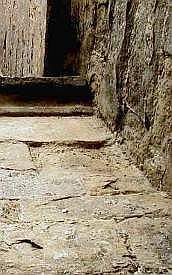 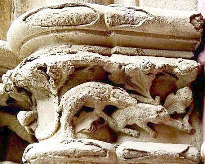 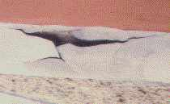 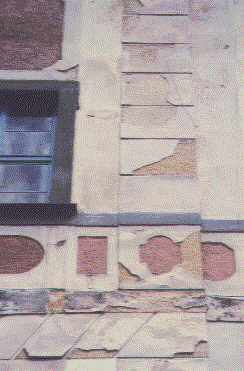 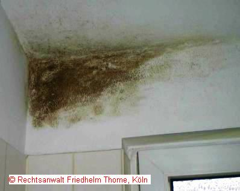 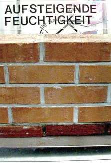 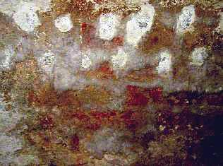 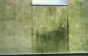 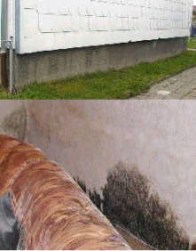 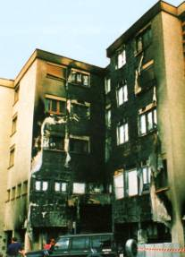 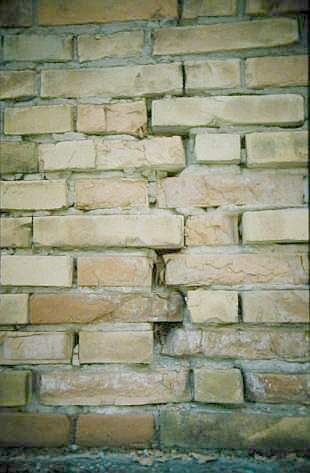 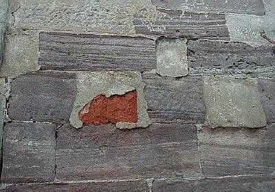 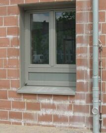 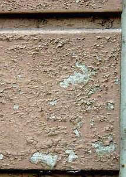 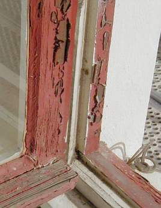 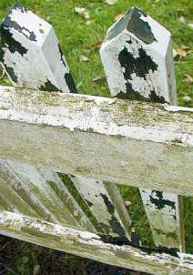 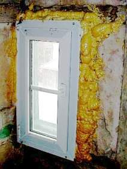 (8) +
(8) +
A explicação dos fotos: (1), (2), (3), (4): Superfíciesdestruídas e crostas como resultado típico de potássio silicato fortalecer e camada de silicato de potássio; (5) Moldam fungus no banheiro; (6a) Nenhum ascender nem dampness ascendente na alvenaria numa tina de banho! (6b) Sal prospera na parede depois de uma horizontal selando com injeção salgado tóxico de seqüência de furos horizontais; (7) Crescimento de alga na superfície de Isolamento Térmico Externo Sistema Composto, de: B + B, Revista para construir manutenção e cuidado de monumentos, janeiro 2002, fotógrafo: Wismar universitário; (8) Encharcaram isolamento térmico no jardim, de: "Artesanato de edifício e reconstrução de edifícios 2/01", fotógrafo: H. O Paetzold; (9) Molham isolamento térmico fora de e molda fungus dentro; (10) Explodido e incendiou isolamento térmico, de: "Quadros dos estragos atualizado", Munique de seguro contra incêndio de Bavarian; (11) morteiro de Cimento, alvenaria e geada; (12) Cimento e pedra natural; (13) cal de morteiro e nova frente; (14) camada Sintética de resin numa frente histórica; (15) camada Sintética de resin numa janela; (16) tinta Sintética de resin numa cerca; (17) Janela e a tecnologia hoje
Konrad Fischer: Fassaden energetisch richtig und kostensparend sanieren und trockenlegen 1
Esta informação é discutível e rara? No entanto, a informação corresponde à Tradição de velho e para a arte dos artesanatos habilidosos. Muitos anos experimentam no trabalho de restauração são a base: Monumentos históricos e edifícios antigos da casa a castelos, para casas de solar, mansões e edifícios eclesiásticos como as igrejas e mosteiros. Também meu pai tinha sido arquiteto e fez este trabalho de conservação desde que 1958 até seus mortos 1979, quando começei. Posso aprender muito dele. Depois que meus estudos eu tinha sido um voluntário científico no escritório para cuidado de monumentos em Munique para dois anos.
Os melhores especialistas da indústria, os peritos famosos do artesanato, os engenheiros muito fidedignos, os arquitetos vestidos pretos sempre escuros e também seus amigos tão amigáveis perto terão principalmente outra opinião. Talvez darão melhor conselho. Mas deve decidir por si se minha informação para você é significativa e útil. No entanto, você também pode seguir seus peritos sábios na Rua de amplo do êxito (só para os peritos?).
Talvez você não pode achar nenhuma resposta a suas perguntas aqui. A alternativa: Achará mais de 1500 páginas a todos estes temas e mais em linguagem alemã: A restauração, preservação, conservação, investigação histórica técnica e pesquisa de edifícios, construindo materiais para casas velhas: O tijolo, cal, morteiro, gesso, alvenaria, estrutura de casa de enxaimel de madeira, concreto, pintando de resin sintética e silicato de potássio, restauração e fortalecendo-se de pedras naturais, corroídas arenosas, problemas com a restauração e renovação da casa e suas partes da fundação ao telhado, para economia e financiamento, engano e corrupção na indústria e o planejar de casas e restaurações. Especial: Uma aventura: A mudança climática - o que é verdadeiro? Aqui pode achar o meio em:
-
Quer comprar um castelo alemão ou palácio? Quer saber o preço de venda? Os exemplos: O palácio / Castelo / Solar-Casa / Mansão para Venda.
-
Umidade ascendente e levantando úmido. Aqui acha, o que pode estar feito mal contra umidade na maçonaria de paredes e alvenaria, no porão e na fundação, na frente e nas camadas de gesso. Maçonaria cara, destrutiva ineficaz secando métodos como isolamento horizontal brutal por injeção de foros / buraco, pratos perfurados de metal ou folhas depois que maçonaria serrando, pintura de impermeabilização em demãos cruzadas de um revestimento impermeabilizante semiflexível, à base de cimento e resina acrílica, e muito engraçado eletrônico secar por electrosmosis: O negócio maior para os vivaldinos não só em Alemanha. Também em língua inglêsa: 🇬🇧 Rising damp does not exist
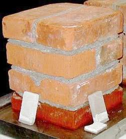 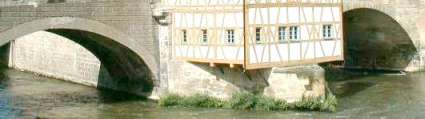 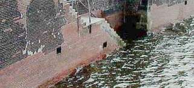
-
Molda fungus e preto molda - O resultado dos métodos modernos de edifício por isolamento térmico errado, lugares herméticos herméticos e aquecimento do ar de lugar. Então seu alimento bem importante é abusado - o ar respirar. Também em inglês: 🇺🇸Como receber livra com moldar ataque.](7mold.md)
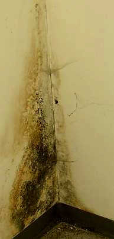
-
Mudança climática - Graficos aquecimento e resfriamento global:
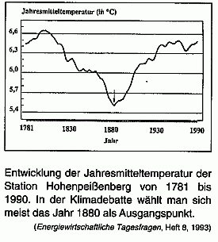
Fatos científicos e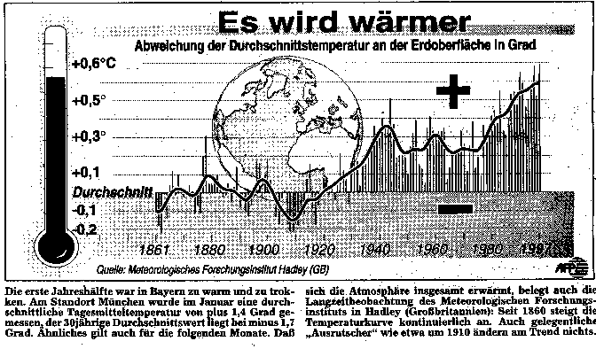
eco-horror apocalíptico verde. www.alerta.inf.br: A fraude do aquecimento global, A fraude do dióxido de carbono (CO2) -
A fraude com o isolamento térmico - energia poupar errado, terrorismo leis ecológicas e corromperam regulamentos governamentais forçá-lo, destruir o própria casa e a sua família ou inquilino: Com materiais ecológicos industriais para o isolamento térmico errado com muito ar (espuma e fibras, pedras cerâmicas artificiais com poros, lã, algodão, cânhamo, celulose, jornais, algas marinhas).... Assim materiais prevenir o transporte do calor radiante e energia solar pela parede. No entanto, estes materiais recebem bem certamente extremamente úmido logo. Então a alga segue, também o venenoso preto molda fungus, o mofo branco, as aranhas, barata, peixe de prata, roendo besouros e cupins, as minhocas, os camundongos, os ratos, o marta e os pica-paus, talvez asma, dor de cabeça, dermatitis e câncer também. A alga na superfície de um isolamento térmico externo sistema composto.
Seja cauteloso contra a tecnologia perigosa da casa passiva! Ciência alemã de refugo! Há também hoje em fraudulentos de Alemanha! A ciência moderna pode ser muito pode corromper.
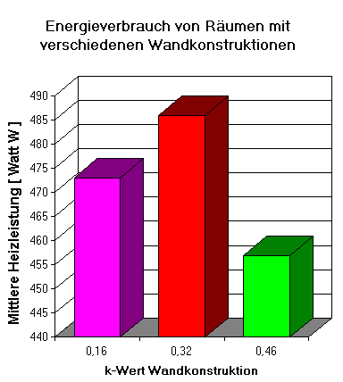
Este diagrama aponta o consumo de energia a lugares de aquecimento com construções diferentes de suas paredes. O R-Valor (= k-Wert) sem sentido e efeito I. De pesquisa do Fraunhofer-Institut no inverno 1983. x-eixo: k-valor da construção de parede; y-eixo: O Watt de consumo de energia de aquecimento no tempo medido. O roxo e vermelho: Isolamento térmico com 23 e 10 cm polistireno / poliestireno. Verde: Único tijolo.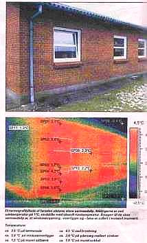
Isso é anúncio contudo único da indústria química internacional e os fabricantes de isolar material. Os produtores podem ser ligados financeiramente com alguns engenheiros, arquitetos, artesões, cientistas, funcionários do estado, políticos e meios de comunicação. Querem vender casas herméticas e isolamento térmico máximo a você.
O quadro mostra só a radiação do calor da superfície da parede sólida na hora do meio-dia. O calor vem aqui só do sol. No sul a parede irradia muito e vermelho, no oeste irradia a parede frio azul-verde só pequeno. Mais Iluminação!
-
Aquecimento Radiante - Errado e corrige aquecimento: Ar aquecido ou aquece paredes?
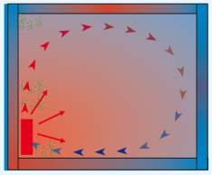
O aquecedor normal de aquecedor de convecção: Ar quente aquece. A cabeça quente - frio de pés. Um taifun empoeirado no lugar ou nenhum vento? Muito ou consumo pequeno de energia? Crianças asmáticas, gripe em cada inverno por aquecimento errado? O Condensate e molda fungus nas paredes frias - ou radiação suave de calor das superfícies do lugar? A energia poupando aquecimento com necessidades térmicas de radiação tecnologia pequena. Sempre seque construções e casas, ar puro, frio saudável de lugar são o resultado.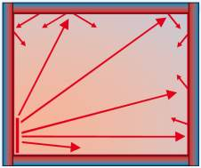
Calor radiante aquece por radiação térmica infravermelha. O ar de lugar é uma geladeira pequena de bit que a superfície do lugar. Nenhum isolamento hermético dos lugares, nenhum isolamento térmico estúpido de ar caramente empacotado em encharcado construindo materiais, nenhum condensate em superfícies frias. Muita informação sobre as desvantagens de muitos quilômetros de canos de aquecimento no chão e atrás do gesso nas paredes, também sobre as melhores alternativas. Aqui um de muitos exemplos do barato e bem conservando aquecimento com calor radiante: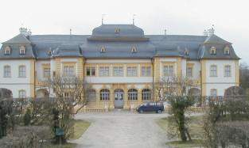
O Palácio de Veitshoechheim com aquecimento térmico de radiação -
Proteção Envenenada de madeira e preservação natural inócua de madeira contra fungi destrutivo, secam apodrecem e insetos (Pragas prejudiciais à madeira e minhoca de madeira, cupins, roendo besouro: Ácaro das mobílias - Glycyphagus domesticus, Brocas das árvores - Ernobius mollis, Caruncho da madeira - Xestobium rufovillosum, Lyctus brunneus, Hylotrupes bajulus, Xestobium rufovillosum, Caruncho da madeira viva - Scolytidae, Gorgulho do bambu - Dinoderus minutus, Gorgulhos xilófagos - Euophryum sp, Podridão branca húmida - Fibroporia vaillantii, Podridão parda seca - Coniophora puteana, Podridão seca - Serpula lacrymans, Térmitas da madeira seca - Cryptotermes brevis ...), também para o cuidado durável de construções de madeira gastas fora de como para terraços de exemplo, sacadas, aterrissando etapas, pontes ...
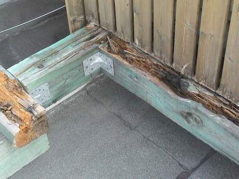
Tempo e madeira com proteção venenosa.- Problemas concernente as e novas janelas velhas e a camada - com muitas explicações técnicas.
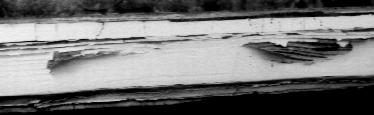
Janelas velhas e nova camada sintética de resin depois de um ano.
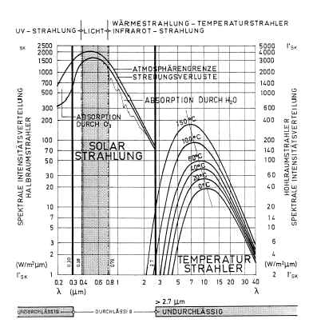
Ondas electromagnéticas e vidro Um diagrama de Professor Dr.-Ing. habil. Meier: O vidro de vidraça não é permeável para os comprimentos de onda da radiação de UV (< 0,3 µm) e radiação electromagnética de IR (calor radiante infravermelho > 2,7 µm). Só os comprimentos de onda de luz podem penetrar vidro. Portanto pode receber luz do sol no lugar e proteção de fogo de fogo vidro resistente. A luz do fogo é visível, o calor do fogo não pode penetrar. As ondas electromagnéticas daluz serão absorvidas pelos materiais e emitido no comprimento de onda infravermelho. A luz pode aquecer seu lugar. O x-eixo: O comprimento de onda e transparência das vidraças. y-eixo: A intensidade da radiação. O calor é transportado em materiais também por calor radiante (phonons, migração dos elétrons). Duas vidraças filtram mais libertam energia solar que um. Duplo esmaltou janelas forçar condensação na parede. Janelas seladas aumentam o dampness no ar de lugar. Isto aumenta o consumo de energia para o aquecimento. Janelas portanto modernas aumentarão consumo de energia e molda ataque. Iluminação!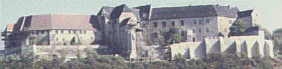
O castelo de Neuenburg em Saxonia-Anhalt. Planejar da restauração (arquitetura, construção, engenharia civil / a tecnologia: A água, desperdício regam, aquecimento, ventilação) : Konrad Fischer e provê de pessoal empregados. (Informação alemã: O Museu de Castelo de Neuenburg, Informação inglesa de E. Kane: www.roadstoruins.com/neuenburg.html)- Minha conferência inglesa num seminário de RILEM 'Caraterização de morteiros velhos com respeito a seu repara - Morteiros Históricos - Caraterização e Provas, a Universidade de Paisley, Escócia, 1999 de maio: 'Arte Tradicional em Morteiros Modernos - Trabalha em Prática'? (Inglês🇬🇧) Meus esboços do Exkursion de RILEM a Castelo de Stirling e para os fornos históricos de Charlestown Fife, a Glasgow e outro coloca. 🇬🇧
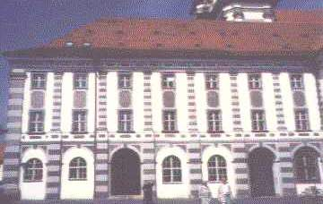
Waldsassen - Abadia de Cistercienses A frente que nós reparamos com puro (não hidráulica!)! cal morteiro e cal-casein-lava. E melhores que destruindo métodos mais baratos basearam em cimento, sintéticos e silicatos de potássio.-
Deterioração de concreto e cimenta -
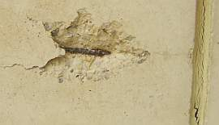
Enferrujado corroído e decaído reforçado concreto. O desastre com as construções e materiais de construção da arquitetura moderna, que se destroem. Errado e corrige repara de construções enferrujadas de reforçado concreto. -
O autor / Referência - minha biografia, refere-se a alguns projetos desde que 1979 (> 400), testimonials oficialde referência. A nota: Um estalido em meu quadro baixará uma amostra 2,8MBwmv de jogo me violoncelo na Oratória de Natal de J. S. Bach, conduzido por Marius Popp 2005 em Kronach (a cidade de Lucas Cranach).
-
Construindo materiais - Os problemas dos sistemas estruturais modernos. Podem estragar a casa velha e seus habitantes. Há alternativas.
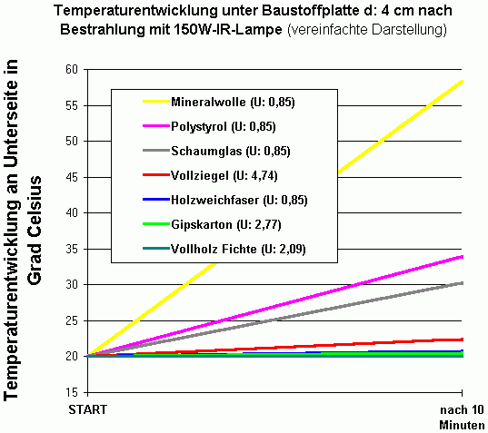
'A experiência de Lichtenfels' :O aumento da temperatura sob materiais diferentes de materiais/isolando de edifício (4 cm) depois de 10 minutos de irradiação com uma lâmpada leve vermelha. Os materiais de acima: Lã de rocha, poliestireno expandido, cristal celular (espumaram vidro), tijolo de barro, fibra de madeira, papelão de gesso, madeira de pinho. x-eixo: O tempo da irradiação. y-eixo: A temperatura em °Celsius.A nota: O R-Valores/U-valores (= "U") não são comum com as mudanças da temperatura e o efeito prático do isolamento térmico.
Material poroso como tijolos leves modernos, isolantes o isolamento térmico, industrial ou ecológico, concreto arejado são tecnicamente muito problemáticos. Algum prevene o tubo drenagem capilar dos materiais com camadas sintéticas. Muitos ameaça a saúde com venenos terríveis tal como sal de boron, fungicide, pestizid, inseticida, algizide. Lã de Rocha, PUR (Poliuretano), flocos o placas de polistireno expandido ou expulsado EPS e XEPS encontrado em várias densidades, poliéster , lã e fibra de Vidro, espumaram glas ou fibra de madeira, lã de ovelha, algodão ou lã de celulose, fibra de cânhamo ou lã de cânhamo, fibra de linho, fibra de coco, alga, algas marinhas, solo fértil leve, vermiculite, lã de madeira, reciclagem de papel para impressão, críticas de celulose sopraram e celulose pulverizada são únicos alguns produtos típicos para isolamento térmico fracassado. Eles não dão nenhum melhor isolamento térmico que o sólido tradicional construindo materiais como madeira, tijolo e pedra natural. Um isolamento frontal adicional aumentará o consumo de calor: por fazer sombra a parede atrás. E todo o envenenamento e selando do que isolando materiais não ajudará contra problemas de umidade. Esta umidade de armazém de materiais e condensate. Isso faz o molda fungi como preto molda, seca apodrece, mofo e pingos, também piolhos, formigas e besouros, camundongos e ratos muito afortunado. Logo que o condensate cruel derrotou as folhas sintéticas, o parasits virá! O proprietário esperto deve esquecer-se todas as computações da condução térmica teórica. Iluminação!
A informação a cal, para tijolo, morteiro e maçonaria:
- Morteiro de cal e sua melhora
- A restauração de gesso e pintando em frentes históricas - problemas e soluções
- Os erros bem freqüentes com o uso de morteiro, gesso e tinta de cal
- Morteiro de cal
- Reboca e morteiro de cal no edifício de antigo
- Construindo materiais para paredes e maçonaria o enxaimel na comparação - com muitos edifício raro interessante tabelas - informação importante para construir em quente, quente, esfria e frio, regiões úmidas secas. Os problemas de materiais modernos de edifício para restauração, que envelhecem por mudar temperaturas e dampness muito rápido e que assim destrói substância histórica. O aviso: O morteiro de cimento não é permeável para água, então água é pegada na armadilha nas paredes. Uma vez saturado, a parede começa a desgastar.
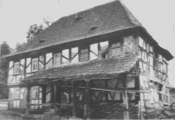
.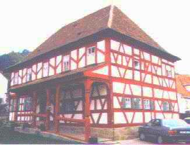
Casa barroca de enxaimel de madeira antes de e depois que repara com tecnologia econômica tradicional, planejando: Arquiteto Konrad Fischer e empregados-
Restauração macia Cuidadosa e preservação - Como reparar e restaurar os edifícios velhos e construções com métodos econômicos, revogáveis, sensíveis, inovativos e tradicionais. Em contraste com métodos modernos, que acha por presentes belos da indústria a pessoas responsáveis e para o pessoal para planejar (professores, restauradores, diretores, arquiteto, engenheiros) o meio à casa velha e estraga depois de alguns anos. Como os edifícios históricos foram construídos, como o modernos? Em vezes anteriores: A maçonaria e paredes de pedra (pedra natural, pedra de pausa, tijolo e estrutura de enxaimel de madeira). O gesso só com morteiro de areia e cal. A camada uma tinta de cal e de óleo natural. Tudo reparar bem. Hoje: Brutalidades terríveis de ferro enferrujado, concreto reforçado, tijolo de areia de cal, plásticos, tijolos porosos e isolamento de espumas e fibras. Tudo mal reparar.
-
Economia e restauração e Financiando - perguntas financeiras Econômicas concernente o repara de edifícios velhos.
Kloster Reichenstein - Fundraising-Video
-
Talvez entenderá meus textos alemães melhor se traduz minhas páginas alemãs de Internet? Tente Worldlingo-Tradutor.
-
Se necessita mais consulta: 200 EUR para o detalhou resposta a 1-3 perguntas por correio eletrônico, 500 EUR para 4-10 perguntas, consulta local: 150 EUR durante hora cada da consulta e o tempo de viagem. Adicional os custos da viagem. Submeterei uma oferta se quer. O pagamento (Conta bancária ) em avanço com o encarrega, para consultas locais 70 %. Sabe por que. Isto é demais para poupar muito dinheiro e azar durante o restauration? Deve decidir. Por favor envie-me alguns quadros dos problemas e a construção de sua casa com suas perguntas. Mais detalhe em alemão: Consulta. Há quadros de referências também. Os exemplos: Muitas Perguntas e Responde FAQ
Naturalmente sei que são muito cauteloso por gastar seu dinheiro. Me demais! Suas alternativas: Recebe qualquer conselho em toda parte. Sabe a inteligência de forum na Internet. Por favor tente o, eu desejo-o muita sorte! Dois consultores, três soluções, quatro desastres. A sabedoria da indústria artesões atrás, experimentados, peritos inteligentes formidáveis, pensionista do Tipo FAÇA-VOCÊ-MESMO, vizinhos curiosos, técnicos desempregados, acadêmicos, físicos, novatos, o tio muito esperto e tia. Não é?
Isso era ele para hoje, desejo-o muito êxito! Ou exceto todo seu dinheiro, deixa sua idade de casa em dignidade e gozam mais feriados e vinhos vermelhos caros.
Adeus e volte logo!!!
(Também mantem em ocupar-se de seus amigos, que não sabe estas informação ...)
Visita! Localizada entre Blumenau e Jaraguá do Sul, Pomerode - Cidade de Enxaimel ... "O Enxaimel, ou Fachwerk (originário de "Fach" assim denominavam o espaço preenchido com material entrelaçado de uma parede feita de caibros), é uma técnica de construção que consiste em paredes montadas com hastes de madeira encaixadas entre si em posições horizontais, verticais ou inclinadas, cujos espaços são preenchidos geralmente por pedras ou tijolos. Além do caráter estético privilegiado, os tirantes de madeira dão estilo e beleza às construções do gênero. Outras características são a robustez e a grande inclinação dos telhados. Na adaptação do enxaimel às características climáticas da região, foi necessária a implantação, por conta da elevada unidade local, de uma estrutura feita de pedra que sustenta as construções evitando que a madeira se molhe." (Wikipedia)
"A Casa em enxaimel: Ao chegarem em solo gaúcho, os imigrantes logo perceberam a abundância de madeira e retornaram às velhas técnicas da construção em enxaimel, extinguida no final do século XIII na Europa, reinterpretando os partidos arquitetônicos. Na técnica enxaimel, encontra-se sempre uma estrutura autoportante de madeira, cujo tramos são preenchidos com materiais terrosos aplicados numa variedade de técnicas.
O partido arquitetônico, que na Europa era fechado, com todas as funções debaixo de um mesmo teto, inclusive de abrigar os animais, aqui foi substituído por um partido aberto. O centro polarizador foi o espaço aberto (pátio), ao redor do qual foram dispostos os chiqueiros, o galinheiros, os estábulos, o paiol, o poço e a casa. De imediato, o imigrante agregou novas funções propiciadas pelo meio e desconhecidas na Alemanha, com a moenda de cana de açúcar.
As fundações das casas eram construídas em pedra de arenito aparelhada, encontrada em toda a antiga zona colonial, com largura maior que o corpo da casa. O enchimento do enxaimel (paredes) era feito de taipa, adobe, tijolos ou, raramente, de pedra tal qual na Alemanha. Por ser exclusivamente artesanal, a casa requeria, no mínimo, dois anos de trabalho. Praticamente sem ferro e sem prego, os imigrantes cortavam as peças de madeira fazendo com que se encaixassem, dando sustentação. As ligações da peças componentes da estrutura eram feitas com tarugos de madeira para economizar parafusos. Tudo porque o ferro precisava ser importado e tornava-se muito caro. Somente para prender as tábuas do piso e do forro usava-se pregos, que tinham de ser preparados manualmente cada um.
"A montagem da estrutura de madeira, bem como o telhado, era realizado no chão. Quando concluído, o esqueleto era colocado em pé co auxílio da vizinhança. A casa era em construção simples em planta baixa. Compunha-se de uma sala e dois, três ou quatro quartos. Geralmente, a cozinha era uma composição em anexo devido ao constante perigo de incêndio. Seu pé-direito era de ordem de três metros de altura. Devido ao clima subtropical da região sul, as janelas tornaram bem mais amplas permitindo maior entrada de luz. Escondida dentro de um quarto ou atrás de uma porta havia uma íngreme escada levando ao sótão. O telhado de duas águas era construído com tesouras sem pontaletes, deixando um espaço aberto entre os dois frontões o que criava um sótão, onde havia eventualmente um quarto destinado para os rapazes da casa ou um espaço para guardar velharias.
Geralmente em cada um dos frontões havia uma ou duas pequenas janelas. Normalmente, a casa era construída em terreno com leve inclinação tornando a presença de porões uma constante. As fundações de pedra sustentavam a estrutura de madeira e impediam o seu apodrecimento precoce. No porão eram guardados os produtos frescos e utensílios de uso eventual." (www.diamantina.mg.gov.br/v4/documento.asp?iId=28323)
"O enxaimel não é uma criação alemã, assim como as construções ecléticas não são germânicas, nem açorianas, mas tem sua base nestes lugares. De base açoriana ou germânica engendra-se localmente outras formas e funções na construção e no cotidiano da arquitetura local / regional. É oportuno lembrar que o processo de reprodução da arte e da técnica acompanha o homem, modifica-se e adapta-se às condições locais, e quando representativo, permanece como testemunha de sua contribuição numa temporalidade determinada.
O enxaimel do Vale do Itajaí não é inteiramente original, mas se reveste de importância pela sua transmutação, adaptabilidade e forte significado de um período onde procurou-se sedimentar um novo modo de vida, o evento de um processo cultural em gestação. A metamorfose cultural se materializa através da memória em forma arquitetônica cristalizada . O importante não é o ato, a originalidade intrínseca da tecnologia, ou no caso da arquitetura, mas da reinvenção de um processo cultural para justificar a cidadania nova.
O enxaimel trazido pelos imigrantes alemães no fim do século XIX remonta ao período renascentista, desenvolvido em alguns lugares da Europa, e no caso da Alemanha, entre os séculos XVI e XVIII, já considerado fora da época. Entretanto esta técnica construtiva conhecida dos etruscos no século VI a.C. pode ter tido seu início talvez, alguns séculos antes." (www.arquitetando.xpg.com.br/arquitetura%20enxaimel.htm)

DOCUMENTOS SOBRE PATRIMÔNIO HISTÓRICO Fonte: Vitruvius.com
Carta de Veneza [maio de 1964]
Portadoras de mensagem espiritual do passado, as obras monumentais de cada povo perduram no presente como o testemunho vivo de suas tradições seculares. A humanidade, cada vez mais consciente da unidade dos valores humanos, as considera um patrimônio comum e, perante as gerações futuras, se reconhece solidariamente responsável por preservá-las, impondo a si mesma o dever de transmiti-las na plenitude de sua autenticidade.
É, portanto, essencial que os princípios que devem presidir à conservação e à restauração dos monumentos sejam elaborados em comum e formulados num plano internacional, ainda que caiba a cada nação aplicá-los no contexto de sua própria cultura e de suas tradições.
Ao dar uma primeira forma a esses princípios fundamentais, a Carta de Atenas de 1931 contribui para a propagação de um amplo movimento internacional que se traduziu principalmente em documentos nacionais, na atividade de ICOM e da UNESCO e na criação, por esta última, do Centro Internacional de Estudos para a Conservação e Restauração dos Bens Culturais. A sensibilidade e o espírito crítico se dirigem para problemas cada vez mais complexos e diversificados. Agora é chegado o momento de reexaminar os princípios da Carta para aprofundá-las e dotá-las de um alcance maior em um novo documento.
Consequentemente, o Segundo Congresso Internacional de Arquitetos e Técnicos dos Monumentos Históricos, reunido em Veneza de 25 a 31 de maio de 1964, aprovou o texto seguinte:
Definições
Artigo 1º - A noção de monumento histórico compreende a criação arquitetônica isolada, bem como o sítio urbano ou rural que dá testemunho de uma civilização particular, de uma evolução significativa ou de um acontecimento histórico. Estende-se não só às grandes criações mas também às obras modestas, que tenham adquirido, com o tempo, uma significação cultural.
Artigo 2º - A conservação e a restauração dos monumentos constituem uma disciplina que reclama a colaboração de todas as ciências e técnicas que possam contribuir para o estudo e a salvaguarda do patrimônio monumental.
Finalidade
Artigo 3º - A conservação e a restauração dos monumentos visam a salvaguardar tanto a obra de arte quanto o testemunho histórico.
Conservação
Artigo 4º - A conservação dos monumentos exige, antes de tudo, manutenção permanente.
Artigo 5º - A conservação dos monumentos é sempre favorecida por sua destinação a uma função útil à sociedade; tal destinação é portanto, desejável, mas não pode nem deve alterar à disposição ou a decoração dos edifícios. É somente dentro destes limites que se deve conceber e se pode autorizar as modificações exigidas pela evolução dos usos e costumes.
Artigo 6º - A conservação de um monumento implica a preservação de um esquema em sua escala. Enquanto subsistir, o esquema tradicional será conservado, e toda construção nova, toda destruição e toda modificação que poderiam alterar as relações de volumes e de cores serão proibidas.
Artigo 7º- O monumento é inseparável da história de que é testemunho e do meio em que se situa. Por isso, o deslocamento de todo o monumento ou de parte dele não pode ser tolerado, exceto quando a salvaguarda do monumento o exigir ou quando o justificarem razões de grande interesse nacional ou internacional.
Artigo 8º - Os elementos de escultura, pintura ou decoração que são parte integrante do monumento não lhes podem ser retirados a não ser que essa medida seja a única capaz de assegurar sua conservação.
Restauração
Artigo 9º - A restauração é uma operação que deve ter caráter excepcional. Tem por objetivo conservar e revelar os valores estéticos e históricos do monumento e fundamenta-se no respeito ao material original e aos documentos autênticos. Termina onde começa a hipótese; no plano das reconstituições conjeturais, todo trabalho complementar reconhecido como indispensável por razões estéticas ou técnicas destacar-se-á da composição arquitetônica e deverá ostentar a marca do nosso tempo. A restauração será sempre precedida e acompanhada de um estudo arqueológico e histórico do monumento.
Artigo 10º - Quando as técnicas tradicionais se revelarem inadequadas, a consolidação do monumento pode ser assegurada com o emprego de todas as técnicas modernas de conservação e construção cuja eficácia tenha sido demonstrada por dados científicos e comprovada pela experiência.
Artigo11º - As contribuições válidas de todas as épocas para a edificação do monumento devem ser respeitadas, visto que a unidade de estilo não é a finalidade a alcançar no curso de uma restauração, a exibição de uma etapa subjacente só se justifica em circunstâncias excepcionais e quando o que se elimina é de pouco interesse e o material que é revelado é de grande valor histórico, arqueológico, ou estético, e seu estado de conservação é considerado satisfatório. O julgamento do valor dos elementos em causa e a decisão quanto ao que pode ser eliminado não podem depender somente do autor do projeto.
Artigo 12º - Os elementos destinados a substituir as partes faltantes devem integrar-se harmoniosamente ao conjunto, distinguindo-se, todavia, das partes originais a fim de que a restauração não falsifique o documento de arte e de história.
Artigo 13º - Os acréscimos só poderão ser tolerados na medida em que respeitarem todas as partes interessantes do edifício, seu esquema tradicional, o equilíbrio de sua composição e suas relações com o meio ambiente.
Sítios Monumentais
Artigo14º - Os sítios monumentais devem ser objeto de cuidados especiais que visem a salvaguardar sua integridade e assegurar seu saneamento, sua manutenção e valorização. Os trabalhos de conservação e restauração que neles se efetuarem devem inspirar-se nos princípios enunciados nos artigos precedentes.
Escavações
Artigo 15º - Os trabalhos de escavação devem ser executados em conformidade com padrões científicos e com a "Recomendação Definidora dos Princípios Internacionais a serem aplicados em Matéria de Escavações Arqueológicas", adotada pela UNESCO em 1956.
Devem ser asseguradas as manutenções das ruínas e as medidas necessárias à conservação e proteção permanente dos elementos arquitetônicos e dos objetos descobertos. Além disso, devem ser tomadas todas as iniciativas para facilitar a compreensão do monumento trazido à luz sem jamais deturpar seu significado.
Todo trabalho de reconstrução deverá, portanto, deve ser excluído a priori, admitindo-se apenas a anastilose, ou seja, a recomposição de partes existentes, mas desmembradas. Os elementos de integração deverão ser sempre reconhecíveis e reduzir-se ao mínimo necessário para assegurar as condições de conservação do monumento e restabelecer a continuidade de suas formas.
Documentação e Publicações
Artigo 16º - Os trabalhos de conservação, de restauração e de escavação serão sempre acompanhadas pela elaboração de uma documentação precisa sob a forma de relatórios analíticos e críticos, ilustrados com desenhos e fotografias. Todas as fases dos trabalhos de desobstrução, consolidação recomposição e integração, bem como os elementos técnicos e formais identificados ao longo dos trabalhos serão ali consignados. Essa documentação será depositada nos arquivos de um órgão público e posta à disposição dos pesquisadores; recomenda-se sua publicação.
Normas de Quito [novembro / dezembro de 1967]
Informe Final
I - Introdução
A inclusão do problema representado pela necessária conservação e utilização do patrimônio monumental na relação de esforços multinacionais que se comprometem a realizar os governos da América resulta alentador num duplo sentido. Primeiramente, porque com isso os chefes de Estado deixam reconhecida, de maneira expressa, a existência de uma situação de urgência que reclama a cooperação interamericana, e em segundo, porque, sendo a razão fundamental da Reunião de Punta del Leste o propósito comum de dar um novo impulso ao desenvolvimento do continente, está se aceitando implicitamente que esses bens do patrimônio cultural representam um valor econômico e são suscetíveis de constituir-se em instrumentos do progresso.
O acelerado processo de empobrecimento que vem sofrendo a maioria dos países americanos como conseqüência do estado de abandono e da falta de defesa em que se encontra sua riqueza monumental e artística demanda a adoção de medidas de emergência, tanto em nível nacional quanto internacional, mas sua eficácia prática dependerá, em último caso, de sua adequada formulação dentro de um plano sistemático de revalorização dos bens patrimoniais em função do desenvolvimento econômico-social.
As recomendações do presente informe são dirigidas nesse sentido e se limitam, especificamente, à adequada conservação e utilização dos monumentos e sítios de interesse arqueológico, histórico e artístico, de conformidade com o que dispõe o Capítulo V, Esforços Multinacionais, letra d), da Declaração dos Presidentes da América.
É preciso reconhecer, entretanto, que, dada a íntima relação entre o continente arquitetônico e o conteúdo artístico, torna-se imprescindível estender a devida proteção a outros bens móveis e a objetos valiosos do patrimônio cultural para evitar sua contínua deterioração e subtração impune e para conseguir que contribuam à obtenção dos fins pretendidos mediante sua adequada exibição, de acordo com a moderna técnica museográfica.
II - Considerações Gerais
A idéia do espaço é inseparável do conceito do monumento e, portanto, a tutela do Estado pode e deve se estender ao contexto urbano, ao ambiente natural que o emoldura e aos bens culturais que encerra. Mas pode existir uma zona, recinto ou sítio de caráter monumental, sem que nenhum dos elementos que o constitui, isoladamente considerados, mereça essa designação.
Os lugares pitorescos e outras belezas naturais, objeto de defesa e proteção por parte do Estado, não são propriamente monumentos nacionais.
A marca histórica ou artística do homem é essencial para imprimir a uma paisagem ou a um recinto determinado essa categoria específica.
Qualquer que seja o valor intrínseco de um bem ou as circunstâncias que concorram para constituir a sua importância e significação histórica ou artística, ele não se constituirá em um monumento a não ser que haja uma expressa declaração do Estado nesse sentido. A declaração de monumento nacional implica a sua identificação e registro oficiais.
A partir desse momento o bem em questão estará submetido ao regime de exceção assinalado pela lei. Todo monumento nacional está implicitamente destinado a cumprir uma função social. Cabe ao Estado fazer com que ela prevaleça e determinar, nos diferentes casos, a medida em que a referida função social é compatível com a propriedade privada e com o interesse dos particulares.
III - O Patrimônio Monumental e o Momento Americano
É uma realidade evidente que a América, e em especial a América Ibérica, constitui uma região extraordinariamente rica em recursos monumentais. Aos grandiosos testemunhos das culturas pré-colombianas se agregam as expressões monumentais, arquitetônicas, artísticas e históricas do extenso período colonial, numa exuberante variedade de formas.
Um acento próprio, produto do fenômeno da aculturação, contribui para imprimir aos estilos importados um sentido genuinamente americano de múltiplas manifestações locais que os caracteriza e distingue. Ruínas arqueológicas de capital importância, nem sempre acessíveis ou de todo exploradas, se alternam com surpreendentes sobrevivências do passado; complexos urbanos e povoados inteiros são suscetíveis de se tomar centros de maior interesse e atração.
É certo também que grande parte desse patrimônio se arruinou irremediavelmente no curso das últimas décadas ou se acha hoje em perigo iminente de perder-se. Múltiplos fatores têm contribuído e continuam contribuindo para diminuir as reservas de bens culturais da maioria dos países da América Ibérica, mas é necessário reconhecer que a razão fundamental da destruição progressivamente acelerada desse potencial de riqueza reside na falta de uma política oficial capaz de imprimir eficácia prática às medidas protecionistas vigentes e de promover a revalorização do patrimônio monumental em função do interesse público e para beneficio econômico da nação.
Nos momentos críticos em que a América se encontra comprometida em um grande empenho progressista, que implica a exploração exaustiva de seus recursos naturais e a transformação progressiva das suas estruturas econômico-sociais, os problemas que se relacionam com a defesa, conservação e utilização dos monumentos, sítios e conjuntos monumentais adquirem excepcional importância e atualidade.
Todo processo de acelerado desenvolvimento traz consigo a multiplicação de obras de infra-estrutura e a ocupação de extensas áreas por instalações industriais e construções imobiliárias que não apenas alteram, mas deformam por completo a paisagem, apagando as marcas e expressões do passado, testemunhos de uma tradição histórica de inestimável valor.
Grande número de cidades ibero-americanas que entesouravam, num passado ainda próximo, um rico patrimônio monumental, evidência de sua grandeza passada - templos, praças, fontes e vielas, que, em conjunto, acentuavam sua personalidade e atração -, têm sofrido tais mutilação e degradações no seu perfil arquitetônico que se tomam irreconhecíveis. Tudo isso em nome de um mal entendido e pior administrado progresso urbano.
Não é exagerado afirmar que o potencial de riqueza destruída com esses atos irresponsáveis de vandalismo urbanístico em numerosas cidades do continente excede em muito os benefícios advindos para a economia nacional através das instalações e melhorias de infra-estrutura com que se pretendem justificar.
IV - A solução conciliatória
A necessidade de conciliar as exigências do progresso urbano com a salvaguarda dos valores ambientais já é hoje em dia uma norma inviolável na formulação dos planos reguladores, em nível tanto local como nacional.
Nesse sentido, todo plano de ordenação deverá realizar-se de forma que permita integrar ao conjunto urbanístico os centros ou complexos históricos de interesse ambiental.
A defesa e valorização do patrimônio monumental e artístico não se contradiz, teórica nem praticamente, com uma política de ordenação urbanística cientificamente desenvolvida. Longe disso, deve constituir o seu complemento.
Em confirmação a este critério se transcreve o seguinte parágrafo do Informe Weiss, apresentado à Comissão Cultural e Científica do Conselho da Europa (1 963): "É possível equipar um país sem desfigurá-lo; preparar e servir ao futuro sem destruir o passado. A elevação do nível de vida não deve se limitar à realização de um bem-estar material progressivo; deve ser associado à criação de um quadro de vida digno do homem".
A continuidade do horizonte histórico e cultural da América, gravemente comprometido pela entronização de um processo anárquico de modernização, exige a adoção de medidas de defesa, recuperação e revalorização do patrimônio monumental da região e a formulação de planos nacionais e multinacionais a curto e a longo prazo.
É preciso admitir que os organismos internacionais especializados têm reconhecido a dimensão do problema e vêm trabalhando com afinco, nos últimos anos, para conseguir soluções satisfatórias. Está à disposição da América a experiência acumulada.
A partir da Carta de Atenas, de 1932, muitos foram os congressos internacionais que se sucederam até consolidar-se o atual critério dominante. Entre os que mais se aprofundaram no problema, contribuindo com recomendações concretas, figuram o da União Internacional de Arquitetos (Moscou, 1958); o Congresso da Federação Internacional da Habitação e Urbanismo (Santiago de Compostela, 1961), que teve como tema o problema dos conjuntos históricos; o Congresso de Veneza (1964) e o mais recente, o do ICOMOS, em Cáceres (1967), que trazem a esse tema de tanto interesse americano um ponto de vista eminentemente prático.
V - Valorização Econômica dos Monumentos
Partimos do pressuposto de que os monumentos de interesse arqueológico, histórico e artístico constituem também recursos econômicos da mesma forma que as riquezas naturais do país. Consequentemente, as medidas que levam a sua preservação e adequada utilização não só guardam relação com os planos de desenvolvimento, mas fazem ou devem fazer parte deles.
Na mais ampla esfera das relações interamericanas, reiteradas recomendações e resoluções de diferentes organismos do sistema levaram progressivamente o problema ao mais alto nível de consideração: a Reunião dos Chefes de Estado (Punta del Este, 1967).
É evidente que a inclusão do problema relativo à adequada preservação e utilização do patrimônio monumental na citada reunião corresponde às mesmas razões fundamentais que levaram os presidentes da América a convocá-la: a necessidade de dar à Aliança para o Progresso um novo e mais vigoroso impulso e de oferecer, através da cooperação continental, a ajuda necessária ao desenvolvimento econômico dos países membros da OEA.
Isso explica o emprego do termo "utilização", que figura no ponto 2, A. capítulo V, da Declaração dos Presidentes:
"Esforços Multinacionais..." 2. Encomendar aos organismos competentes da OEA que:... d) Estendam a cooperação interamericana à conservação e utilização dos monumentos arqueológicos, históricos e artísticos."
Mais concretamente, na resolução 2 da Segunda Reunião Extraordinária do Conselho Interamericano Cultural, convocada com a finalidade única de dar cumprimento ao disposto na Declaração dos Presidentes, dentro da área de competência do conselho, diz-se:
"... A extensão da assistência técnica e a ajuda financeira ao patrimônio cultural dos Estados Membros será cumprida em função de seu desenvolvimento econômico e turístico."
Em suma, trata-se de mobilizar os esforços nacionais no sentido de procurar o melhor aproveitamento dos recursos monumentais de que se disponha, como meio indireto de favorecer o desenvolvimento econômico do país. Isso implica uma tarefa prévia de planejamento em nível nacional, ou seja, a avaliação dos recursos disponíveis e a formulação de projetos específicos dentro de um plano de ordenação geral.
A extensão da cooperação interamericana para esse aspecto do desenvolvimento implica o reconhecimento de que o esforço nacional não é por si só suficiente para empreender uma ação que, na maioria dos casos, excede suas atuais possibilidades. É unicamente através da ação multinacional que muitos Estados-Membros em processo de desenvolvimento podem prover-se dos serviços técnicos e dos recursos financeiros indispensáveis.
VI - A valorização do Patrimônio do Cultural
O termo "valorização", que tende a tomar-se cada dia mais freqüente entre os especialistas, adquire no momento americano uma especial aplicação. Se algo caracteriza este momento é, precisamente, a urgente necessidade de utilizar ao máximo o cabedal de seus recursos e é evidente que entre eles figura o patrimônio monumental das nações.
Valorizar um bem histórico ou artístico equivale a habilitá-lo com as condições objetivas e ambientais que, sem desvirtuar sua natureza ressaltem suas características e permitam seu ótimo aproveitamento. Deve-se entender que a valorização se realiza em função de um fim transcendente, que, no caso da América Ibérica, seria o de contribuir para o desenvolvimento econômico da região. Em outras palavras, trata-se de incorporar a um potencial econômico um valor atual; de pôr em produtividade uma riqueza inexplorada, mediante um processo de revalorização que, longe de diminuir sua significação puramente histórica ou artística, a enriquece, passando-a do domínio exclusivo de minorias eruditas ao conhecimento e fruição de maiorias populares.
Em síntese, a valorização do patrimônio monumental e artístico implica uma ação sistemática, eminentemente técnica, dirigida a utilizar todos e cada um desses bens conforme a sua natureza, destacando e exaltando suas características e méritos até colocá-los em condições de cumprir plenamente a nova função a que estão destinados.
É preciso destacar que, em alguma medida, a área de implantação de uma construção de especial interesse toma-se comprometida por causa da vizinhança imediata ao monumento, o que equivale a dizer que, de certa maneira, passará a ser parte dele quando for valorizado. As normas protecionistas e os planos de revalorização têm que estender-se, portanto, a todo o âmbito do monumento.
De outra parte, a valorização de um monumento exerce uma benéfica ação reflexa sobre o perímetro urbano em que se encontra implantado e ainda transborda dessa área imediata, estendendo seus efeitos a zonas mais distantes. Esse incremento de valor real de um bem por ação reflexa constitui uma forma de mais valia que há de se levar em consideração.
É evidente que, na medida em que um monumento atrai a atenção do visitante, aumentará a demanda de comerciantes interessados em instalar estabelecimentos apropriadas a sua sombra protetora. Essa é outra conseqüência previsível da valorização e implica a prévia adoção de medidas reguladoras que, ao mesmo tempo em que facilitem e estimulem a iniciativa privada, impeçam a desnaturalização do lugar e a perda das finalidades primordiais que se perseguem.
Do exposto se depreende que a diversidade de monumentos e edificações de marcado interesse histórico e artístico situadas dentro do núcleo de valor ambiental se relacionam entre si e exercem um efeito multiplicador sobre o resto da área, que ficaria revalorizada em conjunto como conseqüência de um plano de valorização e de saneamento de suas principais construções.
VII - Os monumentos em função do turismo
Os valores propriamente culturais não se desnaturalizam nem se comprometem ao vincular-se com os interesses turísticos e, longe disso, a maior atração exercida pelos monumentos e a fluência crescente de visitantes contribuem para afirmar a consciência de sua importância e significação nacionais.
Um monumento restaurado adequadamente, um conjunto urbano valorizado, constituem não só uma lição viva de história como uma legítima razão de dignidade nacional.
No mais amplo marco das relações internacionais, esses testemunhos do passado estimulam os sentimentos de compreensão, harmonia e comunhão espiritual mesmo entre povos que mantêm rivalidade política. Tudo quanto contribuir para exaltar os valores do espírito, mesmo que a intenção original nada tenha a ver com a cultura, há de derivar em seu beneficio.
A Europa deve ao turismo, direta ou indiretamente, a salvaguarda de uma grande parte de seu patrimônio cultural, condenado à completa e irremediável destruição, e a sensibilidade contemporânea, mais visual que literária, tem oportunidade de se enriquecer com a contemplação de novos exemplos da civilização ocidental, resgatados tecnicamente graças ao poderoso estímulo turístico.
Se os bens do patrimônio cultural desempenham papel tão importante na promoção do turismo, é lógico que os investimentos que se requerem para sua devida restauração e habilitação específica devem se fazer simultaneamente aos que reclama o equipamento turístico e, mais propriamente, integrar-se num só plano econômico de desenvolvimento regional.
A Conferência das Nações Unidas sobre Viagens Internacionais e Turismo (Roma, 1963) não somente recomendou que se desse uma alta prioridade aos investimentos em turismo dentro dos planos nacionais, como fez ressaltar que, "do ponto de vista turístico, o patrimônio cultural, histórico e natural das nações, constitui um valor substancialmente importante" e que, em conseqüência, seria urgente "a adoção de medidas adequadas dirigidas a assegurar a conservação e proteção desse patrimônio" (Informe Final, Doc. 4).
Por sua vez, a Conferência sobre Comércio e Desenvolvimento das Nações Unidas (1964) recomendou às agências e organismos de financiamento, tanto governamentais como privados, "oferecer assistência, na forma mais apropriada, para obras de conservação, restauração e utilização vantajosa de sítios arqueológicos, históricos e de beleza natural" (Resolução, Anexo A, IV.24).
Ultimamente, o Conselho Econômico e Social do citado organismo mundial, depois de recomendar à Assembléia Geral designar o ano de 1967 como "Ano do Turismo Internacional", resolveu solicitar aos organismos das Nações Unidas e às agencias especializadas que dessem "parecer favorável às solicitações de assistência técnica e financeira dos países em desenvolvimento, a fim de acelerar a melhoria dos seus recursos turísticos" (Resolução 1109 XL).
Em relação a esse tema, que vem sendo objeto de especial atenção por parte da Secretaria Geral da UNESCO, empreendeu-se um exaustivo estudo, com a colaboração de um organismo não-governamental de grande prestígio, a União Internacional de Organizações Oficiais de Turismo.
Esse estudo confirma os critérios expostos e, depois de analisar as razões culturais, educativas e sociais que justificam o uso da riqueza monumental em função do turismo, insiste nos benefícios econômicos que derivam dessa política para as áreas territoriais correspondentes.
Dois pontos de particular interesse merecem ser destacados:
a) a afluência turística determinada pela revalorização adequada de um monumento assegura a rápida recuperação do capital investido nesse fim; b) a atividade turística que se origina da adequada apresentação de um monumento e que, abandonada, determinaria sua extinção, traz consigo uma profunda transformação econômica da região em que esse monumento se acha inserido.
Dentro do sistema interamericano, além das numerosas recomendações e acordos que enfatizam a importância a ser concedida, tanto em nível nacional como regional, ao problema do abandono em que se encontra boa parte do patrimônio cultural dos países do continente, recentes reuniões especializadas têm abordado o tema específico da função que os monumentos de interesse artístico e histórico representam no desenvolvimento da indústria turística. A Comissão Técnica de Fomento do Turismo, na sua quarta reunião (julho-agosto de 1967), resolveu solidarizar-se com as conclusões adotadas pela correspondente Comissão de Equipamento Turístico, entre as quais figuram as seguintes:
"Que os monumentos e outros bens de natureza arqueológica, histórica e artística podem e devem ser devidamente preservados e utilizados em função do desenvolvimento, como principais incentivos à afluência turística".
"Que nos países de grande riqueza patrimonial de bens de interesse arqueológico, histórico e artístico, esse patrimônio constitui um fator decisivo em seu equipamento turístico e, em conseqüência, deve ser levado em conta na formalização dos planos correspondentes."
"Que os interesses propriamente culturais e os de índole turística se conjugam no que diz respeito à devida preservação e utilização do patrimônio monumental e artístico dos povos da América, pelo que se faz aconselhável que os organismos e unidades técnicas de uma e outra área da atividade interamericana trabalhem nesse sentido de forma coordenada."
Do ponto de vista exclusivamente turístico, os monumentos são parte do equipamento de que se dispõe para operar essa indústria numa região determinada, mas à medida em que o monumento possa servir ao uso a que se lhe destina já não dependerá apenas de seu valor intrínseco, quer dizer, da sua significação ou interesse arqueológico, histórico ou artístico, mas também das circunstâncias adjetivas que concorram para ele e facilitem sua adequada utilização.
Daí que as obras de restauração nem sempre sejam suficientes, por si só, para que um monumento possa ser explorado e passe a fazer parte do equipamento turístico de uma região. Podem ser necessárias outras obras de infra-estrutura, tais como um caminho que facilite o acesso ao monumento ou um albergue que aloje os visitantes ao término de uma jornada de viagem. Tudo isso, mantido o caráter ambiental da região.
As vantagens econômicas e sociais do turismo monumental figuram nas mais modernas estatísticas, especialmente nas dos países europeus, que devem sua presente prosperidade ao turismo internacional e que contam, entre suas principais fontes de riqueza, com a reserva de bens culturais.
VIII - O interesse social e a ação cívica
É presumível que os primeiros esforços dirigidos a revalorizar o patrimônio monumental encontrem uma ampla zona de resistência na órbita dos interesses privados.
Anos de incúria oficial e um impulsivo afã de renovação que caracteriza as nações em processo de desenvolvimento contribuem para difundir o menosprezo por todas as manifestações do passado que não se ajustam ao molde ideal de um moderno estilo de vida.
Carentes da suficiente formação cívica para julgar o interesse social como uma expressão decantada do próprio interesse individual, incapazes de apreciar o que mais convém à comunidade a partir do remoto ponto de vista do bem público, os habitantes de uma população contagiada pela febre do progresso não podem medir as conseqüências dos atos de vandalismo urbanístico que realizam alegremente, com a indiferença ou a cumplicidade das autoridades locais.
Do seio de cada comunidade pode e deve surgir a voz de alarme e a ação vigilante e preventiva. O estímulo a agrupamentos cívicos de defesa do patrimônio, qualquer que seja sua denominação e composição, tem dado excelentes resultados, especialmente em localidades que não dispõem ainda de diretrizes urbanísticas e onde a ação protetora em nível nacional é débil ou nem sempre eficaz.
Nada pode contribuir melhor para a tomada de consciência desejada do que a contemplação do próprio exemplo. Uma vez que se apreciam os resultados de certas obras de restauração e de revitalização de edifícios, praças e lugares, costuma ocorrer uma reação favorável de cidadania que paralisa a ação destrutiva e permite a consecução de objetivos mais ambiciosos.
Em qualquer caso, a colaboração espontânea e múltipla dos particulares nos planos de valorização do patrimônio histórico e artístico é absolutamente imprescindível, muito especialmente nas pequenas comunidades. Daí que, na preparação desses planos, deve se levar em conta a conveniência de um programa anexo de educação cívica, desenvolvido sistemática e simultaneamente à execução do projeto.
IX - Os instrumentos da valorização
A adequada utilização dos monumentos de principal interesse histórico e artístico implica primeiramente a coordenação de iniciativas e esforços de caráter cultural e econômico-turísticos.
Na medida em que esses interesses coincidentes se unam e identifiquem, os resultados perseguidos serão mais satisfatórios.
Não pode haver essa necessária coordenação se não existem no país em questão as condições legais e os instrumentos técnicos que a tomem possível.
Do ponto de vista cultural, são requisitos prévios a qualquer propósito oficial dirigido a revalorizar seu patrimônio monumental: legislação eficaz, organização técnica e planejamento nacional.
A integração dos projetos culturais e econômicos deve produzir-se em nível nacional como medida prévia a toda gestão de assistência ou cooperação exterior.
Essa integração, tanto em termos técnicos como financeiros, é o complemento do esforço nacional. Aos governos dos diferentes Estados Membros cabe a iniciativa; aos países corresponde a tarefa prévia de formular seus projetos e integrá-los com os planos gerais para o desenvolvimento. As medidas e procedimentos que se seguem destinam-se a essa finalidade.
Recomendações (em nível nacional)
Os projetos de valorização do patrimônio monumental fazem parte dos planos de desenvolvimento nacional e, consequentemente, devem a eles se integrar. Os investimentos que se requerem para a execução dos referidos projetos devem ser feitos simultaneamente com os que são necessários para o equipamento turístico da zona ou região objeto de revalorização.
Compete ao governo dotar o país das condições que tomem possível a formulação e execução de projetos específicos de valorização.
São requisitos indispensáveis aos efeitos citados, os seguintes:
a) Reconhecimento de uma excepcional prioridades dos projetos de valorização da riqueza monumental, dentro do Plano Nacional para o Desenvolvimento.
b) Legislação adequada ou, em sua falta, outras disposições governamentais que facilitem o projeto de valorização fazendo prevalecer, em todas as circunstâncias, o interesse público.
c) Direção coordenada do projeto através de um instituto idôneo, capaz de centralizar sua execução em todas as etapas.
d) Designação de uma equipe técnica que possa contar com assistência exterior durante a elaboração dos projetos específicos ou durante sua execução.
A valorização da riqueza monumental só pode ser levada a efeito dentro de um quadro de ação planificada, quer dizer, na conformidade com um plano regulador de alcance nacional ou regional. Consequentemente, toma-se imprescindível a integração dos projetos que se venham a promover com os planos reguladores existentes na cidade ou na região de que se trate. À falta desses planos, procederse-á no sentido de estabelecê-los de forma adequada. A necessária coordenação dos interesses propriamente culturais relativos a monumentos ou conjuntos ambientais, e os de caráter turístico deverá produzir-se no âmago da direção coordenada do projeto a que se refere a letra c) do inciso 3, como medida prévia de toda a gestão relativa à assistência técnica ou à ajuda financeira externa.
A cooperação dos interesses privados e o respaldo da opinião pública são indispensáveis para a realização de qualquer projeto de valorização. Nesse sentido, deve-se ter presente, durante a sua formulação, o desenvolvimento de uma campanha cívica que possibilite a formação de uma consciência pública favorável.
Recomendações(em nível interamericano)
Reiterar a conveniência de que os países da América adotem a Carta de Veneza como norma mundial em matéria de preservação de sítios e monumentos históricos e artísticos, sem prejuízo de adotarem outros compromissos e acordos que se tomem recomendáveis dentro do sistema interamericano.
Estender o conceito generalizado de monumento às manifestações próprias da cultura dos séculos XIX e XX.
Vincular a necessária revalorização do patrimônio monumental e artístico das nações da América a outros países extra-continentais e, de maneira muito especial, à Espanha e a Portugal, dada a participação histórica de ambos na formação desse patrimônio e a comunhão dos valores culturais que os mantêm unidos aos povos deste continente.
Recomendar à Organização dos Estados Americanos que estenda a cooperação que se propôs prestar à revalorização dos monumentos de interesse arqueológico, histórico e artístico a outros bens do patrimônio cultural, constituídos do acervo de museus e arquivos, bem como do acervo sociológico do folclore nacional.
A restauração termina onde começa a hipótese, tornando-se, por isso, absolutamente necessário em todo trabalho dessa natureza um estudo prévio de investigação histórica. Uma vez que a Espanha conserva em seus arquivos farto material de plantas sobre as cidades da América, fortalezas e grande número de edifícios, juntamente com copiosíssima documentação oficial, e dado que a catalogação desses documentos imprescindíveis foi interrompida em data anterior à da maioria das construções coloniais, o que dificulta extremamente sua utilização, torna-se altamente necessário que a OEA coopere com a Espanha no trabalho de atualizar e facilitar as investigações nos arquivos espanhóis e, especialmente, nos das índias, em Sevilha.
Recomendar que seja redigido um novo documento hemisférico que substitua o Tratado Interamericano sobre a Proteção de Móveis de Valor Histórico (1935), capaz de proteger de maneira mais ampla e efetiva essa parte importantíssima do patrimônio cultural do continente dos múltiplos riscos que a ameaçam.
Enquanto não se ultima o estabelecido no item anterior, recomenda-se que o Conselho Interamericano Cultural providencie, na sua próxima reunião, obter dos Estados-membros a adoção de medidas de emergência capazes de eliminar os riscos do comércio ilícito de peças do patrimônio cultural e que se ative a sua devolução ao país de origem, uma vez provada sua exportação clandestina ou aquisição ilegal.
Tendo em vista que a escassez de recursos humanos constitui um grave inconveniente para a realização de planos de valorização, toma-se recomendável tomar as providências adequadas para a criação de um centro ou instituto especializado em matéria de restauração, de caráter interamericano. Da mesma forma, torna-se recomendável satisfazer as necessidades em matéria de restauração de bens móveis, mediante o fortalecimento dos órgãos existentes e a criação de outros novos.
Sem prejuízo do estabelecido anteriormente e a fim de satisfazer imediatamente tão imperiosas necessidades, recomenda-se à Secretaria Geral da OEA utilizar as facilidades que oferecem seus atuais programas de Bolsas e Habilitação Extracontinental e, bem assim, celebrar com o Instituto de Cultura Hispânica, amparado pelo acordo de cooperação técnica da OEA- Espanha e com o Centro Regional Latinoamericano de Estudos para a Conservação e Restauração de Bens Culturais do México, amplos acordos de colaboração.
Toda vez que se tome necessário o intercâmbio de experiências sobre os problemas próprios da América e convém manter-se uma adequada unidade de critérios relativos à matéria, recomenda-se reconhecer a Sociedade de Arquitetos Especializados em Restauração de Monumentos, com sede provisória no Instituto de Cultura Hispânica, Madrid, e proporcionar sua instalação definitiva num dos Estados Membros.
Medidas Legais
É necessário atualizar a legislação de proteção vigente nos Estados americanos, a fim de tomar eficaz sua aplicação aos efeitos pretendidos.
É necessário revisar as disposições regulamentares locais que se aplicam à matéria de publicidade, com o objetivo de controlar toda forma publicitária que tenda a alterar as características ambientais das zonas urbanas de interesse histórico.
Para os efeitos de legislação de proteção, o espaço urbano que ocupam os núcleos ou conjuntos monumentais e de interesse ambiental deve limitar-se da seguinte forma:
a) zona de proteção rigorosa, que corresponderá à de maior densidade monumental ou de ambiente;
b) zona de proteção ou respeito, com maior tolerância;
c) zona de proteção da paisagem urbana, a fim de procurar integrá-la com a natureza circundante.
Ao atualizar a legislação vigente, os países deverão ter em conta o maior valor que adquirem os bens imóveis incluídos na zona de valorização, assim como, até certo ponto, as limítrofes. Da mesma forma deve-se tomar em consideração a possibilidade de estimular a iniciativa privada, mediante a implantação de um regime de isenção fiscal nos edifícios que se restaurem com capital particular e dentro dos regulamentos estabelecidos pelos órgãos competentes. Outros desencargos fiscais podem também ser estabelecidos como compensação às limitações impostas à propriedade particular por motivo de utilidade pública.
Medidas Técnicas
A valorização de um monumento ou conjunto urbano de interesse ambiental é o resultado de um processo eminentemente técnico e, consequentemente, sua execução oficial deve ser confiada diretamente a um órgão de caráter especializado, que centralize todas as atividades.
Cada projeto de valorização constitui um problema específico e requer uma solução também específica.
A colaboração técnica dos peritos nas diversas disciplinas que deverão intervir na execução de um projeto é absolutamente essencial. Da acertada coordenação dos especialistas irá depender, em boa parte, o resultado final.
A prioridade dos projetos fica subordinada à estimativa dos benefícios econômicos, que derivariam de sua execução para uma determinada região. Entretanto, em tudo que for possível, deve-se ter em conta a importância intrínseca dos bens objeto de restauração ou revalorização e a situação de emergência em que eles se encontram. Em geral, todo projeto de valorização envolve problemas de caráter econômico, histórico, técnico e administrativo. Os problemas técnicos de conservação, restauração e reconstrução variam segundo a natureza do bem cultural. Os monumentos arqueológicos, por exemplo, exigem a colaboração de especialistas na matéria.
A natureza e o alcance dos trabalhos que é preciso realizar em um monumento exigem decisões prévias, produto do exaustivo exame das condições e circunstâncias que nele concorrem. Decidida a forma de intervenção a que deverá ser submetido o monumento, os trabalhos subseqüentes deverão prosseguir com absoluto respeito ao que evidencia sua substância ou ao que apontam, indubitavelmente, os documentos autênticos em que se baseia a restauração.
Nos trabalhos de revalorização de zonas ambientais, toma-se necessária a prévia definição de seus limites e valores.
A valorização de uma zona histórica ambiental, já definida e avaliada, implica: a) estudo e determinação de seu uso eventual e das atividades que nela deverão desenvolver-se;
b) estudo da magnitude dos investimentos e das etapas necessárias até o término dos trabalhos de restauração e conservação, incluídas as obras de infra-estrutura e adaptações exigidas pelo equipamento turístico para sua valorização;
c) estudo analítico do regime especial a que a zona ficará submetida, a fim de que as construções existentes e as futuras possam ser efetivamente controladas;
d) a regulamentação das zonas adjacentes ao núcleo histórico deve estabelecer, além do uso da terra e densidade da respectiva ocupação, a relação volumétrica como fator determinante da paisagem urbana e natural;
e) estudo do montante das inversões necessárias para o adequado saneamento da zona a ser valorizada;
f) estudo das medidas preventivas necessárias para a manutenção permanente de zona a valorizar.
A limitação dos recursos disponíveis e o necessário adestramento das equipes técnicas requeridas pelos planos de valorização tornam aconselhável a prévia formulação de um projeto piloto no local em que melhor se conjuguem os interesses econômicos e as facilidades técnicas.
A valorização de um núcleo de interesse histórico-ambiental de extensão que exceda as possibilidades econômicas imediatas pode e deve ser projetado em duas ou mais etapas, que seriam executadas progressivamente, de acordo com as conveniências do equipamento turístico. Não obstante, o projeto deve ser concebido em sua totalidade, sem que se interrompam ou diminuam os trabalhos de classificação, investigação e inventário.
Recomendação de Paris [novembro de 1968]
Recomendação sobre a conservação dos bens culturais ameaçados pela execução de obras públicas ou privadas.
A Conferência Geral da Organização das Nações Unidas para a Educação, a Ciência e a Cultura, em sua 15a sessão, realizada em Paris, de 15 de outubro a 20 de novembro de 1968:
Considerando que a civilização contemporânea e sua evolução futura repousam nas tradições culturais dos povos e nas forças criadoras da humanidade, assim como em seu desenvolvimento social e econômico.
Considerando que os bens culturais são o produto e o testemunho das diferentes tradições e realizações intelectuais do passado e constituem, portanto, um elemento essencial da personalidade dos povos.
Considerando que é indispensável preservá-los, na medida do possível e, de acordo com sua importância histórica e artística, valorizá-los de modo que os povos se compenetrem de sua significação e de sua mensagem e, assim, fortaleçam a consciência de sua própria dignidade.
Considerando que essa preservação e valorização dos bens culturais, de acordo com o espírito da Declaração de Princípios da Cooperação Cultural Internacional, adotada em 4 de novembro de 1966, durante a 14 a sessão, favorecem uma melhor compreensão entre os povos e, consequentemente, servem à causa da paz.
Considerando também que o bem-estar de todos os povos depende, entre outras coisas, de que sua vida se desenvolva em um meio favorável e estimulante, e que a preservação dos bens culturais de todos os períodos de sua história contribui diretamente para isso.
Reconhecendo, por outro lado, o papel desempenhado pela industrialização e urbanização a que tende a civilização mundial no desenvolvimento dos povos e em sua completa realização espiritual e nacional.
Considerando, entretanto, que os monumentos, testemunhos e vestígios do passado pré-histórico, proto-histórico e histórico, assim como inúmeras construções recentes que têm uma importância artística, histórica ou científica, estão cada vez mais ameaçados pelos trabalhos públicos ou privados resultantes do desenvolvimento da indústria e da urbanização.
Considerando que é dever dos governos assegurar a proteção e a preservação da herança cultural da humanidade tanto quanto promover o desenvolvimento social e econômico.
Considerando, portanto, que é necessário harmonizar a preservação do patrimônio cultural com as transformações exigidas pelo desenvolvimento social e econômico, e que urge desenvolver os maiores esforços para responder a essas duas exigências em um espírito de ampla compreensão e com referência a um planejamento apropriado.
Considerando, igualmente, que a adequada preservação e exposição dos bens culturais contribuem poderosamente para o desenvolvimento social e econômico dos países e das regiões que possuem esse gênero de tesouros da humanidade, através do estímulo ao turismo nacional e internacional.
Considerando, enfim, que, em matéria de preservação de bens culturais, a garantia mais segura é constituída pelo respeito e pela vinculação que a própria população experimenta em relação a esses bens e que os Estados Membros poderiam contribuir para fortalecer tais sentimentos através de medidas adequadas,
Sendo-lhe apresentadas propostas relativas à preservação dos bens culturais ameaçados por obras públicas ou privadas, questão que constitui o item 16 da ordem do dia da sessão.
Após haver decidido, em sua décima terceira sessão, que as propostas sobre esse assunto seriam objeto de uma regulamentação internacional através de uma recomendação aos Estados Membros,
Adota, neste décimo nono dia de novembro de 1968, a presente recomendação:
A Conferência Geral recomenda aos Estados Membros que apliquem as disposições seguintes, adotando as medidas legislativas ou de outra natureza, necessárias para levar a efeito nos respectivos territórios as normas e princípios formulados na presente recomendação.
A Conferência Geral recomenda aos Estados Membros que levem a presente recomendação ao conhecimento das autoridades e órgãos encarregados das obras públicas ou privadas, assim como ao dos órgãos responsáveis pela conservação e pela proteção dos monumentos históricos, artísticos, arqueológicos e científicos.
Recomenda que as autoridades e órgãos encarregados do planejamento dos programas de educação e de desenvolvimento do turismo sejam igualmente informados.
A Conferência Geral recomenda aos Estados Membros que lhe apresentem, nas datas e na forma a ser por ela determinada, relatórios que digam respeito às medidas adotadas para levar a efeito a presente recomendação.
I - Definição
Para os efeitos da presente recomendação, a expressão bens culturais se aplicará a:
a) Bens imóveis, como os sítios arqueológicos, históricos ou científicos, edificações ou outros elementos de valor histórico, científico, artístico ou arquitetônico, religiosos ou seculares, incluídos os conjuntos tradicionais, os bairros históricos das zonas urbanas e rurais e os vestígios de civilizações anteriores que possuam valor etnológico. Aplicar-se-á tanto aos imóveis do mesmo caráter que constituam ruínas ao nível do solo como aos vestígios arqueológicos ou históricos descobertos sob a superfície da terra. A expressão bens culturais se estende também ao entorno desses bens.
b) Bens móveis de importância cultural, incluídos os que existem ou tenham sido encontrados dentro dos bens imóveis e os que estão enterrados e possam vir a ser descobertos em sítios arqueológicos ou históricos ou em quaisquer outros lugares.
A expressão bens culturais engloba não só os sítios e monumentos arquitetônicos, arqueológicos e históricos reconhecidos e protegidos por lei, mas também os vestígios do passado não reconhecidos nem protegidos, assim como os sítios e monumentos recentes de importância artística ou histórica.
II - Princípios gerais
As medidas de preservação dos bens culturais deveriam se estender à totalidade do território do Estado e não se limitar a determinados monumentos e sítios.
Deveriam ser mantidos inventários atualizados de bens culturais importantes, protegidos por lei ou não. No caso de não existirem esses inventários, seria preciso criá-los, cabendo a prioridade a um levantamento minucioso e completo dos bens culturais situados em locais em que obras públicas ou privadas os ameacem.
Dever-se-ia ter na devida conta a importância relativa dos bens culturais em causa ao se determinarem medidas necessárias para assegurar: a) A preservação do conjunto de um sítio arqueológico, de um monumento ou de outros tipos de bens culturais imóveis contra os efeitos das obras públicas e privadas. b) O salvamento ou o resgate dos bens culturais situados em local que deva ser transformado pela execução de obras públicas ou privadas, e que deverão ser preservados e trasladados, no todo ou em parte.
As medidas a serem adotadas deveriam variar em função da natureza, das dimensões e da situação dos bens culturais, assim como do caráter dos perigos a que estão expostos.
As medidas destinadas a preservar ou a salvar os bens culturais deveriam ter caráter preventivo e corretivo.
As medidas preventivas e corretivas deveriam ter por finalidade assegurar a proteção ou o salvamento dos bens culturais ameaçados por obras públicas ou privadas, tais como:
a) Os projetos de expansão ou de renovação urbana, ainda que respeitem monumentos protegidos por lei mas possam vir a modificar estruturas de menor importância e, assim, destruir as vinculações e o quadro que envolve os monumentos nos bairros históricos.
b) Obras similares em locais onde conjuntos tradicionais de valor cultural possam correr perigo de destruição por não se constituírem em monumentos protegidos por lei.
c) Modificações ou reparos inoportunos de edificações históricas isoladas.
d) A construção ou alteração de vias de grande circulação, o que constitui um perigo especialmente grave para os sítios, monumentos ou conjuntos de monumentos de importância histórica.
e) A construção de barragens para irrigação, produção de energia hidroelétrica, ou controle de inundações.
f) A construção de oleodutos e de linhas de transmissão de energia elétrica.
g) Os trabalhos agrícolas, como a aradura profunda da terra, as operações de ressecação e de irrigação, desmatamento e nivelamento de terras e reflorestamento.
h) Os trabalhos exigidos pelo desenvolvimento da indústria e pelos progressos técnicos das sociedades industrializadas, como a construção de aeródromos, a exploração de minas e de pedreiras e a dragagem e recuperação de canais e de portos, etc.
Os Estados Membros deveriam dar a devida prioridade às medidas necessárias para garantir a conservação in situ dos bens culturais ameaçados por obras públicas ou privadas e manter-lhes, assim, a continuidade e significação histórica. Quando uma imperiosa necessidade econômica ou social impuser o traslado, o abandono ou a destruição de bens culturais, os trabalhos de salvamento deveriam sempre compreender um estudo minucioso desses bens e o registro completo dos dados de interesse.
Deveriam ser publicados ou, de algum outro modo, postos à disposição dos futuros pesquisadores os resultados dos estudos de interesse científico e histórico empreendidos em relação aos trabalhos de salvamento de bens culturais, especialmente quando os bens culturais imóveis, em grande parte ou na totalidade, tenham sido abandonados ou destruídos.
As edificações e outros monumentos culturais importantes que tenham sido trasladados para evitar sua destruição por obras públicas ou privadas deveriam ser reinstalados em um sítio ou ambiente semelhante ao de sua implantação primitiva e ao de suas vinculações naturais, históricas ou artísticas.
Os bens culturais móveis de grande interesse, e especialmente os espécimes representativos de objetos procedentes de escavações arqueológicas ou encontrados durante trabalhos de salvamentos, deveriam ser preservados para estudos ou expostos em museus, inclusive os museus dos sítios ou das universidades.
III - Medidas de preservação e salvamento
A preservação ou o salvamento dos bens culturais ameaçados por obras públicas ou privadas deveria ser assegurada pelos meios abaixo relacionados, cabendo à legislação e à organização de cada Estado precisar as medidas:
a) Legislação; b) Financiamento; c) Medidas administrativas; d) Métodos de preservação e salvamento dos bens culturais; e) Sanções; f) Reparações; g) Recompensas; h) Assessoramento; i) Programas educacionais;
Legislação
Os Estados membros deveriam promulgar ou manter em vigor, tanto em escala nacional quanto regional, uma legislação que assegure a preservação ou o salvamento dos bens culturais ameaçados pela realização de obras públicas ou privadas, de acordo com as normas e princípios definidos nesta recomendação.
Financiamento
Os Estados membros deveriam prever o estabelecimento de créditos necessários para as operações de preservação de salvamento dos bens culturais ameaçados pela realização de obras públicas ou privadas.
Ainda que a diversidade dos sistemas jurídicos e das tradições, assim como a desigualdade dos recursos, não permitam a adoção de medidas uniformes, deveriam ser levadas em consideração as seguintes possibilidades:
a) As autoridades nacionais ou regionais encarregadas da salvaguarda dos bens culturais deveriam dispor de um orçamento suficiente para poderem assegurar a preservação ou o salvamento dos bens culturais ameaçados por obras públicas ou privadas; ou
b) As despesas referentes à preservação ou ao salvamento dos bens culturais ameaçados pela realização de obras públicas ou privadas, inclusive as investigações arqueológicas preliminares, deveriam constar do orçamento dessas obras; ou
c) Deveria ser possível combinar os dois métodos mencionados nas alíneas a e b acima.
Se a magnitude ou a complexidade dos trabalhos necessários tornarem o montante das despesas excepcionalmente elevado, deveria ser possível obter créditos suplementares através de legislação competente, mediante a concessão de subvenções especiais ou a criação de um fundo nacional para a salvaguarda dos monumentos, ou por qualquer outro meio apropriado. Os serviços responsáveis pela salvaguarda dos bens culturais deveriam estar habilitados a administrar ou utilizar os créditos extra-orçamentários necessários para a preservação ou para o salvamento dos bens culturais ameaçados pela realização de obras públicas ou privadas.
Os Estados membros deveriam encorajar os proprietários de edificações que tenham importância artística ou histórica, inclusive as que façam parte de um conjunto tradicional, assim como os habitantes de bairros históricos, de áreas urbanas ou rurais, a preservarem o caráter e a beleza dos bens culturais de que dispõem e que possam vir a sofrer danos em consequência de obras públicas ou privadas, através das medidas que se seguem:
a) Diminuição de impostos; ou
b) Estabelecimento, através de uma legislação adequada, de um orçamento destinado a ajudar, mediante subvenções, empréstimos ou outras medidas, as autoridades locais, as instituições e os proprietários privados de edificações que tenham um interesse artístico, arquitetônico, científico ou histórico, inclusive os conjuntos tradicionais, a garantirem a manutenção ou a adequada adaptação dessas edificações ou conjuntos a funções que respondam às necessidades da sociedade contemporânea; ou
c) Deveria ser possível combinar os dois métodos mencionados nas alíneas a e b acima.
Se os bens culturais não são protegidos por lei ou de outro modo, o proprietário deveria ter a oportunidade de requisitar a ajuda necessária das autoridades competentes.
As autoridades nacionais ou locais, assim como os proprietários privados, deveriam levar em conta, para fixar o montante dos fundos destinados à conservação dos bens culturais ameaçados por obras públicas ou privadas, o valor intrínseco de tais bens e a contribuição que podem proporcionar à economia como pólos de atração turística.
Medidas Administrativas
A responsabilidade pela preservação e pelo salvamento dos bens culturais ameaçados por obras públicas ou privadas deveria competir a organismos oficiais apropriados.
Onde já funcionem órgãos ou serviços oficiais de proteção dos bens culturais deveria competir-lhes a proteção dos bens culturais ameaçados por obras públicas ou privadas.
Se não houver tais serviços, órgãos ou serviços especiais deveriam ser encarregados da preservação dos bens culturais ameaçados por obras públicas ou privadas; embora a diversidade dos dispositivos constitucionais e da tradição dos Estados Membros impeça a adoção de um sistema uniforme, alguns princípios comuns deveriam ser adotados:
a) Um órgão consultivo ou de coordenação composto de representantes das autoridades encarregadas da salvaguarda dos bens culturais, das empresas de obras públicas ou privadas, do planejamento urbano e das instituições de pesquisa e educação deveria estar habilitado a prestar assessoria em matéria de preservação dos bens culturais ameaçados por obras públicas ou privadas, e, em especial, cada vez que entrarem em conflito as necessidades da execução de obras públicas ou privadas e os trabalhos de preservação e salvamento dos bens culturais.
b) As autoridades locais (estaduais, municipais ou outras) deveriam também dispor de serviços encarregados da preservação e do salvamento dos bens culturais ameaçados por obras públicas ou privadas. Esses serviços deveriam dispor da possibilidade de obter ajuda dos serviços nacionais, ou de outros órgãos apropriados, de acordo com suas atribuições e necessidades.
c) Os serviços de salvaguarda dos bens culturais deveriam contar com pessoal qualificado, especialistas competentes em matéria de preservação dos bens culturais ameaçados por obras públicas ou privadas: arquitetos, urbanistas, arqueólogos, historiadores, inspetores e outros especialistas e técnicos.
d) Deveriam ser tomados medidas administrativas para coordenar as atividades dos diversos serviços responsáveis pela salvaguarda dos bens culturais e as de outros serviços encarregados de obras públicas ou privadas e as dos demais serviços cujas funções tenham relação com o problema de preservar ou salvar os bens culturais ameaçados por obras públicas ou privadas.
e) Deveriam ser adotadas medidas administrativas para designar uma autoridade ou uma comissão encarregada dos programas de desenvolvimento urbano em todas as comunidades que possuam bairros históricos, sítios e monumentos de interesse, protegidos ou não pela lei, que seja preciso proteger contra a ameaça de obras públicas ou privadas.
Por ocasião dos estudos preliminares sobre projetos de construção em um local de reconhecido interesse cultural, ou no qual seja provável encontrar objetos de valor arqueológico ou histórico, conviria, antes que uma decisão fosse tomada, que se elaborassem diversas variantes desses projetos, em escala regional ou local. A escolha entre essas variantes deveria basear-se em uma análise comparativa de todos os elementos com o objetivo de adotar a solução mais vantajosa, tanto do ponto de vista econômico quanto no que diz respeito à preservação e ao salvamento dos bens culturais.
Métodos de preservação e salvamento dos bens culturais
Com a devida antecedência à realização de obras públicas ou privadas que ameacem os bens culturais, deveriam ser realizados aprofundados estudos para determinar:
a) As medidas a serem tomadas para assegurar a proteção in situ dos bens culturais importantes.
b) A extensão dos trabalhos de salvamento necessários, tais como a escolha dos sítios arqueológicos a serem escavados, os edifícios a serem trasladados e os bens culturais móveis cujo salvamento seja necessário garantir.
As medidas destinadas a preservar ou a salvar os bens culturais deveriam ser tomadas com suficiente antecipação ao início de obras públicas ou privadas. Nas regiões importantes do ponto de vista arqueológico ou cultural, tais como cidades, aldeias, sítios e bairros históricos, que deveriam estar protegidos pela legislação de cada país, qualquer nova construção deveria ser obrigatoriamente precedida de escavações arqueológicas de caráter preliminar. Se necessário, os trabalhos de construção deveriam ser retardados para permitir a adoção de medidas indispensáveis a assegurar a preservação ou o salvamento dos bens culturais.
Deveria ser assegurada a salvaguarda dos sítios arqueológicos importantes, sobretudo os sítios pré-históricos que estão particularmente ameaçados por serem difíceis de reconhecer, dos bairros históricos dos centros urbanos ou rurais, dos conjuntos tradicionais, dos vestígios etnológicos de civilizações anteriores e de outros bens culturais imóveis que, sem isso, seriam ameaçados por obras públicas ou privadas, através de medidas que estabeleçam a proteção legal ou a criação de zonas protegidas:
a) As reservas arqueológicas deveriam ser objeto de medidas de zoneamento ou de proteção legal e, eventualmente, de aquisição imobiliária, para que seja possível efetuar escavações profundas ou preservar os vestígios descobertos.
b) Os bairros históricos dos centros urbanos ou rurais e os conjuntos tradicionais deveriam estar registrados como zonas protegidas e uma regulamentação adequada para preservar o entorno e seu caráter deveria ser adotada, que permitisse, por exemplo, determinar e decidir em que medida poderiam ser reformados os edifícios de importância histórica ou artística e a natureza e o estilo das novas construções.
A preservação dos monumentos deveria ser uma condição essencial em qualquer plano de urbanização, especialmente quando se tratar de cidades ou bairros históricos. Os arredores e o entorno de um monumento ou de um sítio protegido por lei deveriam também ser objeto de disposições análogas para que seja preservado o conjunto de que fazem parte e seu caráter.
Deveriam ser permitidas modificações na regulamentação ordinária relativa às novas construções, que poderia ser suspensa quando se tratar de edificações a serem erigidas em uma zona de interesse histórico.
Deveria ser proibida a publicidade comercial através de cartazes ou anúncios luminosos, mas as empresas comerciais poderiam ser autorizadas a indicar sua presença por meio de uma sinalização corretamente apresentada.
Os Estados Membros deveriam impor a qualquer pessoa que encontre vestígios arqueológicos durante a realização de obras públicas ou privadas a obrigação de comunicar seu achado o mais rápido possível ao serviço competente.
Esse serviço submeteria a descoberta a um detido exame e, se o sítio se revelasse importante, deveriam ser suspensas as obras de construção para permitir as escavações completas, previstas indenizações ou compensações adequadas pelo atraso ocasionado.
Os Estados Membros deveriam adotar disposições que permitam às autoridades nacionais ou locais ou aos órgãos competentes adquirir os bens culturais importantes que corram perigo em conseqüência de obras públicas ou privadas. Caso necessário, essas aquisições poderiam ser feitas através de expropriação.
Sanções
Os Estados Membros deveriam adotar as medidas necessárias para que as infrações cometidas intencionalmente ou por negligência em relação à preservação ou ao salvamento de bens culturais ameaçados por obras públicas ou privadas sejam severamente punidas por seus códigos penais, que deveriam prever penas de multa ou de prisão, ou ambas.
Poder-se-iam adotar, além disso, as seguintes medidas:
a) Quando for possível, restauração do sítio ou do monumento às expensas dos responsáveis pelos danos causados.
b) Em caso de achado arqueológico fortuito, pagamento de indenização por perdas e danos ao Estado quando hajam sido deteriorados, destruídos, mal conservados ou abandonados bens culturais imóveis; confisco sem indenização, de bens móveis, que tenham sido ocultados.
Reparações
Os Estados membros deveriam adotar, quando a natureza do bem o permitir, as medidas necessárias para assegurar a reparação, a restauração ou a reconstrução dos bens culturais deteriorados por obras públicas ou privadas. Deveriam prever também a possibilidade de obrigar as autoridades locais e os proprietários particulares de bem culturais importantes a procederem às reparações ou às restaurações, sendo-lhes concedida assistência técnica ou financeira, se necessário.
Recompensas
Os Estados Membros deveriam encorajar os particulares, as associações e as municipalidades a participar dos programas de preservação ou de salvamento dos bens culturais ameaçados por obras públicas ou privadas.
Para isso, entre outras, poder-se-iam adotar as seguintes medidas: a) Efetuar pagamentos, a título de gratificação, às pessoas que notificarem achados arqueológicos ou entregarem os objetos descobertos; b) Outorgar certificados, medalhas ou outras formas de reconhecimento às pessoas - inclusive as que desempenhem funções nos órgãos de governo, em associações, em instituições ou nas municipalidades - que tenham prestado eminente colaboração aos programas de preservação e salvamento de bens culturais ameaçados por obras públicas ou privadas.
Assessoramento
Os Estados Membros deveriam proporcionar aos particulares, a associações ou a prefeituras que não dispõem de experiência ou de pessoal necessário, assessoramento técnico ou supervisão que lhes permitam assegurar a manutenção de normas adequadas em relação à preservação ou ao salvamento de bens culturais ameaçados por obras públicas ou privadas.
Programas Educativos
Em espírito de colaboração internacional, os Estados Membros deveriam empenhar-se em estimular e fomentar entre seus nacionais o interesse e o respeito pelo seu próprio patrimônio cultural e pelo de outros povos, com o objetivo de assegurar a preservação ou o salvamento dos bens culturais ameaçados por obras públicas ou privadas. Publicações especializadas, artigos na imprensa e programas de rádio e de televisão deveriam divulgar a natureza dos perigos que obras públicas ou privadas mal concebidas podem ocasionar aos bens culturais, assim como exemplos de casos em que bens culturais hajam sido eficazmente preservados ou salvos.
Estabelecimentos de ensino, associações históricas e culturais, órgãos públicos que se ocupam do desenvolvimento do turismo e associações de educação popular deveriam desenvolver programas destinador a tornar conhecidos os perigos que as obras públicas ou privadas realizadas sem a devida preparação podem ocasionar aos bens culturais e a enfatizar que as atividades destinadas a preservar os bens culturais contribuem para a compreensão internacional.
Museus, instituições educativas ou outras organizações interessadas deveriam preparar exposições especiais para ilustrar os perigos que as obras públicas ou privadas não controladas representam para os bens culturais e as medidas que tenham sido adotadas para garantir a preservação ou o salvamento dos bens culturais ameaçados por essas obras.
Compromisso de Brasília [abril de 1970]
Os Governadores de Estado presentes ao encontro promovido pelo Ministério da Educação e Cultura, para o estudo da complementação das medidas necessárias à defesa do patrimônio histórico e artístico nacional; os Secretários de Estado e demais representantes dos governadores que, para o mesmo efeito, os credenciaram; os prefeitos de municípios interessados; os presidente e representantes de instituições culturais igualmente convocadas, em união de propósito, solidários integralmente com a orientação traçada pelo Ministro Jarbas Passarinho, na exposição por sua excelência feita ao abrir-se a reunião, e manifestando todo o apoio à política de proteção aos monumentos, à cultura tradicional e à natureza, resumida no relatório apresentado pelo diretor do órgão superior, a Diretoria do Patrimônio Histórico e Artístico Nacional (DPHAN), a quem incumbe executá-la, e nas recomendações que nele se contêm, do Conselho Federal de Cultura, decidiram consolidar, através de unânime aprovação, as resoluções adotadas no documento ora por todos subscrito e que se chamará Compromisso de Brasília.
Reconhecem a inadiável necessidade de ação supletiva dos Estados e dos Municípios à atuação federal no que se refere à proteção dos bens culturais de valor nacional;
Aos Estados e Municípios também compete, com a orientação técnica da DPHAN, a proteção dos bens culturais de valor regional;
Para a obtenção dos resultados em vista, serão criados onde ainda não houver, órgãos estaduais e municipais adequados, articulados devidamente com os Conselhos Estaduais de Cultura e com a DPHAN, para fins de uniformidade da legislação em vista, atendido o que dispõe o art. 23 do Decreto-Lei 25, de 1937;
No plano da proteção da natureza, recomenda-se a criação de serviços estaduais, em articulação com o Instituto Brasileiro de Desenvolvimento Florestal e, bem assim, que os Estados e Municípios secundem o esforço pelo mesmo instituto empreendido para a implantação territorial definida dos parques nacionais;
De acordo com a disposição legal acima citada, colaborará a DPHAN com os Estados e Municípios que ainda não tiverem legislação específica, fornecendo-lhes as diretrizes tendentes à desejada uniformidade;
Impõe-se complementar os recursos orçamentários normais com o apelo a novas fontes de receita de valor real;
Para remediar a carência de mão-de-obra especializada, nos níveis superiores, médio e artesanal, é indispensável criar cursos visando à formação de arquitetos restauradores, conservadores de pintura, escultura e documentos, arquivologistas e museólogos de diferentes especialidades, orientados pelo DPHAN e pelo Arquivo Nacional os cursos de nível superior;
Não só a União, mas também os Estados e municípios se dispõem a manter os demais cursos, devidamente estruturados, segundo a orientação geral da DPHAN, atendidas as peculiaridades regionais;
Sendo o culto ao passado elemento básico da formação da consciência nacional, deverão ser incluídas nos currículos escolares, de nível primário, médio e superior, matérias que versem o conhecimento e a preservação do acervo histórico e artístico, das jazidas arqueológicas e pré-históricas, das riquezas naturais, e da cultura popular, adotado o seguinte critério: no nível elementar, noções que estimulem a atenção para os monumentos representativos da tradição nacional; no nível médio, através da disciplina de Educação Moral e Cívica; no nível superior (a exemplo do que já existe no curos de Arquitetura com a disciplina de Arquitetura no Brasil, a introdução, no currículo das escolas de Arte, de disciplina de História da Arte no Brasil; e nos cursos não especializados, a de Estudos Brasileiros, parte destes consagrados aos bens culturais ligados à tradição nacional;
Caberá às universidades o entrosamente com bibliotecas e arquivos públicos nacionais, estaduais, municipais, bem assim os arquivos eclesiásticos e de instituições de alta cultura, no sentido de incentivar a pesquisa quanto à melhor elucidação do passado e à avaliação de inventários dos bens regionais cuja defesa se propugna;
Recomenda-se a defesa do acervo arquivístico, de modo a ser evitada a destruição de documentos, ou tendo por fim preservá-los convenientemente, para cujo efeito será apreciável a colaboração do Arquivo Nacional com as congêneres repartições estaduais e municipais;
Recomenda-se a instituição de museus regionais, que documentem a formação histórica, tendo em vista a educação cívica e o respeito da tradição;
Recomenda-se a conservação do acervo bibliográfico, observadas as normas técnicas oferecidas pelos órgãos federais especializados na defesa, instrumentação e valorização desse patrimônio;
Recomenda-se a preservação do patrimônio paisagístico e arqueológico dos terrenos de Marinha, sugerindo-se oportuna legislação que subordine as concessões nessas áreas à audiência prévia dos órgãos incumbidos da defesa dos bens históricos e artísticos;
Com o mesmo objetivo, é de desejar que nos Estados seja confiada a especialistas a elaboração de monografias acerca dos aspectos sócio-econômicos regionais e valores compreendidos no respectivo patrimônio histórico e artístico; e também que, em cursos especiais para professores do ensino fundamental e médio, se lhes propicie a conveniente informação sobre tais problemas, de maneira a habilitá-los a transmitir às novas gerações a consciência e interesse do ambiente histórico-cultural;
Caberá às secretarias competentes dos Estados a promoção e divulgação do acervo dos bens culturais da respectiva área, utilizando-se, para este fim, os vários meios de comunicação de massas, tais como a imprensa escrita e falada, o cinema, a televisão;
Há, outrossim, necessidade premente do entrosamento com a hierarquia eclesiástica e superiores de ordens religiosas e confrarias, para que todas as obras que se venham a efetuar em imóveis de valor histórico ou artístico de sua posse, guarda ou serventia, sejam precedidas da audiência dos órgãos responsáveis pela proteção dos monumentos, nas diversas regiões do país;
Que a mesma cautela prevista no item anterior seja tomada junto às autoridades militares, em relação aos antigos fortes, instalações e equipamentos castrenses, para a sua conveniente preservação;
Urge legislação defensiva dos antigos cemitérios e especialmente dos túmulos históricos e artísticos e monumentos funerários;
Recomenda-se utilização preferencial para casas de cultura ou repartições de atividades culturais, dos imóveis de valor histórico e artístico cuja proteção incumbe ao poder público;
Recomenda-se aos poderes públicos estaduais e municipais colaboração com a DPHAN, no sentido de efetivar-se o controle do comércio de obras de arte antiga;
Os participantes do Encontro ouviram com muito agrado a manifestação do Ministro de Estado, sensível à conveniência da criação do Ministério da Cultura, e consideram chegada esta oportunidade, tendo em vista a crescente complexidade e o vulto das atividades culturais no país;
O Conselho Federal de Cultura e os Conselhos Estaduais de Cultura opinarão sobre as demais propostas apresentadas à conferência, conforme o seu caráter, para o efeito de as encaminhar oportunamente à autoridade competente.
E por terem assim deliberado, considerando os superiores interesses da cultura nacional, assinam este compromisso.
Brasília, 3 de abril de 1970
O Compromisso foi assinado pelo Ministro Jarbas Passarinho, da Educação e Cultura, Governadores de Estado presentes à reunião por s. exa. convocada, Secretários de Estado, Diretores dos Departamentos de Cultura, Diretores dos Conselhos Estaduais de Defesa do Patrimônio Histórico, pelos Presidentes do Conselho Federal de Cultura, prof. Artur Cesar Ferreira Reis, do Patrimônio Histórico Nacional, prof. Renato Soeiro, Presidente do Instituto Histórico Brasileiro, prof. Pedro Calmon, e delegados de outras entidades culturais do país representadas no conclave.
Pelo Estado de Santa Catarina assinaram o documento os professores Jaldir Bhering Faustino da Silva, Secretário de Estado da Educação e Cultura, Carlos Humberto Pederneiras Corrªe, Diretor do Departamento de Cultura, e Oswaldo Rodrigues Cabral, representante da Universidade Federal de Santa Catarina e da comissão especial que estuda a organização do Conselho de Defesa do Patrimônio Histórico do Estado nomeada pelo Governador Ivo Silveira.
Anexo:
O problema da recuperação e restauração de monumentos, trate-se de uma casa seiscentista como estas de São Paulo, ou das ruínas desta igreja de São Miguel, no Rio Grande do Sul, é extremamente complexo.
Primeiro, porque depende de técnicos qualificados cuja formação é demorada e difícil, pois requer, além do tirocínio de obras e de familiaridade com os processos construtivos antigos, sensibilidade artística, conhecimentos históricos, acuidade investigadora, capacidade de organização, iniciativa e comando e, ainda, finalmente, desprendimento.
Segundo, porque implica em providências igualmente demoradas, como o inventário histórico-artístico do que exista na região, o estudo da documentação recolhida, o tombamento daquilo que deve ser preservado, a eleição do que mereça restauro prioritário, a apropriação de verbas para esse fim, a escolha de técnicos, o estudo preliminar na base de investigação histórica e das pesquisas in loco, a documentação e o registro das fases da obra e, por fim, a manutenção e o destino do bem recuperado.
Apesar da deficiência dos meios, a Diretoria do Patrimônio Histórico e Artístico Nacional - obra da vida de Rodrigo M.F. de Andrade - tem procedido ao restauro de monumentos - talha, pintura, arquitetura - em todo o país; mas no acervo de cada região há obras significativas e valiosas cuja preservação escapa à alçada federal; é, pois, chegado o momento de cada Estado criar o seu próprio serviço de proteção vinculado à universidade local, às municipalidades e à D.P.H.A.N., para que assim participe diretamente da obra penosa e benemérita de preservar os últimos testemunhos desse passado que é a raiz do que somos - e seremos.
Lucio Costa, 1970
Compromisso de Salvador [de outubro de 1971]
Os Governadores de Estado presentes ao encontro promovido pelo Ministério da Educação e Cultura, para o estudo da complementação das medidas necessárias à defesa do patrimônio histórico, artístico, arqueológico e natural do país; Os Secretários de Estado e demais representantes dos Governadores que, para o mesmo , os credenciaram; Os Prefeitos de municípios interessados; Os presidentes e representantes de instituições culturais igualmente convocadas;
Em união de propósitos, solidários integralmente com a orientação que vem sendo traçada pelo Ministro Jarbas Passarinho desde o I Encontro de Brasília, em abril de 1970, e manifestando apoio à política de proteção aos bens naturais e de valor cultural, principalmente paisagens, parques, naturais, praias, acervos arqueológicos, conjuntos urbanos, monumentos arquitetônicos, bens móveis, documentos e livros, política definida no Relatório apresentado pelo Diretor do IPHAN, reconhecendo o imenso proveito para a cultura brasileira alcançado como conseqüência do referido Encontro de Brasília, Ratificam, em todos os seus itens, o "Compromisso de Brasília", cujo alto significado reconhecem, aplaudem e apoiam;
Na presente oportunidade encaminham à consideração dos responsáveis as seguintes proposições adotadas no documento ora assinado, que se chamará "Compromisso de Salvador":
Recomenda-se a criação do Ministério da Cultura, e de Secretarias ou Fundações de Cultura no âmbito estadual.
Recomenda-se a criação de legislação complementar, no sentido de ampliar o conceito de visibilidade de bem. tombado, para atendimento do conceito de ambiência.
Recomenda-se a criação de legislação complementar no sentido de proteção mais eficiente dos conjuntos paisagísticos, arquitetônicos e urbanos de valor cultural e de suas ambiências.
Recomenda-se que os planos diretores e urbanos, bem como os projetos de obras públicas e particulares que afetam áreas de interesse referentes aos bens naturais e aos de valor cultural especialmente protegidos por lei, contem com a orientação do IPHAN, do IBDF e dos órgãos estaduais e municipais da mesma área, a partir de estudos inciais de qualquer natureza.
Recomenda-se que também sejam considerados prioritários, para obtenção de financiamento, os planos urbanos e regionais de áreas ricas em bens naturais e de valor cultural especialmente protegidos por lei.
Recomenda-se a convocação do Banco Nacional de Habitação e dos demais órgãos financiadores de habitação, para colaborarem no custeio de todas as operações necessárias à realização de obras em edifícios tombados.
Recomenda-se, nos âmbitos nacional e estadual, a criação de fundos provenientes de dotações orçamentárias e doações, ou outros incentivos fiscais, para fins de atendimento à proteção dos bens naturais e de valor cultural especialmente protegidos por lei.
Recomenda-se que, na reorganização do IPHAN, sejam lhe dadas condições especiais em recursos financeiros e humanos, capazes de permitir o pleno atendimento de seus objetivos.
Recomenda-se que os Estados e Municípios utilizem, na proteção dos bens naturais e de valor cultural, as percentagens do Fundo de Participação dos Estados e Municípios definidas pelo Tribunal de Contas da União.
Recomenda-se que se pleiteie do Tribunal de Contas da União sejam extensivas aos museus, bibliotecas e arquivos, com acervos de importância comprovada, as percentagens a que alude a recomendação anterior.
Recomenda-se, por meio de acordos e convênios, uma ação conjunta entre a administração pública e as autoridades eclesiásticas, para fins de restauração e valorização dos bens de valor cultural.
Recomenda-se a convocação dos órgãos responsáveis pelo planejamento do turismo, no sentido de que voltem suas atenções para os problemas, utilização e divulgação dos bens naturais e de valor cultural especialmente protegidos por lei.
Recomenda-se a convocação da FINEP e de órgãos congêneres, para o desenvolvimento da indústria do turismo, com especial atenção para planos que visem à preservação e valorização dos monumentos naturais e de valor cultural especialmente protegidos por lei.
Recomenda-se que os órgãos responsáveis pela política de turismo estudem medidas que facilitem a implantação de pousadas, com utilização preferencial de imóveis tombados.
Recomenda-se a instituição de normas para inscrição compulsória dos bens móveis de valor cultural, bem assim de certificado de autenticidade e propriedade obrigatórios para transferência ou fins comerciais.
Recomenda-se a adoção de convênios entre o IPHAN e as universidades, com o objetivo de proceder ao inventário sistemático dos bens móveis de valor cultural, inclusive dos arquivos notariais.
Recomenda-se aproveitamento remunerado de estudantes de arquitetura, museologia e arte, para a formação do corpo de fiscais na área de comércio de bens móveis de valor cultural.
Recomenda-se a convocação do Conselho Nacional de Pesquisas da CAPES para o financiamento de projetos de pesquisas e de formação de pessoal especializado, com vistas ao estudo e à proteção dos acervos naturais e de valor cultural.
Recomenda-se que sejam criados, no âmbito das universidades brasileiras, centros de estudo dedicados à investigação do acervo natural e de valor cultural em suas respectivas áreas de influência, com a planificação, em sentido nacional, do Departamento de Assuntos Culturais do MEC, através dos seus órgãos específicos.
Recomenda-se aos governos estaduais que incluam no ensino de 2º grau curso complementar de estudos brasileiros e museologia, que permita aos diplomados a prestação de serviços nos museus do interior, onde não haja profissional de nível superior.
Recomenda-se que seja complementada a legislação vigente, com vistas a disciplinar as pesquisas e trabalhos arqueológicos.
Recomenda-se que, na organização do DAC, sejam previstas maiores possibilidades de apoio e estímulo às manifestações de caráter popular e folclórico, através do órgão específico federal.
Recomenda-se que os governos estaduais promovam, através de órgão competente, e elaboração do calendário das diferentes festas tradicionais e folclóricas, dando igualmente inteiro apoio à realização de festivais, exibições ou apresentações que visem a difundir e preservar as tradições folclóricas de seus respectivos Estados.
Recomenda-se que se pleiteie dos poderes competentes a necessidade de diploma legal que confira aos governos estaduais a responsabilidade da administração das cidades consideradas monumento nacional, para fins de atendimento da legislação específica.
Sugerem, outrossim:
- a inscrição como monumento de valor cultural, do acervo urbano de Lençóis - Bahia;
- a criação do Parque Histórico da Independência da Bahia, em Pirajá, Bahia;
- a criação do Museu do Mate, no Município de Campo Largo, Paraná;
- a publicação pelas administrações estaduais e municipais de livros e documentos referentes à história da Independência brasileira, nas suas respectivas áreas, por ocasião do transcurso do sesquicentenário da Independência do Brasil.
Carta do Restauro [abril de 1972]
Circular nº 117
Através da circular número 117, de 6 de abril de 1972, o Ministério da Instrução Pública da Itália divulgou o Documento sobre Restauração de 1972 (Carta do Restauro, 1972) entre os diretores e chefes de institutos autônomos, para que se atenham, escrupulosa e obrigatoriamente, em todas as intervenções de restauração em qualquer obra de arte, às normas por ela estabelecidas e às instruções anexas, aqui publicadas na íntegra.
Artigo 1º - Todas as obras de arte de qualquer época, na acepção mais ampla, que compreende desde os monumentos arquitetônicos até as de pintura e escultura, inclusive fragmentados, e desde o período paleolítico até as expressões figurativas das culturas populares e da arte contemporânea, pertencentes a qualquer pessoa ou instituição, para efeito de sua salvaguarda e restauração, são objeto das presentes instruções, que adotam o nome de Carta do Restauro 1972.
Artigo 2º - Além das obras mencionadas no artigo precedente, ficam assimiladas a essas, para assegurar sua salvaguarda e restauração, os conjuntos de edifícios de interesse monumental, histórico ou ambiental, particularmente os centros históricos; as coleções artísticas e as decorações conservadas em sua disposição tradicional; os jardins e parques considerados de especial importância.
Artigo 3º - Ficam submetidas à disciplina das presentes instruções, além das obras incluídas nos artigos 1 e 2, as operações destinadas a assegurar a salvaguarda e a restauração dos vestígios antigos relacionados com as pesquisas subterrâneas e subaquáticas.
Artigo 4º - Entende-se por salvaguarda qualquer medida de conservação que não implique a intervenção direta sobre a obra; entende-se por restauração qualquer intervenção destinada a manter em funcionamento, a facilitar a leitura e a transmitir integralmente ao futuro as obras e os objetos definidos nos artigos precedentes.
Artigo 5º - Cada uma das superintendências de instituições responsáveis pela conservação do patrimônio histórico, artístico e cultural elaborará um programa anual e especificado dos trabalhos de salvaguarda e restauração, assim como das prospeções subterrâneas e subaquáticas a serem empreendidas, seja por conta do Estado ou de outras instituições ou pessoas, que será aprovado pelo Ministério da Instrução Pública, mediante parecer favorável do Conselho Geral de Antigüidades e Belas Artes.
No âmbito do programa, ou depois de sua apresentação, qualquer intervenção nas obras referidas no artigo 1º deverá ser ilustrada e justificada por um parecer técnico em que constarão, além do detalhamento sobre a conservação da obra, seu estado atual, a natureza das intervenções consideradas necessárias e as despesas necessárias para lhes fazer frente.
Esse informe será igualmente aprovado pelo Ministério de Instrução Pública com parecer prévio do Conselho Superior de Antigüidades e Belas Artes, nos casos de emergência ou dúvida previstos na lei.
Artigo 6º - De acordo com as finalidades a que, segundo o artigo 4º, devem corresponder as operações de salvaguarda e restauração, proíbem-se indistintamente para todas as obras de arte a que se referem os artigos 1º, 2º e 3º:
1 - aditamentos de estilo ou analógicos, inclusive em forma simplificada, ainda quando existirem documentos gráficos ou plásticos que possam indicar como tenha sido ou deva resultar o aspecto da obra acabada;
2 - remoções ou demolições que apaguem a trajetória da obra através do tempo, a menos que se trate de alterações limitadas que debilitem ou alterem os valores históricos da obra, ou de aditamentos de estilo que a falsifiquem;
3 - remoção, reconstrução ou traslado para locais diferentes dos originais, a menos que isso seja determinado por razões superiores de conservação;
4 - alteração das condições de acesso ou ambientais em que chegou até os nossos dias a obra de arte, o conjunto monumental ou ambiental, o conjunto decorativo, o jardim, o parque, etc.;
5 - alteração ou eliminação das pátinas.
Artigo 7º - Em relação às mesmas finalidades a que se refere o artigo 6º e indistintamente para todas as obras a que se referem os artigos 1º, 2º e 3º, admitem-se as seguintes operações ou reintegrações:
1 - aditamentos de partes acessórias de função sustentante e reintegrações de pequenas partes verificadas historicamente, executadas, se for o caso, com clara determinação do contorno das reintegrações, ou com adoção de material diferenciado, embora harmônico, facilmente distinguível ao olhar, particularmente nos pontos de enlace com as partes antigas e, além disso, com marcas e datas onde for possível;
2 - limpeza de pinturas e esculturas, que jamais deverá alcançar o estrato da cor, respeitados a pátina e eventuais vernizes antigos; para todas as outras categorias de obras, nunca deverá chegar à superfície nua da matéria de que são constituídas as obras;
3 - anastilose documentada com segurança, recomposição de obras que se tiverem fragmentado, assentamento de obras parcialmente perdidas reconstruindo as lacunas de pouca identidade com técnica claramente distinguível ao olhar ou com zonas neutras aplicadas em nível diferente do das partes originais, ou deixando à vista o suporte original e, especialmente, jamais reintegrando ex novo zonas figurativas ou inserindo elementos determinantes da figuração da obra;
4 - modificações ou inserções de caráter sustentante e de conservação da estrutura interna ou no substrato ou suporte, desde que, uma vez realizada a operação, na aparência da obra vista da superfície não resulte alteração nem cromática nem de matéria;
5 - nova ambientação ou instalação da obra, quando já não existirem ou houverem sido destruídas a ambientação ou instalação tradicionais, ou quando as condições de conservação exigirem sua transferência.
Artigo 8º - Qualquer intervenção na obra ou em seu entorno, para os efeitos do disposto no artigo 4º, deve ser realizada de tal modo e com tais técnicas e materiais que fique assegurado que, no futuro, não ficará inviabilizada outra eventual intervenção para salvaguarda ou restauração. Além disso, qualquer intervenção deve ser previamente estudada e justificada por escrito (último parágrafo do artigo 5º) e deverá ser organizado um diário de seu desenvolvimento, a que se anexará a documentação fotográfica de antes, durante e depois da intervenção.
Serão documentadas, ainda, todas as eventuais investigações e análises realizadas com o auxílio da física, da química, da microbiologia e de outras ciências.
De toda essa documentação haverá cópia no arquivo da superintendência competente e outra cópia será enviada ao Instituto Central de Restauração.
No caso das limpezas, se possível em lugar próximo à zona interventora, deverá ser deixado um testemunho do estado anterior à operação, enquanto que no caso das adições, as partes eliminadas deverão, sempre que possível, ser conservadas ou documentadas em um arquivo-depósito especial das superintendências competentes.
Artigo 9º - A utilização de novos procedimentos de restauração e de novos materiais em relação aos procedimentos e matérias de uso vigente ou de algum modo aceitos, deverá ser autorizada pelo Ministro da Instrução Pública, de acordo com parecer justificado do Instituto Central de Restauração, a quem também competirá atuar ante o mesmo ministério no que disser respeito a desaconselhar materiais ou métodos antiquados, nocivos ou não comprovados, a sugerir novos métodos e ao uso de novos materiais, a definir as investigações que se devam prover com equipamentos e com especialistas alheios ao equipamento e à planilha de que dispõe.
Artigo 10º - As medidas destinadas a preservar dos agentes contaminadores ou das variações atmosféricas, térmicas ou higrométricas as obras a que se referem os artigos 1º, 2º e 3º não deverão alterar sensivelmente o aspecto da matéria e a cor das superfícies, nem exigir modificações substanciais e permanentes do ambiente em que as obras tiverem sido transmitidas historicamente. Se, contudo, forem indispensáveis modificações de tal gênero com vistas ao fim superior de sua conservação, essas modificações deverão ser realizadas de modo que evitem qualquer dúvida sobre a época em que foram empreendidas e da maneira mais discreta possível.
Artigo 11º - Os métodos específicos utilizados como procedimento de restauração especialmente para monumentos arquitetônicos, pictóricos, esculturais, para os conjuntos históricos e, até mesmo, para a realização de escavações, estão especificados nos anexos a, b, c e d das presentes instruções.
Artigo 12º - Nos casos em que houver dúvida sobre a atribuição das competências técnicas, ou em que surgirem conflitos a respeito do assunto, decidirá o ministro, a partir dos pareceres dos superintendentes ou chefes de instituições interessados, ouvido o Conselho Superior de Antigüidades e Belas Artes.
Anexo A - Instruções para a salvaguarda e a restauração dos objetos arqueológicos
Além das regras gerais contidas nos artigos da Carta do Restauro, é necessário, no campo da arqueologia, ter presentes exigências particulares relativas à salvaguarda do subsolo arqueológico e à conservação e restauração dos achados durante as prospeções terrestres e subaquáticas relacionadas no artigo 3º.
O problema de maior importância da salvaguarda do subsolo arqueológico está necessariamente ligado à série de disposições e leis referentes à expropriação, à aplicação de vínculos especiais, à criação de reservas e parques arqueológicos. Concomitantemente às diferentes medidas a serem tomadas nos diversos casos, será sempre necessário efetuar um cuidadoso reconhecimento do terreno para recopilar todos os possíveis dados localizáveis na superfície, os materiais cerâmicos esparsos, a documentação de elementos que houverem eventualmente aflorado, com recorrência também à ajuda da fotografia e das prospeções elétricas, eletromagnéticas, etc. do terreno, de modo que o conhecimento o mais completo possível da natureza arqueológica do terreno permita diretrizes mais precisas para a aplicação das normas de salvaguarda, da natureza e dos limites das relações, para o estabelecimento de planos reguladores e para a vigilância, no caso de execução de trabalhos agrícolas ou de urbanização.
Para a salvaguarda do patrimônio arqueológico submarino, vinculadas às leis e disposições que afetam as escavações subaquáticas e que se destinam a impedir a violação indiscriminada e irresponsável dos restos de navios antigos e de seu carregamento, de ruínas submersas e de esculturas fundidas, impõem-se medidas muito precisas, que começam pela exploração sistemática das costas italianas por pessoal especializado, com o objetivo de chegar à consecução de uma forma maris com indicação de todos os restos e monumentos submersos, seja para efeito de sua tutela ou para o da programação das pesquisas científicas subaquáticas.
A recuperação dos restos de uma embarcação antiga não deverá ser iniciada antes que hajam sido dispostos os sítios e o necessário acondicionamento especial, que permita o resguardo dos materiais recuperados do fundo do mar, todos os tratamentos específicos requeridos, principalmente pelas partes lenhosas com grandes e prolongadas lavações, banhos em peculiares substâncias consolidantes, com conhecimento preciso da atmosfera e da temperatura.
Os sistemas de extração e recuperação de embarcações submersas deverão ser estudados caso a caso, em função do estado concreto dos restos, levando-se também em conta as experiências adquiridas internacionalmente nesse campo, sobretudo nos últimos decênios. Entre essas condições concretas do resgate - assim como nas habituais prospeções arqueológicas terrestres - deverão ser consideradas as especiais exigências de conservação e de restauração dos objetos de acordo com sua categoria e sua matéria; com os materiais cerâmicos e com os utensílios, por exemplo, tomar-se-ão todas as precauções que permitam a identificação de eventuais vestígios ou restos de seu conteúdo, que constituem dados preciosos para a história do comércio e da vida na antigüidade; além disso, dever-se-á dedicar especial atenção ao exame e fixação de possíveis inscrições pintadas, especialmente no corpo do utensílio.
Durante as explorações arqueológicas terrestres, já que as normas de recuperação e documentação abordam mais especificamente o esquema das normas relativas à metodologia das escavações, no que concerne à restauração devem se observar as precauções que durante as operações de escavação garantirem a conservação imediata dos descobrimentos, especialmente se são susceptíveis de uma deterioração mais fácil, e a ulterior possibilidade de salvaguarda e de restauração definitivas.
No caso de serem encontrados elementos desprendidos de uma decoração de estuque, ou de pintura, ou mosaico ou de opus sectile, é necessário, antes e durante o seu traslado, mantê-los unidos com encolados de gesso, com ataduras e adesivos adequados, de modo que seja facilitado sua recomposição e restauração no laboratório. Na recuperação de vidros, é aconselhável não proceder a limpeza alguma durante a escavação, por causa da facilidade com que podem quebrar-se.
No que respeita às cerâmicas e Terracota é indispensável não prejudicar com lavações ou limpezas apressadas a eventual presença de pinturas, vernizes e inscrições.
Particular delicadeza se requer na extração de objetos ou fragmentos de metal, principalmente se estão oxidados, devendo-se recorrer não apenas aos sistemas de consolidação, mas também a eventuais suportes adequados ao caso.
Especial atenção deve ser prestada a respeito de possíveis vestígios ou reproduções de pedaços de tecidos. No esquema da arqueologia pompeiana se utiliza principalmente, com ampla e brilhante experiência, a obtenção de decalques dos negativos das plantas e de materiais orgânicos susceptíveis de deterioração através de pastas adesivas de gesso aplicadas nas cavidades que tenham permanecido no terreno.
Para os efeitos da aplicação destas instruções é preciso que, durante o desenvolvimento das escavações, seja garantida a presença de restauradores preparados para uma primeira intervenção de recuperação e fixação, quando for necessário.
Deverá ser considerado com especial atenção o problema de restauração das obras destinadas a permanecerem ou a serem reinstaladas em seu lugar original, particularmente as pinturas e mosaicos.
Têm sido experimentados com êxito vários tipos de suportes, de entelado e encolados em função das condições climáticas, atmosféricas e higrométricas, que permitem a recolocação das pinturas nos espaços convenientemente cobertos de um edifício antigo, evitando o contato direto com a parede e proporcionando, em troca, uma montagem fácil e uma conservação segura.
Ainda assim, devem-se evitar as integrações, dando às lacunas uma entonação similar à do reboco grosso, assim como há que evitar o uso de vernizes ou ceras para reavivar as cores, pois sempre são susceptíveis de alteração, sendo suficiente uma limpeza cuidadosa das superfícies originais.
Quanto aos mosaicos, é preferível, sempre que possível, sua reinstalação no edifício de que provêm e de cuja decoração constituem parte integrante e, em tal caso, depois de sua retirada - que, com os métodos modernos pode ser feita inclusive em grandes superfícies sem realizar cortes - o sistema de cimentação com recheio metálico inoxidável resulta, até agora, no sistema mais idôneo e resistente aos agentes atmosféricos. Para os mosaicos que, ao contrário, destinam-se a serem expostos em museu, já é amplamente utilizado o suporte em sanduíche de materiais ligeiros, resistente e manejável.
Requerem especiais exigências de proteção diante dos perigos advindos da alteração climática, os interiores com pinturas parietais in situ (grutas pré-históricas, tumbas, pequenos recintos); nesses casos, é necessário manter constantes dois fatores essenciais para a melhor conservação das pinturas: o grau de umidade ambiental e a temperatura ambiente. Esses fatores se alteram facilmente por causas externas e estranhas a tais ambientes, especialmente a aglomeração de visitantes, a iluminação excessiva, as fortes mudanças atmosféricas do exterior. É necessário, portanto, adotar cuidados especiais, inclusive na admissão de visitantes, através de aparelhos de climatização interpostos entre o ambiente antigo a ser protegido e o exterior. Tais precauções têm sido tomadas no acesso a monumentos pré-históricos pintados na França e na Espanha e seria de desejar que o fossem em muitos de nossos monumentos (tumbas de Tarquínia).
Para a restauração dos monumentos arqueológicos, além das normas gerais contidas na "Carta do Restauro" e nas Instruções para os critérios das Restaurações Arquitetônicas, dever-se-iam ter presentes algumas exigências em relação às peculiares técnicas antigas.
Em primeiro lugar, quando para a restauração completa de um monumento - que comporta necessariamente seu estudo histórico - seja necessário efetuar prospeções de escavação para o descobrimento das fundações, as operações terão que se realizar com o método estatigráfico que pode oferecer dados preciosos sobre a vida e as fases do próprio edifício.
Para a restauração de muros de opus incertum, quasi reticulatum, reticulatum et vittatum, se utiliza a mesma qualidade de pedra e os mesmos tipos de peças; as partes restauradas deverão se manter em um plano ligeiramente retrancado, enquanto que para os muros de ladrilho será oportuno marcar com incisões ou raias a superfície dos ladrilhos modernos. Para a restauração de estruturas do aparelho de silharia tem sido experimentado favoravelmente o sistema de reproduzir os silhares nas medidas antigas, utilizando lascas do mesmo material cimentado com argamassa misturada na superfície com pó do mesmo material para obter uma entonação cromática.
Como alternativa à retrancagem da superfície das reintegrações de restaurações modernas, pode-se fazer uma fresta que siga o seu contorno e delimite a parte restaurada ou inserir uma franja sutil de materiais distintos. Da mesma forma pode ser recomendável em muitos casos um tratamento superficial de novos materiais, diferenciado pela lavradura de incisões nas superfícies modernas.
Finalmente, será adequado colocar em todas as zonas restauradas placas com as datas, ou gravar siglas ou marcas especiais.
O uso do cimento com sua superfície revestida do pó do mesmo material do monumento a ser restaurado pode se mostrar útil para a reintegração de tambores de colunas antigas de mármore, de calcário, ou de caliça, visando à obtenção de um aspecto mais ou menos rústico em relação ao tipo de monumento; na arte romana, o mármore branco pode ser reintegrado com travertino ou calcário em combinações já experimentadas com êxito (restauração de Valadier, no Arco de Tito).
Nos monumentos antigos e particularmente nos da época arcaica ou clássica, deve ser evitar a combinação de materiais diferentes e anacrônicos nas partes restauradas, que resulta ostensiva e agressiva, inclusive do ponto de vista cromático, ao mesmo tempo em que se podem utilizar diversos sistemas para diferenciar o uso do mesmo material com que foi construído o monumento e que é preferível manter nas restaurações.
Constitui um problema peculiar dos monumentos arqueológicos a forma de cobrir os muros em ruínas, sobretudo nos em que é preciso manter a linha irregular do perfil da ruína; foi experimentada a aplicação de uma capa de argamassa de alvenaria que parece dar os melhores resultados, tanto do ponto de vista estético, como de sua resistência aos agentes atmosféricos. Quanto ao problema geral da consolidação dos materiais arquitetônicos e das esculturas ao ar livre, devem-se evitar experimentações com métodos não suficientemente comprovados, que possam produzir danos irreparáveis.
Finalmente, as medidas para a restauração e a conservação dos monumentos arqueológicos também devem ser estudadas em função das variadas exigências climáticas dos diferentes locais, particularmente diversificados na Itália.
Anexo B- Instruções para os critérios das restaurações arquitetônicas
No pressuposto de que as obras de manutenção realizadas no devido tempo asseguram longa vida aos monumentos, encarece-se o maior cuidado possível na vigilância contínua dos imóveis para a adoção de medidas de caráter preventivo, inclusive para evitar intervenções de maior amplitude.
Lembra-se, ainda, a necessidade de considerar todas as obras de restauração sob um substancial perfil de conservação, respeitando os elementos acrescidos e evitando até mesmo intervenções de renovação ou reconstituição.
Sempre com o objetivo de assegurar a sobrevivência dos monumentos, vem-se considerando detidamente a possibilidade de novas utilizações para os edifícios monumentais antigos, quando não resultarem incompatíveis com os interesses histórico-artísticos. As obras de adaptação deverão ser limitadas ao mínimo, conservando escrupulosamente as formas externas e evitando alterações sensíveis das características tipológicas, da organização estrutural e da seqüência dos espaços internos.
A realização do projeto para a restauração de uma obra arquitetônica deverá ser precedida de um exaustivo estudo sobre o monumento, elaborado de diversos pontos de vista (que estabeleçam a análise de sua posição no contexto territorial ou no tecido urbano, dos aspectos tipológicos, das elevações e qualidades formais, dos sistemas e caracteres construtivos, etc), relativos à obra original, assim como aos eventuais acréscimos ou modificações. Parte integrante desse estudo serão pesquisas bibliográficas, iconográficas e arquivísticas, etc., para obter todos os dados históricos possíveis. O projeto se baseará em uma completa observação gráfica e fotográfica, interpretada também sob o aspecto metrológico, dos traçados reguladores e dos sistemas proporcionais e compreenderá um cuidadoso estudo específico para a verificação das condições de estabilidade.
A execução dos trabalhos pertinentes à restauração dos monumentos, que quase sempre consiste em operações delicadíssimas e sempre de grande responsabilidade, deverá ser confiada a empresas especializadas e, quando possível, executada sob orçamento e não sob empreitada.
As restaurações devem ser continuamente vigiadas e supervisionadas para que se tenha segurança sobre sua boa execução e para que se possa intervir imediatamente no caso em que se apresentarem fatos novos, dificuldades ou desequilíbrios nas paredes; e também, especialmente quando intervêm o piquete e o maço, para evitar que desapareçam elementos antes ignorados ou eventualmente desapercebidos nas investigações prévias, mas, certamente, bastante úteis para o conhecimento do edifício e do sentido da restauração.
Em particular, antes de raspar uma camada de pintura, ou eliminar um eventual reboco, o diretor dos trabalhos deve constatar a existência ou não de qualquer marca de decoração, tais como os grumos e coloridos originais das paredes e abóbadas.
Uma exigência fundamental da restauração é respeitar e salvaguardar a autenticidade dos elementos construtivos. Este princípio deve sempre guiar e condicionar a escolha das operações. No caso de paredes em desaprumo, por exemplo, mesmo quando sugiram a necessidade peremptória de demolição e reconstrução, há que se examinar primeiro a possibilidade de corrigi-los sem substituir a construção original.
Do mesmo modo, a substituição de pedras corroídas só deverá ocorrer para satisfazer às exigências de gravidade.A eventual substituição de paramentos murais, sempre que se tornar estritamente necessárias e nos limites mais restritos, deverá ser sempre distinguível dos elementos originais, diferenciando os materiais ou as superfícies de construção recente; mas, em geral, resulta preferível realizar em toda a extensão do contorno da reintegração uma sinalização clara e persistente, que mostre os limites da intervenção. Isso poderá ser conseguido com uma lâmina de metal adequado, com uma série contínua de pequenos fragmentos de ladrilho, ou com frestas visíveis, mais ou menos largas e profundas, segundo o caso.
A consolidação da pedra e de outros materiais deverá ser experimentada quando os métodos amplamente comprovados pelo Instituto Central da Restauração oferecerem garantias efetivas.
Deverão ser tomadas todas as precauções para evitar o agravamento da situação; deverão ser postas em prática, igualmente, todas as intervenções necessárias para eliminar as causas dos danos. Enquanto, por exemplo, se observarem silhares rasgados por grampos ou varas de ferro que se incham com a umidade, convém desmontar a parte deteriorada e substituir o ferro por bronze ou cobre, ou, melhor ainda, por aço inoxidável, que apresenta a vantagem de não manchar a pedra.
As esculturas em pedra colocadas no exterior dos edifícios, ou nas praças, devem ser vigiadas, intervindo-se sempre que seja possível adotar, a partir da prática anteriormente descrita, um método comprovado de consolidação ou de proteção, inclusive temporal. Quando isso for impossível, convirá transferir a escultura para um local fechado.
Para a boa conservação das fontes de pedra ou de bronze, é necessário descalcificar a água, eliminando as concreções calcárias e as inadequadas limpezas periódicas.
A pátina da pedra deve ser conservada por evidentes razões históricas, estéticas e também técnicas, já que ela desempenha uma função protetora como ficou demonstrado pelas corrosões que se iniciam a partir das lacunas da pátina. Podem-se eliminar as matérias acumuladas sobre as pedras - detritos, pó, fuligem, fezes de pombo, etc., usando apenas escovas vegetais ou jatos de ar com pressão moderada. Dever-se-ão evitar, portanto, as escovas metálicas e raspadores, ao mesmo tempo em que se devem excluir, em geral, os jatos de areia, de água e de vapor com forte pressão, sendo, ainda, desaconselháveis as lavações de qualquer natureza.
Anexo C - Instruções para a execução de restaurações pictóricas e escultóricas
Operações preliminares
A primeira operação a realizar, antes da intervenção em qualquer obra de arte pictórica ou escultórica, é um reconhecimento cuidadoso de seu estado de conservação. Em tal reconhecimento se inclui a comprovação dos diferentes estratos materiais de que venha a estar composta a obra e se são originais ou acréscimos e, ainda, a determinação aproximada das diferentes épocas em que se produziram as estratificações, modificações e acréscimos. Para isso, redigir-se-á uma inventário que constituirá parte integrante do programa e o começo do diário da restauração.
Em continuação, deverão ser feitas as indispensáveis fotografias da obra para documentar seu estado precedente à intervenção restauradora, devendo essas fotografias serem obtidas, além de sob luz natural, sob luz monocromática, com raios ultravioletas simples ou filtrados e com raios infravermelhos, conforme o caso.
É sempre aconselhável tirar radiografias, inclusive nos casos em que, à simples visão, não se percebam superposições. No caso de pinturas móveis, também se deve fotografar o reverso da obra.
Se, a partir dos documentos fotográficos - que serão detalhados no diário da restauração - se observarem elementos problemáticos, ficará explicada sua problemática.
Depois de haver tirado as fotografias, dever-se-ão retirar amostras mínimas, que abarquem todos os estratos até o suporte, em lugares não capitais da obra, para efetuar as seções estratigráficas, sempre que existirem estratificações ou houver que constatar o estado da preparação.
Deverá ser assinalado na fotografia de luz natural o ponto exato das provas e, além disso, registrar-se no diário da restauração uma nota de referência à fotografia.
No que se refere às pinturas murais, ou sobre pedra, Terracota ou outro suporte (imóvel), será preciso ter conhecimento preciso das condições do suporte em relação à umidade, definir se trata de umidade de infiltração, condensação ou de capilaridade, efetuar provas da argamassa e do conjunto dos materiais da parede e medir seu grau de umidade.
Sempre que se percebam ou se suponham formações de fungos, também se realizarão análises microbiológicas.O problema mais peculiar das esculturas, quando não se trata de esculturas envernizadas ou policromadas, será certificar-se do estado de conservação da matéria de que se realizaram e, eventualmente, obter radiografias.
Providências a serem efetuadas na execução da intervenção restauradora
As análises preliminares deverão ter proporcionado os meios para orientar a intervenção na direção adequada, quer se trate de uma simples limpeza, de um assentamento de estratos, de eliminação de repintagens, de um traslado ou de uma reconstrução de fragmento.
O dado que seria o mais importante no que diz respeito à pintura, entretanto - determinação da técnica empregada -, nem sempre poderá ter uma resposta científica e, portanto, a cautela e a experimentação com os materiais a serem utilizados na restauração não deverão ser consideradas questões supérfluas, de um reconhecimento genérico, realizado sobre base empírica e não científica da técnica utilizada na pintura em questão.
No que concerne à limpeza, poderá ser realizada, principalmente, de dois modos: por meios mecânicos ou por meios químicos. Há de se excluir qualquer sistema que oculte a visualização ou a possibilidade de intervenção ou controle direto sobre a pintura, como a câmera Pethen Koppler e similares.
Os meios mecânicos (bisturi) deverão sempre ser utilizados com o controle do pinacoscópio, mesmo que nem sempre se trabalhe sob sua lente.
Os meios químicos (dissolventes) deverão ser de tal natureza que possam ser imediatamente neutralizados e também que não se fixem de forma duradoura sobre os estratos da pintura e sejam voláteis. Antes de usá-los, deverão ser realizadas experimentações para assegurar que não possam atacar o verniz original da pintura, nos casos em que das seções estratigráficas haja resultado um estrato ao menos presumível como tal.
Antes de proceder à limpeza, qualquer que seja o meio empregado, é necessário, ainda, controlar minuciosamente a estabilidade da capa pictórica sobre seu suporte e proceder ao assentamento das partes desprendidas ou em perigo de desprendimento. Esse assentamento poderá ser realizado, conforme o caso, de forma localizada ou com aplicação de um adesivo estendido uniformemente, cuja penetração seja assegurada com uma fonte de calor constante e que não apresente perigo para a conservação da pintura. Mas, sempre que se tenha realizado um assentamento, é regra estrita a eliminação de qualquer resto do fixador da superfície pictórica. Para isso, atrás do assentado, deverá ser feito um exame minucioso com a ajuda do pinacoscópio.
Quando for necessário proceder à proteção geral do anverso da pintura por causa de necessidade de realizar operações no suporte, é imprescindível que tal proteção se realize depois da consolidação das partes levantadas ou desprendidas, e com uma cola de dissolução muito fácil e diferente da empregada no assentamento da cor.
Se o suporte é de madeira e está infestado por carunchos, térmitas, etc., a pintura deverá ser submetida à ação de gazes inseticidas adequados, que não possam danificar a pintura. Deve-se evitar a impregnação com líquidos.
Sempre que o estado do suporte ou o da imprimação, ou ambos - em pinturas de suporte móvel -, exijam a destruição ou o arranque do suporte e a substituição da imprimação, será necessário que a imprimação antiga seja levantada integralmente a mão com o bisturi, já que adelgaçá-la não seria suficiente, a menos que seja apenas o suporte a parte debilitada e a imprimação se mantenha em bom estado.
Sempre que possível, é aconselhável conservar a imprimação para manter a superfície pictórica em sua conformação original.
Na substituição do suporte lenhoso, quando for indispensável, deve se evitar substituí-lo por um novo suporte composto de peças de madeira e só é aconselhável efetuar o traslado para um suporte rígido quando se tiver absoluta certeza de que ele não terá um índice de dilatação diferente do suporte eliminado. Ainda assim, o adesivo do suporte para a tela da pintura trasladada deverá ser facilmente solúvel, sem danificar a capa pictórica nem o adesivo que une os estratos superficiais à tela do traslado.
Quando o suporte lenhoso original estiver em bom estado, mas seja necessário retificá-lo ou colocar reforços ou rebocos, deve-se ter presente que, como não é indispensável para a própria fruição estética da pintura, é sempre melhor não intervir em uma madeira antiga e já estabilizada. Se intervier, é preciso fazê-lo com regras tecnológicas muito precisas, que respeitem o movimento das fibras da madeira. Dever-se-á retirar uma amostra, identificar a espécie botânica e averiguar seu índice de dilatação. Qualquer adição deverá ser realizada com madeira já estabilizada e em pequenos fragmentos, para que resulte o mais inerte possível em relação ao suporte antigo em que se inserir.
O reboco, qualquer que seja o material de que for feito, deve assegurar principalmente os movimentos naturais da madeira a que estiver fixado.
No caso de pinturas sobre tela, a eventualidade de um traslado deve ser efetuada com a destruição gradual e controlada da tela deteriorada, enquanto que para a possível imprimação (ou preparação) deverão ser seguidos os mesmos critérios utilizados para as pranchas.
Quando se tratar de pinturas sem preparação, nas quais se tenha aplicado uma cor muito diluída diretamente sobre o suporte (como nos esboços de Rubens), não será possível o traslado.
A operação de reentelar, se for realizada, deve evitar compressões excessivas e temperaturas altas demais para a película pictórica. Excluem-se sempre e taxativamente operações de aplicação de uma pintura sobre tela em um suporte rígido (maruflagem).
Os teares deverão ser concebidos de modo a assegurar não apenas a justa tensão, mas, também, a possibilidade de restabelecê-la automaticamente quando a tensão vier a ceder por causa das variações termo-higrométricas.
Providências que se devem ter presentes na execução de restaurações em pinturas murais
Nas pinturas móveis a determinação da técnica pode, às vezes, gerar uma investigação sem conclusão definitiva e, atualmente, irresolúvel, inclusive em relação às categorias genéricas de pintura a têmpera, a óleo, a encáustica, a aquarela ou a pastel; nas pinturas murais, realizadas sobre preparação, ou mesmo diretamente sobre mármore, pedra, etc, a definição do aglutinante utilizado não será às vezes menos problemática (como no que se refere às pinturas murais da época clássica), mas, ao mesmo tempo, ainda mais indispensável para proceder a qualquer operação de limpeza, de assentamento, de arranque do estrato de cor (strappo), ou de arranque em que também se desprendam os rebocos de preparação (distacco). No que diz respeito especialmente ao arranque, antes da aplicação das telas protetoras por meio de um adesivo solúvel, é necessário assegurar-se de que o diluente não dissolverá ou atacará o aglutinante da pintura a ser restaurada.
Além disso, se tratar de uma têmpera e, de um modo geral, das partes em têmpera de um afresco, em que certas cores não podiam ser aplicadas a fresco, será imprescindível um assentamento preventivo.
Ocasionalmente, quando as cores da pintura mural se apresentarem em um estado mais ou menos avançado de pulverulência, será também necessário um tratamento especial para conseguir que a cor pulverizada se perca ao mínimo.
Quanto ao assentamento da cor, deve-se procurar um fixador que não seja de natureza orgânica, que altere o mínimo possível as cores originais e que não se torne irreversível com o tempo.
A cor pulverulenta será analisada para ver se contém formações de fungos e a que causas se pode atribuir o seu desenvolvimento. Quando se puderem conhecer essas causas e se encontrar um fungicida adequado, será preciso certificar-se de que não danificará a pintura e de que possa vir, facilmente, a ser eliminado.
Quando houver necessidade de se proceder ao arranque da pintura de seu suporte original, entre os métodos a serem escolhidos com probabilidades equivalentes de bom êxito é recomendável o strappo, pela possibilidade de recuperação da sinopia preparatória no caso dos afrescos e também porque libera a película pictórica de restos do estuque degradado ou em mau estado.
O suporte em que se instalará a película pictórica tem que oferecer garantias máximas de estabilidade, inércia e neutralidade (ausência de ph); além disso, será necessário que ele possa ser construído nas mesmas dimensões da pintura, sem junções intermediárias, que, inevitavelmente, viriam à superfície da película pictórica com o passar do tempo.
O adesivo com que se irá fixar a tela grudada à película pictórica sobre o novo suporte terá que poder dissolver-se com a maior facilidade com um dissolvente que não traga danos à pintura.
Quando se preferir manter a pintura trasladada sobre tela, naturalmente reforçada, o bastidor deverá ser construído de tal modo - e com materiais tais - que tenha a máxima estabilidade, elasticidade e automatismo para restabelecer a tensão que, por qualquer razão, climática ou não, possa mudar.
Quando, em vez de pinturas, trate-se de arrancar mosaicos, deverá ficar assegurado que onde as tesselas não constituem uma superfície completamente plana, sejam fixadas e possam ser dispostas em sua colocação original.
Antes da aplicação do engaste e da armadura de sustentação é preciso certificar-se do estado de conservação das tesselas e, eventualmente, consolidá-las. Deverá ser dedicado cuidado especial à conservação das características tectônicas da superfície.
Providências a serem observadas na execução de restaurações de obras escultóricas
Depois de assegurar-se do material e, eventualmente, da técnica com que se realizaram as esculturas (se em mármore, em pedra, estuque, cartão-pedra, Terracota, louça vidrada, argila crua, argila crua e pintada, etc.) em que não haja partes pintadas e seja necessária uma limpeza, deve ser excluída a execução de aguadas que, apesar de deixarem intacta a matéria, ataquem a pátina. Por isso, no caso de esculturas encontradas em escavações ou na água (mar, rios, etc.), se houver incrustações, deverão ser separadas preferivelmente através de meios mecânicos, ou, se com dissolventes, de natureza tal que não ataquem o material da escultura e tampouco se fixem sobre ele.
Quando se tratar de esculturas de madeira degradada, a utilização de consolidantes deverá ser subordinada à conservação do aspecto original da matéria lenhosa. Se a madeira estiver infectada por caruncho, cupins, etc. será preciso submetê-la à ação de gases adequados, mas sempre que possível, há de se evitar a impregnação com líquidos que, mesmo na ausência de policromia, poderiam alterar o aspecto da madeira.
No caso de esculturas fragmentadas, para uso de eventuais dobradiças, ligaduras, etc. deverá ser escolhido metal inoxidável. Para os objetos de bronze, recomenda-se um cuidado particular quanto à conservação da pátina dupla (atacamitas, malaquitas, etc.) sempre que por debaixo dela não existirem sinais de corrosão ativa.
Advertências gerais para a instalação de obras de arte restauradas
Como linha de conduta geral, uma obra de arte restaurada não deve ser posta novamente em seu lugar original, se a restauração tiver sido ocasionada pela situação térmica e higrométrica do lugar como um todo ou da parede em particular, ou se o lugar ou a parede não vierem a ser tratados imediatamente (saneados, climatizados, etc.) de forma a garantirem a conservação e a salvaguarda da obra de arte.
Anexo D - Instruções para a tutela dos centros históricos
Para efeito de identificar os centros históricos, levam-se em consideração não apenas os antigos centros urbanos, assim tradicionalmente entendidos, como também, de um modo geral, todos os assentamentos humanos cujas estruturas, unitárias ou fragmentárias, ainda que se tenham transformado ao longo do tempo, hajam se constituído no passado ou, entre muitos, os que eventualmente tenham adquirido um valor especial como testemunho histórico ou características urbanísticas ou arquitetônicas particulares.
Sua natureza histórica se refere ao interesse que tais assentamentos apresentarem como testemunhos de civilizações do passado e como documentos de cultura urbana, inclusive independentemente de seu intrínseco valor artístico ou formal, ou de seu aspecto peculiar enquanto ambiente, que podem enriquecer e ressaltar posteriormente seu valor, já que não só a arquitetura, mas também a estrutura urbanística, têm por si mesmas um significado e um valor.
As intervenções de restauração nos centros históricos têm a finalidade de garantir - através de meios e procedimentos ordinários e extraordinários - a permanência no tempo dos valores que caracterizam esses conjuntos. A restauração não se limita, portanto, a operações destinadas a conservar unicamente os caracteres formais de arquiteturas ou de ambientes isolados, mas se estende também à conservação substancial das características conjunturais do organismo urbanístico completo e de todos os elementos que concorrem para definir tais características.
Para que o conjunto urbanístico em questão possa ser adequadamente salvaguardado, tanto em relação a sua continuidade no tempo como ao desenvolvimento de uma vida de cidadania e modernidade em seu interior, é necessário principalmente que os centros históricos sejam reorganizados em seu mais amplo contexto urbano e territorial e em sua relações e conexões com futuros desenvolvimentos; tudo isso, além do mais, com o fim de coordenar as ações urbanísticas de maneira a obter a salvaguarda e a recuperação do centro histórico a partir do exterior da cidade, através de um planejamento físico territorial adequado. Por meio de tais intervenções (a serem efetuadas com os instrumentos urbanísticos), poder-se-á configurar um novo organismo urbano, em que se subtraiam do centro histórico as funções que não serão compatíveis com sua recuperação em termos de saneamento e de conservação.
A coordenação se posicionará também em relação à exigência de salvaguarda do contexto ambiental mais geral do território, principalmente quando lhe houver assumido valores de especial significado, estreitamente unidos às estruturas históricas tal como têm chegado até nós ( como por exemplo, a cercadura de colinas em torno de Florença, a laguna veneziana, as centúrias romanas de Valpadana, a zona trulli de Apulia, etc.).
No que respeita aos elementos individuais através dos quais se efetua a salvaguarda do conjunto, há que serem considerados tanto os elementos edílicos como os demais elementos que constituem os espaços exteriores (ruas, praças, etc.) e interiores (pátios, jardins, espaços livres, etc.) e outras estruturas significativas (muralhas, portas, fortalezas, etc.) assim como eventuais elementos naturais que acompanharem o conjunto, caracterizando-o de forma mais ou menos acentuada (entornos naturais, cursos fluviais, singularidade geomórficas, etc.).
Os elementos edílicos que formam parte do conjunto devem ser conservados não apenas quanto aos aspectos formais, que determinam sua a expressão arquitetônica ou ambiental, como ainda quanto a seus caracteres tipológicos enquanto expressão de funções que também têm caracterizado, ao longo do tempo, a utilização dos elementos favoráveis.
Com o objetivo de certificar-se de todos os valores urbanísticos, arquitetônicos, ambientais, tipológicos, construtivos, etc., qualquer intervenção de restauração terá que ser precedida de uma atenta leitura histórico-crítica, cujos resultados não se dirigirão tanto a determinar uma diferenciação operativa - posto que em todo o conjunto definido como centro histórico dever-se-á operar com critérios homogêneos - quanto, principalmente, à individualização dos diferentes graus de intervenção a nível urbanístico e a nível edílico, para determinar o tratamento necessário de saneamento de conservação.
A esse propósito, é necessário precisar que por saneamento de conservação deve-se entender, sobretudo, a manutenção das estruturas viárias e edílicas em geral (manutenção do traçado, conservação da rede viária, de perímetro das edificações, etc.); e, por outro lado, a manutenção dos caracteres gerais do ambiente, que comportam a conservação integral dos perfis monumentais e ambientais mais significativos e a adaptação dos demais elementos ou complexos edílicos individuais às exigências da vida moderna, consideradas apenas excepcionalmente as substituições, ainda que parciais, dos elementos, e apenas na medida em que sejam compatíveis com a conservação do caráter geral das estruturas do centro histórico.
Os principais tipos de intervenção a nível urbanístico são:
a) Reestruturação urbanística - Tende a consolidar as relações do centro histórico e, eventualmente, a corrigi-las onde houver necessidade, com a estrutura territorial ou urbana com as quais forma unidade. É de particular importância a análise do papel territorial e funcional que tenha sido desempenhado pelo centro histórico ao longo do tempo e no presente. Nesse sentido é preciso dedicar especial atenção à análise e à reestruturação das relações existentes entre centro histórico e desenvolvimentos urbanístico e edílico contemporâneos, principalmente a partir do ponto de vista funcional e, particularmente, com referência às compatibilidades de funções diretoras.
A intervenção de reestruturação urbanística deverá tender a liberar os centros históricos de finalidades funcionais, tecnológicas, ou de uso que, em geral, vier a provocar-lhes um efeito caótico e degradante.
b) Reordenamento viário - Refere-se à análise e à revisão das comunicações viárias e dos fluxos de tráfego a que a estrutura estiver submetida, com o fim primordial de reduzir seus aspectos patológicos e de reconduzir o uso do centro histórico a funções compatíveis com as estruturas de outros tempos.
É preciso considerar a possibilidade de integração do mobiliário moderno e dos serviços públicos estreitamente ligados às exigências vitais do centro.
c) Revisão dos equipamentos urbanos - Isso afeta as ruas, as praças e todos os espaços livres existentes (pátios; espaços interiores, jardins, etc.) com o objetivo de obter uma conexão homogênea entre edifícios e espaços exteriores.
Os principais tipos de intervenção a nível edílico são:
1) Saneamento estático e higiênico dos edifícios, que tende à manutenção de suas estruturas e a uma utilização equilibrada; essa intervenção se realizará em função das técnicas, das modalidades e das advertências a que se referem as instruções procedentes para a realização de restaurações arquitetônicas. Nesse tipo de intervenção é de particular importância o respeito às peculiaridades tipológicas, construtivas e funcionais do edifício, evitando-se qualquer transformação que altere suas características.
2) Renovação funcional dos elementos internos, que se há de permitir somente nos casos em que resultar indispensável para efeitos de manutenção em uso do edifício. Nesse tipo de intervenção é de fundamental importância o respeito às peculiaridade tipológicas e construtivas dos edifícios, proibidas quaisquer intervenções que alterem suas características, como o vazado da estrutura ou a introdução de funções que deformarem excessivamente o equilíbrio tipológico-estrutural do edifício.
São instrumentos operativos dos tipos de intervenção enumerados, especialmente:
-
planos de desenvolvimento geral, que reestruturem as relações entre o centro histórico e o território e entre o centro histórico e a cidade em seu conjunto;
-
planos parciais relativos à restruturação do centro histórico em seus elementos mas significativos;
-
planos de execução setorial, referentes a uma edificação ou a um conjunto de elementos reagrupáveis de forma orgânica.
Resolução de São Domingos de dezembro de 1974
Consciente da importância que, para a defesa do patrimônio monumental latinoamericano, representam tanto a Carta de Veneza como as Normas de Quito e ante a necessidade atual de roteiros que contemplem prioritariamente os aspectos operativos que materializem e tomem possível a defesa destes bens insubstituíveis da cultura, o Seminário Interamericano sobre Experiências na Conservação e Restauração do Patrimônio Monumental dos Períodos Colonial e Republicano considera que se faz altamente conveniente para esse fim a elaboração de um documento onde fiquem registrados estes serviços operativos; propõe, portanto, as seguintes recomendações:
a - No plano social
A salvação dos centros históricos é um compromisso social além de cultural e deve fazer parte da política de habitação, para que nela se levem em conta os recursos potenciais que tais centros possam oferecer. Todos os programas de intervenção e resgate dos centros históricos devem, portanto, trazer consigo soluções de saneamento integral que permitam a permanência e melhoramento da estrutura social existente.
b - No plano econômico
A iniciativa privada e o seu apoio financeiro constituem uma contribuição fundamental para a conservação e valorização dos centros históricos. Recomenda-se a todos os governos estimular essa contribuição mediante disposições legais, incentivos e facilidades de caráter econômico.
c - No plano da preservação monumental
Os problemas da preservação monumental obrigam a um trabalho prévio de investigação documental e arqueológico, devendo levar-se a cabo estudos integrais para resgatar a maior quantidade de dados relacionados com a história do sítio. Respaldados na noção de centro monumental, tais estudos deverão ser estendidos à proteção dos valores e costumes tradicionais e naturais da área em questão.
d - Propostas operativas
Em apoio ao estabelecido nas Normas de Quito, o Centro Interamenricano de Inventário do Patrimônio Histórico e Artístico, recentemente criado em Bogotá, deve resgatar, de acordo com os governos de Espanha e Portugal, a documentação de interesse monumental existente em seus arquivos; cabe-lhe, ainda, realizar, como atividade prioritária, um inventário dos monumentos que, em território americano, tenham um significado transcendental para o patrimônio da humanidade.
Na educação escolar dever-se-ão incluir programas de estudo sobre a importância do patrimônio monumental. Para tal efeito é necessário que a Organização dos Estados Americanos (O.E.A.), a Organização das Nações Unidas para a Educação, a Ciência e a Cultura (LTNESCO) e demais organizações internacionais preparem material didático para esses programas.
Criar uma Associação Interamericana de Arquitetos e Especialistas na Proteção do Patrimônio Monumental, que divulgue o trabalho dos seus membros mediante uma publicação a cargo de um centro ou instituto especializado. Essa associação se formou em São Domingos e serão seus membros fundadores os delegados ao Seminário Interamericano sobre Experiências na Conservação do Patrimônio Monumental dos Períodos Colonial e Republicano. Também serão membros os especialistas participantes que formalizarem sua inscrição de acordo com os regulamentos estabelecidos.
Reconhecendo o trabalho positivo realizado pela Unidade Técnica de Patrimônio Cultural do Departamento de Assuntos Culturais a cargo do Projeto de Proteção do Patrimônio Cultural Histórico e Artístico instituído pela O.E.A. e constatando que, no campo da preservação do patrimônio monumental da América, existem necessidades que não puderam ser satisfeitas pelo mencionado projeto devido à falta de recursos adequados, solicitamos que na próxima Assembléia Geral da O.E.A. se destinem maiores fundos, que permitam ao mencionado projeto cumprir cabalmente os objetivos para os quais foi criado.
Que os Estados Membros da O.E.A. criem um fundo de emergência que permita a rápida disponibilidade de recursos para a salvação de bens monumentais americanos nos países de menor desenvolvimento relativo, que constituem monumentos inavaliáveis para ao patrimônio da humanidade e estão em iminente perigo de desaparecimento.
Os projetos de preservação monumental devem fazer parte de um programa integral de valorização, que defina não apenas a sua função monumental, como também o seu destino e manutenção, e leve prioritariamente em conta a melhoria sócio-econômica de seus habitantes.
Sendo o turismo um meio de preservação dos monumentos, os planos de desenvolvimento turístico devem constituir uma via mediante a qual, com a utilização de alto nível técnico, se logrem objetivos importante na proteção e preservação do patrimônio cultural americano.
Que o Centro Interamericano de Restauração de Bens Culturais, que atualmente funciona no México, atue como o organismo que recopile e difunda as atividades empreendidas pelos países que integram o sistema interamericano no campo da preservação monumental.
Independentemente da fonte anterior de informação, torna-se indispensável o intercâmbio pessoal de experiências, devendo realizar-se seminários como este a cada dois anos, com o patrocínio da O.E.A., em um dos seus Estados Membros, o segundo dos quais se realizará na Colômbia, no ano de 1976.
Que se criem oficinas de ensino em nível artesanal para formação de operários que sejam eficazes auxiliares na tarefa da restauração monumental, respaldando-se e ampliando-se em nível interamericano a atual escola-oficina de obras de pedra que funciona no Museu das Casas Reais, na República Dominicana.
Tendo-se iniciado em São Domingos, antiga Espanhola, o processo cultural ibero-americano e contando a República Dominicana com um centro como o Museu das Casas Reais, que se dedica ao estudo científico desse processo histórico, recomenda-se a ampliação de suas atividades em nível internacional, procurando que, tanto nos trabalhos de investigação como na formação acadêmica, orientem-se os seus trabalhos em todo o continente para a mais cabal compreensão da integração cultural americana.
e - Reconhecimento
O primeiro Seminário Interamericano sobre Experiência na Conservação e Restauração do Patrimônio Monumental dos Períodos Colonial e Republicano quer fazer constar o seu reconhecimento pelo patrocínio assumido pelo Governo da República Dominicana e pela Secretaria Geral da Organização dos Estados Americanos (O.E.A.), para a realização deste Primeiro Seminário Interamericano, cujo proveito se fará sentir no âmbito de todo o hemisfério.
São Domingos é um ponto de partida para o fortalecimento e a integração profissional dos especialistas em conservação do patrimônio monumental da América.
O Primeiro Seminário Interamericano sobre Experiências na Conservação do Patrimônio Monumental dos Períodos Colonial e Republicano quer igualmente fazer constar o trabalho exemplar que o Governo Dominicano empreende para a preservação e a valorização do patrimônio monumental da República Dominicana.
Declaração de Amsterdã [outubro de 1975]
O Congresso de Amsterdã, coroamento do Ano Europeu do Patrimônio Arquitetônico 1975, reunindo delegados vindos de toda parte da Europa, que acolheram calorosamente a Carta Européia do Patrimônio Arquitetônico promulgada pelo Comitê de Ministros do Conselho da Europa, reconhece que a arquitetura singular da Europa é patrimônio comum de todos os seus povos e afirma a intenção dos Estados-membros de cooperar entre si e com os outros países europeus para protegê-lo.
Da mesma maneira, o Congresso afirma que o patrimônio arquitetônico da Europa é parte integrante do patrimônio cultural do mundo inteiro e nota com satisfação o engajamento mútuo para favorecer a cooperação e as trocas no domínio da cultura contido na ata final da Conferência sobre a Segurança e a Cooperação na Europa adotada em Helsinque, em julho deste ano.
O Congresso chamou a atenção para as seguintes considerações essenciais:
a) Além de seu inestimável valor cultural, o patrimônio arquitetônico da Europa leva todos os europeus a tomarem consciência de uma história e destino comuns. Sua conservação é, portanto, revestida de uma importância vital.
b) Esse patrimônio compreende não somente as construções isoladas de um valor excepcional e seu entorno, mas também os conjuntos, bairros de cidades e aldeias, que apresentam um interesse histórico ou cultural.
c) Essas riquezas são um bem comum a todos os povos da Europa, que têm o dever comum de protegê-las dos perigos crescentes que as ameaçam: negligência e deterioração, demolição deliberada, novas construções em desarmonia e circulação excessiva.
d) A conservação do patrimônio arquitetônico deve ser considerada não apenas como um problema marginal, mas como objetivo maior do planejamento das áreas urbanas e do planejamento físico territorial.
e) Os poderes locais, aos quais compete a maioria das decisões importantes em matéria de planejamento, são todos particularmente responsáveis pela proteção do patrimônio arquitetônico e devem ajudar-se mutuamente através da troca de idéias e de informações.
f) A reabilitação dos bairros antigos deve ser concebida e realizada, tanto quanto possível, sem modificações importantes da composição social dos habitantes e de uma maneira tal que todas as camadas da sociedade se beneficiem de uma operação financiada por fundos públicos.
g) As medidas legislativas e administrativas necessárias devem ser reforçadas e tornadas mais eficazes em todos os países.
h) Para fazer face aos custos de restauração, planejamento e conservação das construções e sítios de interesse arquitetônico ou histórico, uma ajuda financeira adequada deve ser colocada à disposição dos poderes locais e de proprietários particulares; além disso, para estes últimos, incentivos fiscais deverão ser previstos.
i) O patrimônio arquitetônico não sobreviverá a não ser que seja apreciado pelo público e especialmente pelas novas gerações. Os programas de educação em todos os níveis devem, portanto, se preocupar mais intensamente com essa matéria.
j) Devem ser encorajadas as organizações privadas - internacionais, nacionais e locais - que contribuam para despertar o interesse do público.
k) Uma vez que a arquitetura de hoje é o patrimônio de amanhã, tudo deve ser feito para assegurar uma arquitetura contemporânea de alta qualidade.
Tendo o Comitê dos Ministros reconhecido na Carta Européia do Patrimônio Arquitetônico que cabe ao Conselho da Europa assegurar a coerência da política de seus Estados Membros e promover sua solidariedade, é essencial que sejam produzidos relatórios periódicos sobre o estado do desenvolvimento dos trabalhos de conservação arquitetônica nos países europeus, de forma a permitir a troca de experiências.
O congresso faz um apelo aos governos, parlamentos, instituições espirituais e culturais, institutos profissionais, empresas comerciais e industriais, associações privadas e a todos os cidadãos, para que dêem total apoio aos objetivos desta declaração e façam todo o possível para assegurar a sua aplicação.
Somente desta maneira se conservará o patrimônio arquitetônico insubstituível da Europa para o enriquecimento da vida de todos os seus povos, no presente e no futuro.
Ao final de seus debates, o congresso apresenta as seguintes conclusões e recomendações:
Nossa sociedade poderá, brevemente, ser privada do patrimônio arquitetônico e dos sítios que formam seu quadro tradicional de vida, caso uma nova política de proteção e conservação integradas desse patrimônio não seja posta em ação imediatamente.
O que hoje necessita de proteção são as cidades históricas, os bairros urbanos antigos e aldeias tradicionais, aí incluídos os parques e jardins históricos. A proteção desses conjuntos arquitetônicos só pode ser concebida dentro de uma perspectiva global, tendo em conta todos os edifícios com valor cultural, dos mais importantes aos mais modestos, sem esquecer os da época moderna, assim como o ambiente em que se integram.
Essa proteção global completará a proteção pontual dos monumentos e sítios isolados.
A significação do patrimônio arquitetônico e a legitimidade de sua conservação são atualmente melhor compreendidas. Sabe-se que a preservação da continuidade histórica do ambiente é essencial para, manutenção ou a criação de um modo de vida que permita ao homem encontrar sua identidade e experimentar um sentimento de segurança face às mutações brutais da sociedade: um novo urbanismo procura reencontrar os espaços fechados, a escala humana, a interpenetração das funções e a diversidade sócio-cultural que caracterizam os tecidos urbanos antigos.
Mas descobre-se também que a conservação das construções existentes contribui para a economia de recursos e para a luta contra o desperdício, uma das grandes preocupações da sociedade contemporânea.
Ficou demonstrado que as construções antigas podem receber novos usos que correspondam às necessidades da vida contemporânea. A isso se acrescenta que a conservação atrai artistas e artesãos bem qualificados, cujo talento e conhecimento devem ser mantidos e transmitidos. Finalmente, a reabilitação do habitar existente contribui para a redução das invasões de terras agrícolas e permite evitar ou atenuar sensivelmente os deslocamentos da população, o que constitui um beneficio social muito importante na política de conservação.
Ainda que, por todas essas razões, a legitimidade da conservação do patrimônio arquitetônico apareça hoje com uma força nova, é necessário fundamentá-la sólida e definitivamente; ela deve, portanto, abrir espaço às pesquisas de caráter fundamental e ser incluída em todos os programas de educação e desenvolvimento cultural.
A conservação do patrimônio arquitetônico um dos objetivos maiores do planejamento das áreas urbanas e do planejamento físico territorial.
O planejamento das áreas urbanas e o planejamento físico territorial devem acolher as exigências da conservação do patrimônio arquitetônico e não considerá-las de uma maneira parcial ou como um elemento secundário, como foi o caso num passado recente. Um diálogo permanente entre os conservadores e os planejadores tomou-se, desde então, indispensável.
Os urbanistas devem reconhecer que os espaços não são equivalentes e que convém tratá-los conforme as especificidades que lhes são próprias.
O reconhecimento dos valores estéticos e culturais do patrimônio arquitetônico deve conduzir à fixação dos objetivos e das regras particulares de organização dos conjuntos antigos. Não basta sobrepor as regras básicas de planejamento às regras especiais de proteção aos edifícios históricos, sem uma coordenação.
A fim de tomar possível essa integração, é conveniente organizar o inventário das construções, dos conjuntos arquitetônicos e dos sítios, o que compreende a delimitação das zonas periféricas de proteção.
Seria desejável que esses inventários fossem largamente difundidos, notadamente entre autoridades regionais e locais, assim como entre os responsáveis pela ordenação do espaço e pelo plano urbano como um todo, a fim de chamar sua atenção para as construções e zonas dignas de serem protegidas.
Tal inventário fornecerá uma base realista para a conservação, no que diz respeito ao elemento qualitativo fundamental para a administração dos espaços.
A política de planejamento regional deve integrar as exigências de conservação do patrimônio arquitetônico e para elas contribuir. Ela pode, particularmente, incitar novas atividades a serem implantadas nas zonas em declínio econômico a fim de sustar seu despovoamento e contribuir para impedir a degradação das construções antigas.
Por outro lado, as decisões tomadas para o desenvolvimento das zonas periféricas das aglomerações devem ser orientadas de tal maneira que sejam atenuadas as pressões que são exercidas sobre os bairros antigos.
Com essa finalidade, as políticas relativas aos transportes, aos empregos e a uma melhor repartição dos pólos de atividade urbana podem incidir mais profundamente sobre a conservação do patrimônio arquitetônico.
A plena implementação de uma política contínua de conservação exige uma grande descentralização e o reconhecimento das culturas locais. Isso pressupõe que existam responsáveis pela conservação, em todos os níveis (centrais, regionais e locais) onde são tomadas as decisões em matéria de planejamento.
Mas a conservação do patrimônio arquitetônico não deve ser tarefa dos especialistas. O apoio da opinião pública é essencial.
A população deve, baseada em informações objetivas e completas, participar realmente, desde a elaboração dos inventários até a tomada das decisões.
Enfim, a conservação do patrimônio se insere numa nova perspectiva geral, atenta aos novos critérios de qualidade e de medida, e que deve permitir inverter, de hoje em diante, a ordem das escolhas e dos objetivos, frequentemente determinada pelo curto prazo, por uma visão estreita da técnica e, finalmente, por uma concepção superada.
A conservação integrada conclama à responsabilidade os poderes locais e apela para a participação dos cidadãos
Os poderes locais devem ter competências precisas e extensas em relação à proteção do patrimônio arquitetônico.
Aplicando os princípios de uma conservação integrada, eles devem levar em conta a continuidade das realidades sociais e físicas existentes nas comunidades urbanas e rurais. O futuro não pode nem deve ser construído às custas do passado.
Para pôr em ação tal política, respeitando com inteligência, sensibilidade e organização o ambiente construído pelo homem, os poderes locais devem:
-
basear-se numa análise da textura das construções urbanas e rurais, notadamente no que diz respeito às suas estruturas, suas complexas funções, assim como às características arquitetônicas e volumétricas de seus espaços construídos e abertos;
-
atribuir às construções funções que, respeitando seu caráter, respondam às condições atuais de vida e garantam, assim, a sua sobrevivência;
-
estar atentos ao fato de que os estudos prospectivos sobre a evolução dos serviços públicos (educativos, administrativos, médicos) demonstram que o gigantismo é desfavorável a sua qualidade e a sua eficácia;
-
dedicar uma parte apropriada de seu orçamento a essa política. Nesse contexto, eles deveriam solicitar dos governos a criação de fundos específicos. As subvenções e empréstimos concedidos a particulares e grupos diversos pelos poderes locais deveriam estimular o compromisso moral e financeiro dos favorecidos.
-
designar delegados responsáveis por todas as transações referentes ao patrimônio arquitetônico;
-
instaurar órgãos de atividade pública, criando um elo de ligação direta entre os utilizadores potenciais das edificações antigas e seus proprietários;
-
facilitar a formação e o funcionamento eficaz de associações mantenedoras de restauração e de reabilitação.
Os poderes locais devem aperfeiçoar suas técnicas de pesquisa para conhecer a opinião dos grupos envolvidos nos planos de conservação e levá-la em conta desde \a elaboração dos seus projetos.
Em relação à política de informação ao público, eles devem tomar suas decisões à vista de todos, utilizando uma linguagem clara e acessível, a fim de que a população possa conhecer, discutir e apreciar os motivos das decisões.
Locais de encontro para reunião pública deveriam ser previstos.
Nesse sentido, o recurso às reuniões públicas, às exposições, às sondagens de opiniões, aos canais da mídia e a todos os outros meios apropriados, deveria se tomar uma prática coerente.
A educação dos jovens em relação ao domínio do meio ambiente e sua associação a todas as tarefas da salvaguarda é um dos imperativos maiores da ação comunitária.
As proposições complementares ou alternativas apresentadas por associações ou por particulares deveriam ser consideradas como uma contribuição apreciável ao planejamento.
Finalmente, os poderes locais terão todo o interesse em comunicar suas experiências respectivas.
Em conseqüência, eles deveriam instaurar uma troca constante de informações e de idéias por todas as vias possíveis.
Consideração dos fatores sociais condiciona o resultado de toda política de conservação integrada.Uma política de conservação implica também a integração do patrimônio na vida social.
O esforço de conservação deve ser calculado não somente sobre o valor cultural das construções, mas também pelo seu valor de utilização. Os problemas sociais da conservação integrada só podem - ser resolvidos através de uma referência combinada a essas duas escalas de valores.
A reabilitação de um conjunto que faça parte do patrimônio arquitetônico não é uma operação necessariamente mais onerosa que a de uma construção nova, realizada sobre uma infra-estrutura existente, ou a construção de um conjunto sobre um sítio não urbanizado.
É conveniente, portanto, quando se comparam os custos equivalentes desses três procedimentos, cujas conseqüências sociais são diferentes, não omitir o custo social. Isto interessa não somente aos proprietários e aos locatários, mas também aos artesãos, aos comerciantes e aos empresários estabelecidos no local, que asseguram a vida e a conservação do bairro em bom estado.
Para evitar que as leis do mercado sejam aplicadas com todo o rigor nos bairros restaurados o que teria por conseqüência a evasão dos habitantes, incapazes de pagar aluguéis majorados, é necessária uma intervenção dos poderes públicos no sentido de moderar os mecanismos econômicos, como sempre é feito quando se trata de estabelecimentos sociais.
As intervenções financeiras podem se equilibrar entre os incentivos à restauração concedidos aos proprietários através da fixação de tetos para os aluguéis e da alocação de indenizações de moradia aos locatários, para diminuir ou mesmo completar a diferença existente entre os antigos e os novos aluguéis.
Para permitir à população participar da elaboração dos programas, convém fornecer-lhe os elementos para apreciação da situação; de uma parte, explicando-lhe o valor histórico e arquitetônico das edificações a serem conservadas e; de outra parte, fornecendo-lhe todas as indicações sobre os regulamentos definitivos e temporários.
Essa participação toma-se ainda mais importante na medida em que não se trate apenas da restauração de algumas construções privilegiadas, mas da reabilitação de bairros inteiros.
Essa sensibilização prática à cultura seria um beneficio social considerável.
A conservação integrada exige uma adaptação das medidas legislativas e administrativas.
Tendo sido a noção de patrimônio arquitetônico progressivamente ampliada do monumento histórico isolado aos conjuntos arquitetônicos urbanos e rurais, e também às contribuições de épocas mais recentes, constitui condição prévia para uma ação eficaz uma reforma profunda da legislação, acompanhada de um fortalecimento dos meios administrativos.
Essa reforma deve ser dirigida pela necessidade de coordenar, por uma parte, a legislação relativa ao planejamento fisico-territorial, e por outra, a legislação relativa à proteção do patrimônio arquitetônico.
Essa última deve fornecer uma nova definição do patrimônio arquitetônico e dos objetivos da conservação integrada. Além do mais, deve prever medidas especiais, no que concerte:
-
à designação e à delimitação dos conjuntos arquitetônicos;
-
à delimitação das zonas periféricas de proteção e dos locais de utilidade pública serem previstos;
-
à elaboração dos programas de conservação integrada e à inserção das disposições desses programas no planejamento;
-
à aprovação dos projetos e à autorização para executar os trabalhos:
Por outro lado, o legislador deveria tomar as medidas necessárias a fim de:
-
redistribuir de uma maneira equilibrada os créditos orçamentários reservados para o planejamento urbano e destinados à reabilitação e à construção respectivamente.
-
conceder, aos cidadãos que decidam reabilitar uma construção antiga vantagens financeiras, no mínimo, equivalentes às que aufeririam por uma construção nova.
-
rever, em função da nova política de conservação integrada, o regime de incentivos financeiros do Estado e de outros poderes públicos.
Na medida do possível, seria necessário tornar flexível a aplicação de regulamentos e disposições particulares à construção, de maneira a satisfazer às exigências da conservação integrada.
Com o objetivo de aumentar a capacidade operacional dos poderes públicos, faz-se necessário rever a estrutura administrativa de maneira tal que os setores responsáveis pelo patrimônio arquitetônico sejam organizados em níveis apropriados e dotados suficientemente de pessoal qualificado, assim como de meios científicos, técnicos e financeiros indispensáveis.
Esses serviços deveriam ajudar as autoridades locais, cooperar no planejamento fisico-territorial e manter relações estreitas com os órgãos públicos e organizações privadas.
A conservação integrada requer medidas financeiras apropriadas.
É difícil definir uma política financeira aplicável a todos os países e avaliar as conseqüências das diferentes medidas que intervêm nos processos de planejamento, em razão de suas repercussões recíprocas.
Esse processo está, por outro lado, submetido a fatores externos resultantes da estrutura atual da sociedade.
Compete, pois, a cada estado pôr em prática seus próprios métodos e instrumentos de financiamento.
Todavia, pode-se estabelecer com certeza que não existe país na Europa cujos recursos financeiros utilizados para a conservação sejam suficientes.
Além do mais, parece que nenhum país europeu jamais elaborou um mecanismo administrativo perfeitamente adequado a corresponder às exigências econômicas de uma política de conservação integrada.
Para conseguir resolver os problemas econômicos da conservação integrada é necessário - e este é um fator determinante - que seja elaborada uma legislação que submeta as novas construções a certas restrições no que diz respeito a seus volumes (altura, coeficiente de ocupação do solo) e que favoreça uma inserção harmoniosa.
As diretrizes do planejamento deveriam desencorajar a densificação e promover antes a reabilitação do que uma renovação, após demolição.
É necessário criar métodos que permitam avaliar os custos adicionais impostos pelas dificuldades apresentadas nos programas de conservação. Na medida do possível seria necessário dispor de meios financeiros suficientes para ajudar os proprietários, que efetuam trabalhos de restauração, a suportar estritamente as taxas adicionais que lhes serão impostas.
Se tal ajuda para fazer face aos custos adicionais for aceita, será necessário naturalmente cuidar para que essa vantagem não seja amenizada pelo imposto.
Também é preciso aplicar este mesmo principio em proveito da reabilitação dos conjuntos degradados de interesse histórico ou arquitetônico, o que permitiria restabelecer o equilíbrio social.
Por ora, as vantagens financeiras e fiscais oferecidas pelas novas construções de veriam ser concedidas nas mesmas proporções para a manutenção e conservação das construções antigas, deduzidos os eventuais custos adicionais.
Os poderes públicos deveriam criar ou encorajar o lançamento de fundos de circulação que forneçam os meios necessários às coletividades locais e às associações sem fins lucrativos. Isso vale particularmente para as zonas onde o financiamento de tais programas poderá ser assegurado de forma autônoma, a curto ou a longo prazo, em razão da maior valorização resultante da forte demanda que se aplica aos proprietários que dispõem de um tal incentivo.
É, todavia, de vital importância estimular todos os recursos de financiamento privados, notadamente os de origem industrial. Inúmeras iniciativas de caráter privado têm demonstrado o excepcional resultado alcançado em associam com os poderes públicos, tanto em nível nacional quanto local.
A conservação integrada conclama à promoção de métodos, técnicas e aptidões profissionais ligadas à restauração e à reabilitação.
Os métodos e técnicas de restauração e reabilitação de edifícios e conjuntos históricos deveriam ser mais explorados e seu espectro alargado.
As técnicas especializadas impregnados por ocasião da restauração de conjuntos históricos importantes deveriam ser, de hoje em diante utilizadas na vasta gama de monumentos e conjuntos que apresentam um menor interesse artístico.
É importante atentar para que os materiais de construção tradicional continuem a ser aplicados.
A conservação permanente do patrimônio arquitetônico permitirá, a longo prazo, evitar onerosas operações de reabilitação.
Todo programa de reabilitação deveria ser estudado meticulosamente antes de sua execução, e convém, ao mesmo tempo, reunir uma documentação completa sobre os materiais e as técnicas e proceder a uma análise dos custos.
Essa documentação deveria ser reunida em centros apropriados.
Os materiais e técnicas novas não devem ser aplicados sem antes se obter a concordância de instituições científicas neutras.
Seria necessário arrecadar dados para confecção de um catálogo de métodos e de técnicas utilizados e, para isso, criar instituições científicas que deveriam cooperar estreitamente entre si. Esse catálogo deveria ser posto à disposição de todos os interessados, o que favoreceria a reforma das práticas de restauração e de reabilitação.
É absolutamente necessário dispor de melhores programas de formação de pessoal qualificado.
Estes programas deveriam ser flexíveis, multidisciplinares e compreender um aprendizado que permita adquirir uma experiência prática sobre a matéria.
A permuta internacional de conhecimentos, de experiências e de estagiários é um elemento essencial na formação de todo o pessoal interessado.
Deveria haver mais facilidade em dispor de urbanistas, arquitetos, técnicos e artesãos necessários à preparação de programas de conservação e para assegurar a promoção de profissões artesanais que intervêm no trabalho de restauração e que estão ameaçadas de desaparecer.
As possibilidades de qualificação, as condições de trabalho, as remunerações, a segurança do emprego e o status social deveriam ser suficientemente atraentes para incentivar os jovens a se voltarem para as disciplinas relacionadas com a restauração e a permanecerem nesse campo de atividade.
Finalmente, as autoridades responsáveis pelos programas de aprendizado em todos os níveis deveriam se esforçar para gerar interesse na juventude em relação às atividades especializadas da conservação.
CE Council of Europe
Congresso do Patrimônio Arquitetônico Europeu – Conselho da Europa / Ano Europeu do Patrimônio Arquitetônico, de outubro de 1975.
[Fonte: IPHAN – Instituto do Patrimônio Histórico e Artístico Nacional]
Carta de Burra [1980]
Definições
Artigo 1° – Para os fins das presentes orientações:
-
o termo bem designará um local, uma zona, um edifício ou outra obra construída, ou um conjunto de edificações ou outras obras que possuam uma significação cultural, compreendidos, em cada caso, o conteúdo e o entorno a que pertence.
-
o termo significação cultural designará o valor estético, histórico, científico ou social de um bem para as gerações passadas, presentes ou futuras.
-
a substância será o conjunto de materiais que fisicamente constituem o bem.
-
o termo conservação designará os cuidados a serem dispensados a um bem para preservar-lhe as características que apresentem uma significação cultural. De acordo com as circunstâncias, a conservação implicará ou não a preservação ou a restauração, além da manutenção; ela poderá, igualmente, compreender obras mínimas de reconstrução ou adaptação que atendam às necessidades e exigências práticas.
-
o termo manutenção designará a proteção contínua da substância, do conteúdo e do entorno de um bem e não deve ser confundido com o termo reparação. A reparação implica a restauração e a reconstrução, e assim será considerada.
-
a preservação será a manutenção no estado da substância de um bem e a desaceleração do processo pelo qual ele se degrada.
-
a restauração será o restabelecimento da substância de um bem em um estado anterior conhecido.
-
a reconstrução será o restabelecimento, com o máximo de exatidão, de um estado anterior conhecido; ela se distingue pela introdução na substância existente de materiais diferentes, sejam novos ou antigos. A reconstrução não deve ser confundida, nem com a recriação, nem com a reconstituição hipotética, ambas excluídas do domínio regulamentado pelas presentes orientações. – a adaptação será o agenciamento de um bem a uma nova destinação sem a destruição de sua significação cultural. – o uso compatível designará uma utilização que não implique mudança na significação cultural da substância, modificações que sejam substancialmente reversíveis ou que requeiram um impacto mínimo.
Conservação
Artigo 2° – O objetivo da conservação é preservar a significação cultural de um bem; ela deve implicar medidas de segurança e manutenção, assim como disposições que prevejam sua futura destinação.
Artigo 3° – A conservação se baseia no respeito à substância existente e não deve deturpar o testemunho nela presente.
Artigo 4° – A conservação deve se valer do conjunto de disciplinas capazes de contribuir para o estudo e a salvaguarda de um bem. As técnicas empregadas devem, em princípio, ser de caráter tradicional, mas pode-se, em determinadas circunstâncias, utilizar técnicas modernas, desde que se assentem em bases científicas e que sua eficácia seja garantida por uma certa experiência acumulada.
Artigo 5° – Na conservação de qualquer bem deve ser levado em consideração o conjunto de indicadores de sua significação cultural; nenhum deles deve ser revestido de uma importância injustificada em detrimento dos demais.
Artigo 6° – As opções a serem feitas na conservação total ou parcial de um bem deverão ser previamente definidas com base na compreensão de sua significação cultural e de sua condição material.
Artigo 7° – As opções assim efetuadas determinarão as futuras destinações consideradas compatíveis para o bem. As destinações compatíveis são as que implicam a ausência de qualquer modificação, modificações reversíveis em seu conjunto ou, ainda, modificações cujo impacto sobre as partes da substância que apresentam uma significação cultural seja o menor possível.
Artigo 8° – A conservação de um bem exige a manutenção de um entorno visual apropriado, no plano das formas, da escala, das cores, da textura, dos materiais, etc. Não deverão ser permitidas qualquer nova construção, nem qualquer demolição ou modificação susceptíveis de causar prejuízo ao entorno. A introdução de elementos estranhos ao meio circundante, que prejudiquem a apreciação ou fruição do bem, deve ser proibida.
Artigo 9° – Todo edifício ou qualquer outra obra devem ser mantidos em sua localização histórica. O deslocamento de uma edificação ou de qualquer outra obra, integralmente ou em parte, não pode ser admitido, a não ser que essa solução constitua o único meio de assegurar sua sobrevivência.
Artigo 10° – A retirada de um conteúdo ao qual o bem deve uma parte de sua significação cultural não pode ser admitida, a menos que represente o único meio de assegurar a salvaguarda e a segurança desse conteúdo. Nesse caso, ele deverá ser restituído na medida em que novas circunstâncias o permitirem.
Preservação
Artigo 11° – A preservação se impõe nos casos em que a própria substância do bem, no estado em que se encontra, oferece testemunho de uma significação cultural específica, assim como nos casos em que há insuficiência de dados que permitam realizar a conservação sob outra forma.
Artigo 12° – A preservação se limita à proteção, à manutenção e à eventual estabilização da substância existente. Não poderão ser admitidas técnicas de estabilização que destruam a significação cultural do bem.
Restauração
Artigo 13° – A restauração só pode ser efetivada se existirem dados suficientes que testemunhem um estado anterior da substância do bem e se o restabelecimento desse estado conduzir a uma valorização da significação cultural do referido bem. Nenhuma empreitada de restauração deve ser empreendida sem a certeza de existirem recursos necessários para isso.
Artigo 14° – A restauração deve servir para mostrar novos aspectos em relação à significação cultural do bem. Ela se baseia no princípio do respeito ao conjunto de testemunhos disponíveis, sejam materiais, documentais ou outros, e deve parar onde começa a hipótese.
Artigo 15° – A restauração pode implicar a reposição de elementos desmembrados ou a retirada de acréscimos, nas condições previstas no artigo 16.
Artigo 16° – As contribuições de todas as épocas deverão ser respeitadas. Quando a substância do bem pertencer a várias épocas diferentes, o resgate de elementos datados de determinada época em detrimento dos de outra só se justifica se a significação cultural do que é retirado for de pouquíssima importância em relação ao elemento a ser valorizado.
Reconstrução
Artigo 17° – A reconstrução deve ser efetivada quando constituir condição sine qua non de sobrevivência de um bem cuja integridade tenha sido comprometida por desgastes ou modificações, ou quando possibilite restabelecer ao conjunto de um bem uma significação cultural perdida.
Artigo 18° – A reconstrução deve se limitar à colocação de elementos destinados a completar uma entidade desfalcada e não deve significar a construção da maior parte da substância de um bem.
Artigo 19° – A reconstrução deve se limitar à reprodução de substâncias cujas características são conhecidas graças aos testemunhos materiais e/ou documentais. As partes reconstruídas devem poder ser distinguidas quando examinadas de perto.
Artigo 20° – A adaptação só pode ser tolerada na medida em que represente o único meio de conservar o bem e não acarrete prejuízo sério a sua significação cultural.
Artigo 21° – As obras de adaptação devem se limitar ao mínimo indispensável à destinação do bem a uma utilização definida de acordo com os termos dos artigos 6 e 7.
Artigo 22° – Os elementos dotados de uma significação cultural que não se possa evitar desmontar durante os trabalhos de adaptação deverão ser conservados em lugar seguro, na previsão de posterior restauração do bem.
Procedimentos
Artigo 23° – Qualquer intervenção prevista em um bem deve ser precedida de um estudo dos dados disponíveis, sejam eles materiais, documentais ou outros. Qualquer transformação do aspecto de um bem deve ser precedida da elaboração, por profissionais, de documentos que perpetuem esse aspecto com exatidão.
Artigo 24° – Os estudos que implicam qualquer remoção de elementos existentes ou escavações arqueológicas só devem ser efetivados quando forem necessários para a obtenção de dados indispensáveis à tomada de decisões relativas à conservação, do bem e/ou à obtenção de testemunhos materiais fadados a desaparecimento próximo ou a se tomarem inacessíveis por causa dos trabalhos obrigatórios de conservação ou de qualquer outra intervenção inevitável.
Artigo 25° – Qualquer ação de conservação a ser considerada deve ser objeto de uma proposta escrita acompanhada de uma exposição de motivos que justifique as decisões tomadas, com provas documentais de apoio (fotos, desenhos, amostras, etc.)
Artigo 26° – As decisões de orientação geral devem proceder de organismos cujos nomes serão devidamente comunicados, bem como o de seus dirigentes responsáveis, devendo a cada decisão corresponder uma responsabilidade específica.
Artigo 27° – Os trabalhos contratados devem ter acompanhamento apropriado, exercido por profissionais, e deve ser mantido um diário no qual serão consignadas as novidades surgidas, bem como as decisões tomadas, conforme o disposto no artigo 25 acima.
Artigo 28° – Os documentos consignados nos artigos 23, 25, 26 e 27 acima serão guardados nos arquivos de um órgão público e mantidos à disposição do público.
Artigo 29° – Os objetos a que se refere o artigo 10 acima serão catalogados e protegidos de acordo com normas profissionais.
Declaração de Tlaxcala [outubro de 1982]
Os participantes do Terceiro Colóquio Interamericano sobre a Conservação do Patrimônio Monumental, sobre o tema A Revitalização das Pequenas Aglomerações, organizado pelo Comitê Nacional do ICOMOS mexicano e que se realizou em Trindade, Tlaxcala, de 25 a 28 de outubro de 1982, mostraram-se sensibilizados pelas atenções de que foram cercados e exprimem sua gratidão aos representantes mexicanos pela acolhida calorosa, pela qualidade dos trabalhos e pelos resultados obtidos nessa reunião.
Agradecem, de modo especial ao Governo do Estado de Tlaxcala por sua hospitalidade e reconhecem os esforços empreendidos para a conservação do patrimônio arquitetônico e urbano que a história lhe confiou e que tem grande interesse para todos os povos da América.
Os delegados, após examinarem a situação atual na América em relação aos perigos que ameaçam o patrimônio arquitetônico e a ambiência das pequenas localidades, decidem adotar as seguintes conclusões:
Reafirmam que as pequenas aglomerações se constituem em reservas de modos de vida que dão testemunho de nossas culturas, conservam uma escala própria e personalizam as relações comunitárias, conferindo, assim, uma identidade a seus habitantes.
Lembram que a conservação e realização das pequenas aglomerações são, por um lado, uma obrigação moral e uma responsabilidade dos governos de cada Estado e das autoridades locais, por outro, um direito de as comunidades participarem das decisões que dizem respeito à conservação de seu habitat, intervindo diretamente no processo de realização.
De acordo com o estabelecido na Carta de Chapultepec e levando em consideração as inquietações manifestadas pelo Colóquio de Morelia e por outras reuniões de especialistas americanos, a ambiência e o patrimônio arquitetural das pequenas zonas de habitat são bens não renováveis cuja conservação deve exigir procedimentos cuidadosamente estabelecidos para evitar os riscos de alteração ou de falsificação causados por razões de oportunidade política.
Reconhecem que as ações que tendem à obtenção do bem estar das comunidades dos pequenos lugares de habitat devem fundamentar-se em um respeito estrito às tradições e ao modo de vida locais. Reconhecem, também, que a situação de crise econômica que se abate sobre o continente não deve sobrestar os esforços para salvaguardar a identidade das pequenas localidade, mas, ao contrário, para superar as circunstâncias difíceis há que se basear no passado cultural e nas expressões concretas de nossa memória.
Constatam que a introdução de esquemas consumistas e de modo de vida estranhos a nossas tradições, que advêm graças aos múltiplos meios de comunicação, favorecem a destruição do patrimônio cultural por facilitarem o desprezo a nossos próprios valores, particularmente nas pequenas aglomerações. Por isso, exortam os governos, as escolas de ensino superior e o órgãos públicos ou privados que se interessam pela salvaguarda do patrimônio a utilizarem os meios de comunicação a sua disposição para fazer frente aos efeitos dessa penetração.
Reafirmam a importância dos planos de ordenação físico-territorial e de desenvolvimento para diminuir o processo de abandono dos pequenos lugares de habitat e a superpopulação das médias e pequenas cidades, fenômeno que ameaça a própria existência dessas localidades. Recomendam que qualquer ação que tenda a preservar o ambiente urbano e o valores arquitetônicos de um lugar deve participar, necessariamente, da melhoria das condições sócio-econômicas dos habitantes e da qualidade da vida dos centros urbanos.
Solicitam também aos governos e organismos competentes uma infra-estrutura e um equipamento integrados, de modo a conter o êxodo das pequenas aglomerações.
Pensam que, para preservar a atmosfera tradicional nas localidades rurais e nas pequenas aglomerações e para permitir a continuidade de manifestações arquitetônicas vernaculares contemporâneas, é necessário dispor não apenas dos materiais, como da técnica tradicional e, quando isso não for possível, propõem a utilização de elementos de substituição que não ocasionem alterações notáveis na forma resultante e que correspondam às condições psicológicas locais e aos modos de vida dos habitantes da região.
Recomendações
Os participantes do colóquio reiteram os princípios que animam o Conselho Internacional dos Monumentos e do Sítios, concretizados em diversos documentos internacionais, assim como as recomendações feitas durante as precedentes reuniões americanas de Quito, Chapultepec e Morélia concernentes à conservação dos pequenos lugares de habitat e emitem, por sua vez, as recomendações seguintes, que devem ser difundidas pelos comitês do ICOMOS na América e por todos os demais especialistas e apresentadas, em cada país, às autoridades, às escolas profissionais, aos institutos competentes na matéria, às universidades, às faculdades de arquitetura e a outros organismos.
Recomenda-se:
Que qualquer ação que vise à conservação e a revitalização das pequenas localidades seja inserida em um programa que leve em conta os aspectos históricos, antropológicos, sociais e econômicos da região e as possibilidades de revitalizá-la, sem o que a referida ação será condenada à superficialidade e à ineficácia.
Que seja encorajada a participação interdisciplinar, condição indispensável a qualquer empenho em favor da conservação, restauração e revitalização das pequenas localidades.
Que os órgãos do serviço público, tais como os de comunicação, saúde, educação, eletrificação e outros, levem em consideração que suas ações e boas intenções podem causar danos às pequenas comunidades se forem ignorados ou minimizados os valores do patrimônio cultural e os benefícios que resultam da conservação desse patrimônio para toda a comunidade.
Que a comunicação de experiências nos diversos domínios relativos à preservação das pequenas localidades é indispensável para a obtenção de melhores resultados no que diz respeito não só às políticas nacionais mas à legislação específica e ao progresso técnico. A informação é importante tanto no nível internacional quanto no que é específico do meio americano. Reafirma-se a necessidade de publicações nesse sentido e propõe-se a criação de grupos de trabalho americanos para os diversos temas específicos.
Que a utilização de materiais regionais e a conservação de técnicas de construção tradicionais de cada região sejam indispensáveis para a conservação adequada das pequenas aglomerações e não estejam em contradição com a teoria geral que estabelece que se deixe em evidência nas intervenções a marca de nosso tempo. O esforço para identificar, encorajar, manter em vigor e reforçar no espírito das comunidades o prestígio e o valor do uso de tais materiais e técnicas, justamente onde eles existem, é urgente. Recomenda-se encorajar a competência artesanal da construção através de premiações.
Que os governantes dos países latino-americanos considerem a alocação de créditos sociais para dar conta da aquisição, manutenção, conservação e restauração de moradias nas pequenas aglomerações e pequenas cidades, como meio prático de conservar o patrimônio monumental e os recursos para a habitação. Com esse objetivo devem ser revistas as normas de crédito para que considerem como objeto de crédito hipotecário as construções realizadas com técnicas e materiais vernaculares.
Que as escolas de arquitetura criem e favoreçam mestrados e doutorados em restauração e levem substancialmente em conta nos programas de base dos estudos os valores do patrimônio arquitetônico e urbano, os problemas de conservação e de restauração e o conhecimento da arquitetura vernacular, bem como as técnicas tradicionais de construção, de maneira que seus diplomados sejam capazes de se transformar em profissionais úteis às comunidades necessitadas.
Que é útil que os estabelecimentos de ensino e sociedades de arquitetos organizem comissões de preservação do patrimônio arquitetônico capazes de promover maior consciência da responsabilidade que lhes cabe no que diz respeito à conservação das pequenas aglomerações, de compilar e difundir as informações relativas a esse problema e de prestar acompanhamento aos programas e estudos desse gênero.
Que os representantes dos países da região empreendam os maiores esforços, já que seus governos não os têm feito, e aprovem o protocolo da Convenção para o Patrimônio Mundial da UNESCO (16 de novembro de 1972) como um meio de receberem a assistência técnica e o apoio dos organismos internacionais.
Declaração do México [1985]
O mundo tem sofrido profundas transformações nos últimos anos. Os avanços da ciência e da técnica têm modificado o lugar do homem no mundo e a natureza de suas relações sociais. A educação e a cultura, cujo significado e alcance têm se ampliado consideravelmente, são essenciais para um verdadeiro desenvolvimento do indivíduo e da sociedade.
Em nossos dias, não obstante o acréscimo das possibilidades de diálogo, a comunidade das nações enfrenta também sérias dificuldades econômicas, a desigualdade entre as nações é crescente, múltiplos conflitos e graves tensões ameaçam a paz e a segurança.
Por tal razão, hoje é mais urgente que nunca estreitar a colaboração entre as nações, garantir o respeito ao direito dos demais e assegurar o exercício das liberdades fundamentais do homem e dos povos, e do seu direito à autodeterminação. Mais do que nunca é urgente erigir na mente de cada indivíduo estes baluartes da paz que, como afirma a constituição da UNESCO, podem constituir-se principalmente através da educação, da ciência e da cultura.
Ao reunir-se no México, a Conferência Mundial sobre as Políticas Culturais, a comunidade internacional decidiu contribuir efetivamente para a aproximação entre os povos e a melhor compreensão entre os homens.
Assim, ao expressar a sua esperança na convergência final dos objetivos culturais e espirituais da humanidade, a conferência concorda em que, no seu sentido mais amplo, a cultura pode ser considerada atualmente como o conjunto dos traços distintivos espirituais, materiais, intelectuais e afetivos que caracterizam uma sociedade e um grupo social. Ela engloba, além das artes e das letras, os modos de vida, os direitos fundamentais do ser humano, os sistemas de valores, as tradições e as crenças. Concorda também que a cultura dá ao homem a capacidade de refletir sobre si mesmo. É ela que faz de nós seres especificamente humanos, racionais, críticos, e eticamente comprometidos. Através dela discernimos os valores e efetuamos opções. Através dela o homem se expressa, toma consciência de si mesmo, se reconhece como um projeto inacabado, põe em questão as suas próprias realizações, procura incansavelmente novas significações e cria obras que o transcendem.
Por conseguinte, a conferência afirma solenemente os seguintes princípios que devem reger as políticas culturais:
Identidade Cultural
Cada cultura representa um conjunto de valores único e insubstituível já que as tradições e as formas de expressão de cada povo constituem sua maneira mais acabada de estar presente no mundo.
A afirmação da identidade cultural contribui, portanto, para a liberação dos povos; ao contrário, qualquer forma de dominação nega ou deteriora essa identidade.
A identidade cultural é uma riqueza que dinamiza as possibilidades de realização da espécie humana ao mobilizar cada povo e cada grupo a nutrir-se de seu passado e a colher as contribuições externas compatíveis com a sua especificidade e continuar, assim, o processo de sua própria criação.
Todas as culturas fazem parte do patrimônio comum da humanidade. A identidade cultural de um povo se renova e enriquece em contato com as tradições e valores dos demais. A cultura é um diálogo, intercâmbio de idéias e experiências, apreciação de outros valores e tradições; no isolamento, esgota-se e morre.
O universal não pode ser postulado em abstrato por nenhuma cultura em particular, surge da experiência de todos os povos do mundo, cada um dos quais afirma a sua identidade. Identidade cultural e diversidade cultural são indissociáveis.
As peculiaridades culturais não dificultam, mas favorecem a comunhão dos valores universais que unem os povos. Por isso, constitui a essência mesma do pluralismo cultural o reconhecimento de múltiplas identidades culturais onde coexistirem diversas tradições.
A comunidade internacional considera que é um dever velar pela preservação e defesa da identidade cultural de cada povo.
Tudo isso reclama políticas culturais que protejam, estimulem e enriqueçam a identidade e o patrimônio cultural de cada povo, além de estabelecerem o mais absoluto respeito e apreço pelas minorias culturais e pelas outras culturas do mundo. A humanidade empobrece quando se ignora ou se destrói a cultura de um grupo determinado.
Há que reconhecer a igualdade e dignidade de todas as culturas, assim como o direito de cada povo e de cada comunidade cultural a afirmar e preservar sua identidade cultural, e a exigir respeito a ela.
Dimensão Cultural do Desenvolvimento
A cultura constitui uma dimensão fundamental do processo de desenvolvimento e contribui para fortalecer a independência, a soberania e a identidade das nações. O crescimento tem sido concebido frequentemente em termos quantitativos, sem levar em conta a sua necessária dimensão qualitativa, ou seja, a satisfação das aspirações espirituais e culturais do homem. O desenvolvimento autêntico persegue o bem-estar e a satisfação constantes de cada um e de todos.
É indispensável humanizar o desenvolvimento; o seu fim último é a pessoa 11,1 sua dignidade individual e na sua responsabilidade social. O desenvolvimento supõe a capacidade de cada indivíduo e de cada povo de informar-se e aprender a comunicar suas experiências.
Proporcionar a todos os homens a oportunidade de realizar um melhor destino supõe ajustar permanentemente o ritmo do desenvolvimento.
Um número cada vez maior de mulheres e homens desejam um mundo melhor. Não só perseguem a satisfação de suas necessidades fundamentais, mas o desenvolvimento do ser humano, seu bem-estar e sua possibilidade de convivência solidária com todos os povos. Seu objetivo não é a produção, o lucro ou o consumo per se, mas a sua plena realização individual e coletiva e a preservação da natureza.
O homem é o princípio e o fim do desenvolvimento.
Qualquer política cultural deve resgatar o sentido profundo e humano do desenvolvimento. Requerem-se novos modelos e é no âmbito da cultura e da educação que serão encontrados.
Só se pode atingir um desenvolvimento equilibrado mediante a integração dos fatores culturais nas estratégias para alcançá-lo; em consequência, tais estratégias deverão levar sempre em conta a dimensão histórica, social e cultural de cada sociedade.
Cultura e Democracia
A Declaração Universal dos Direitos Humanos estabelece, no seu artigo 27, que toda pessoa tem direito a tomar parte livremente na vida cultural comunidade, a gozar das artes e a participai- do progresso científico e dos benefícios que dele resultem. Os Estados devem tomar as medidas necessária para alcançar este objetivo.
A cultura procede da comunidade inteira e a ela deve retornar. Não pode se privilégio da elite nem quanto a sua produção, nem quanto a seus benefícios. democracia cultural supõe a mais ampla participação do indivíduo e d sociedade no processo de criação de bens culturais, na tomada de decisões que concernem à vida cultural e na sua difusão e fruição.
Trata-se, sobretudo, de abrir novos pontos de entrosamento com a democracia pela via da igualdade de oportunidades nos campos da educação e da cultura.
É preciso descentralizar a vida cultural, no plano geográfico e no administrativo para assegurar que as instituições responsáveis conheçam melhor as preferências opções e necessidades da sociedade em matéria de cultura. É essencial, por consequência, multiplicar as oportunidades de diálogo entre a população e o organismos culturais.
Um programa de democratização da cultura obriga, em primeiro lugar, descentralização dos lugares de recreio e fruição das belas-artes. Uma política cultural democrática tornará possível o desfrute da excelência artística em toda as comunidades e entre toda a população.
A fim de garantir a participação de todos os indivíduos na vida cultural, é preciso eliminar as desigualdades provenientes, entre outras, da origem e da posição social, da educação, da nacionalidade, da idade, da língua, do sexo, das convicções religiosas, da saúde ou da pertinência a grupos étnicos minoritários ou marginais.
Patrimônio Cultural
O patrimônio cultural de um povo compreende as obras de seus artistas, arquitetos, músicos, escritores e sábios, assim como as criações anônimas surgidas da alma popular e o conjunto de valores que dão sentido à vida. Ou seja, as obras materiais e não materiais que expressam a criatividade desse povo: a língua, os ritos, as crenças, os lugares e monumentos históricos, a cultura, as obras de arte e os arquivos e bibliotecas.
Qualquer povo tem o direito e o dever de defender e preservar o patrimônio cultural, já que as sociedades se reconhecem a si mesmas através dos valores em que encontram fontes de inspiração criadora.
O patrimônio cultural tem sido frequentemente danificado ou destruído por negligência e pelos processos de urbanização, industrialização e penetração tecnológica. Mais inaceitáveis ainda são, porém, os atentados ao patrimônio cultural perpetrados pelo colonialismo, pelos conflitos armados, pelas ocupações estrangeiras e pela imposição de valores exógenos. Todas essas ações contribuem para romper o vínculo e a memória dos povos em relação a seu passado. A preservação e o apreço do patrimônio cultural permitem, portanto, aos povos defender a sua soberania e independência e, por conseguinte, afirmar e promover sua identidade cultural.
Princípio fundamental das relações culturais entre os povos é a restituição a seus países de origem das obras que lhes foram subtraídas ilicitamente. Os instrumentos, acordos e relações internacionais existentes poderiam ser reforçados para aumentar sua eficácia a esse respeito.
Criação Artística e Intelectual e Educação Artística
O desenvolvimento da cultura é inseparável tanto da independência dos povos quanto da liberdade da pessoa. A liberdade de pensamento e de expressão é indispensável à atividade criadora do artista e do intelectual.
É imprescindível estabelecer as condições sociais e culturais que facilitem, estimulem e garantam a criação artística e intelectual, sem discriminação de caráter político, ideológico e social.
O desenvolvimento e promoção da educação artística compreendem não só a elaboração de programas específicos que despertem a sensibilidade artística e apoiem grupos e instituições de criação e difusão, mas também o fomento de atividades que estimulem a consciência pública sobre a importância da arte e da criação intelectual.
Relações entre Cultura, Educação, Ciência e Comunicação
O desenvolvimento global da sociedade exige políticas complementares nos campos da cultura, da educação, da ciência e da comunicação, a fim de estabelecer um equilíbrio harmonioso entre o progresso técnico e a elevação intelectual e moral da humanidade
A educação é o meio por excelência para transmitir os valores culturais nacionais e universais, e deve procurar a assimilação dos conhecimentos científicos e técnicos sem detrimento das capacidades e valores dos povos.
Requer-se atualmente uma educação integral e inovadora que não só informe e transmita, mas que forme e renove, que permita aos educandos tomar consciência da realidade do seu tempo e do seu meio, que favoreça o florescimento da personalidade, que forme na autodisciplina, no respeito aos demais e na solidariedade social e internacional; uma educação que capacite para a organização e para a produtividade, para a produção de bens e serviços realmente necessários, que inspire a renovação e estimule a criatividade.
É necessário revalorizar as línguas nacionais como veículos do saber.
A alfabetização é condição indispensável para o desenvolvimento cultural dos povos.
O ensino da ciência e da tecnologia deve ser concebido principalmente como um processo cultural de desenvolvimento do espírito crítico e integrado aos sistemas educativos, em função das necessidades de desenvolvimento tios povos.
Uma circulação livre e uma difusão mais ampla e melhor equilibrada da informação, das idéias e dos conhecimentos, que constituem alguns dos princípios de uma nova ordem mundial da informação e da comunicação, supõem o direito de todas as nações não só de receber mas também de transmitir conteúdos culturais, educativos, científicos e tecnológicos.
Os meios modernos de comunicação devem facilitar a informação objetiva sobre as tendências culturais nos diversos países, sem lesar a liberdade criadora e a identidade cultural das nações.
Os avanços tecnológicos dos últimos anos têm dado lugar à expansão das indústrias culturais. Tais indústrias, qualquer que seja a sua organização, desempenham um papel importante na difusão de bens culturais. Nas suas atividades internacionais, no entanto, ignoram muitas vezes os valores tradicionais da sociedade e suscitam expectativas e aspirações que não respondem às necessidades efetivas do seu desenvolvimento. Por outra parte, a ausência de indústrias culturais nacionais, sobretudo nos países em via de desenvolvimento, pode ser fonte de dependência cultural e origem de alienação.
É indispensável, em conseqüência, apoiar o estabelecimento de indústrias culturais, mediante programas de ajuda bilateral ou multilateral, nos países que delas carecem, cuidando sempre para que a produção e difusão de bens culturais responda às necessidades de desenvolvimento integral de cada sociedade.
Os meios modernos de comunicação têm uma importância fundamental na educação e na difusão da cultura. Em conseqüência, a sociedade há de se esforçar em utilizar as novas técnicas da produção e da comunicação para colocá-las a serviço de um autêntico desenvolvimento individual e coletivo e favorecer a independência das nações, preservando sua soberania e fortalecendo a paz no mundo.
Planejamento, administração e financiamento das atividades culturais
A cultura é o fundamento necessário para o desenvolvimento autêntico. A sociedade deve realizar um esforço importante dirigido a planejar, administrar e financiar as atividades culturais.
(A fonte original não inclui texto para este numeral).
Cooperação Cultural Internacional
É essencial para a atividade criadora do homem e para o completo desenvolvimento da pessoa e da sociedade a mais ampla difusão das idéias e dos conhecimentos, baseada em intercâmbio e em reuniões culturais.
Uma cooperação mais ampla e uma compreensão cultural sub-regional, regional, inter-regional e internacional são pressupostos importantes para obter um clima de respeito, confiança, diálogo e paz entre as nações. Tal clima não poderá ser alcançado plenamente sem que sejam reduzidos e eliminados os conflitos e tensões atuais, detida a corrida armamentista e conseguido o desarmamento.
A conferência reitera solenemente o valor e a vigência da Declaração dos Princípios da Cooperação Cultural, aprovada na sua décima quarta reunião, pela Conferência Geral da Organização das Nações Unidas para a Educação, a Ciência e a Cultura.
A cooperação cultural internacional deve fundamentar-se no respeito à identidade cultural, à dignidade e ao valor de cada cultura, à independência, às soberanias nacionais e à não-intervenção. Consequentemente, nas relações de cooperação entre as nações deve evitar-se qualquer forma de subordinação ou substituição de uma cultura por outra. É indispensável, além disso, reequilibrar o intercâmbio e a cooperação cultural a fim de que as culturas menos conhecidas, em particular as de alguns países em vias de desenvolvimento, sejam mais amplamente difundidas em todos os países.
Os intercâmbios culturais, científicos e educativos devem fortalecer a paz, respeitar os direitos do homem e contribuir para a eliminação do colonialismo, do neocolonialismo, do racismo, do apartheid e de todo gênero de agressão, dominação e intervenção. Da mesma forma, a cooperação cultural deve estimular um clima internacional favorável ao desarmamento, de maneira que os recursos humanos e as enormes somas destinadas ao armamento possam se consagrar a fins produtivos, tais como programas de desenvolvimento cultural, científico e técnico.
É necessário diversificar e fomentar a cooperação cultural internacional em um contexto interdisciplinar e com atenção especial à formação de pessoal qualificado em matéria de serviços culturais.
Há que se estimular, em particular, a cooperação entre países em vias de desenvolvimento, de sorte que o conhecimento de outras culturas e de experiências de desenvolvimento enriqueçam-lhes a vida.
A conferência reafirma que o valor educativo e cultural é essencial nos esforços para instaurar uma nova ordem econômica internacional.
UNESCO
Num mundo convulsionado por diferenças que põem em perigo os valores culturais das civilizações, os Estados Membros e a Secretaria da Organização das Nações Unidas para a Educação, a Ciência e a Cultura devem multiplicar os esforços destinados a preservar tais valores e a aprofundar sua ação em benefício do desenvolvimento da humanidade. Uma paz duradoura deve ser estabelecida para assegurar a própria existência da cultura humana.
Frente a essa situação, os objetivos da UNESCO, tal como são definidos na sua constituição, adquirem uma importância capital.
A Conferência Mundial sobre Políticas Culturais faz um apelo à UNESCO para que prossiga e reforce sua ação de aproximação cultural entre os povos e as nações e continue desempenhando a nobre tarefa de contribuir para que os homens, ultrapassando as suas diferenças, realizem o antigo sonho da fraternidade universal.
A comunidade internacional reunida nesta conferência considera seu o lema de Benito Juarez: "Entre os indivíduos, como entre as nações, o respeito ao direito alheio é a paz".
ICOMOS International Council on Monuments and Sites
Conferência Mundial sobre as Políticas Culturais / ICOMOS – Conselho Internacional de Monumentos e Sítios, México, 1985.
[Fonte: IPHAN – Instituto do Patrimônio Histórico e Artístico Nacional]
Carta de Washington [1986]
Preâmbulo e definições
Resultantes de um desenvolvimento mais ou menos espontâneo ou de um projeto deliberado, todas as cidades do mundo são as expressões materiais da diversidade das sociedades através da história e são todas, por essa razão, históricas.
A presente carta diz respeito mais precisamente às cidades grandes ou pequenas e aos centros ou bairros históricos com seu entorno natural ou construído, que, além de sua condição de documento histórico, exprimem valores próprios das civilizações urbanas tradicionais. Atualmente, muitas delas estão ameaçadas de degradação, de deterioração e até mesmo de destruição sob o efeito de um tipo de urbanização nascido na era industrial e que hoje atinge universalmente todas as sociedades.
Face a essa situação muitas vezes dramática, que provoca perdas irreversíveis de caráter cultural, social e mesmo econômico, o Conselho Internacional de Monumentos e de Sítios (ICOMOS) julgou necessário redigir uma Carta Internacional para Salvaguarda das Cidades Históricas.
Ao complementar a Carta Internacional Sobre a Conservação e a Restauração de Monumentos e Sítios (Veneza, 1964), este novo texto define os princípios e os objetivos, os métodos e os instrumentos de ação apropriados a salvaguardar a qualidade das cidades históricas, a favorecer a harmonia da vida individual e social e a perpetuar o conjunto de bens que, mesmo modestos, constituem a memória da humanidade.
Como no texto da Recomendação da UNESCO relativa à Salvaguarda dos Conjuntos Históricos ou Tradicionais e a sua Função na Vida Contemporânea (Varsóvia – Nairobi, 1976) e, também, como em outros instrumentos internacionais, entende-se aqui por salvaguarda das cidades históricas as medidas necessárias a sua proteção, a sua conservação e restauração, bem como a seu desenvolvimento coerente e a sua adaptação harmoniosa à vida contemporânea.
Princípios e objetivos
Para ser eficaz, a salvaguarda das cidades e bairros históricos deve ser parte essencial de uma política coerente de desenvolvimento econômico e social, e ser considerada no planejamento físico territorial e nos planos urbanos em todos os seus níveis.
Os valores a preservar são o caráter histórico da cidade e o conjunto de elementos materiais e espirituais que expressam sua imagem, em particular:
a) a forma urbana definida pelo traçado e pelo parcelamento;
b) as relações entre os diversos espaços urbanos, espaços construídos, espaços abertos e espaços verdes;
c) a forma e o aspecto das edificações (interior e exterior) tais como são definidos por sua estrutura, volume, estilo, escala, materiais, cor e decoração;
d) as relações da cidade com seu entorno natural ou criado pelo homem;
e) as diversas vocações da cidade adquiridas ao longo de sua história.
Qualquer ameaça a esses valores comprometeria a autenticidade da cidade histórica.
A participação e o comprometimento dos habitantes da cidade são indispensáveis ao êxito da salvaguarda e devem ser estimulados. Não se deve jamais esquecer que a salvaguarda das cidades e bairros históricos diz respeito primeiramente a seus habitantes.
As intervenções em um bairro ou em uma cidade histórica devem realizar-se com prudência, sensibilidade, método e rigor. Dever-se-ia evitar o dogmatismo, mas levar em consideração os problemas específicos de cada caso particular.
Métodos e instrumentos
O planejamento da salvaguarda das cidades e bairros históricos deve ser precedido de estudos multidisciplinares. O plano de salvaguarda deve compreender uma análise dos dados, particularmente arqueológicos, históricos, arquitetônicos, técnicos, sociológicos e econômicos e deve definir as principais orientações e modalidades de ações a serem empreendidas no plano jurídico, administrativo e financeiro. O plano de salvaguarda deverá empenhar-se para definir uma articulação harmoniosa entre os bairros históricos e o conjunto da cidade. O plano de salvaguarda deve determinar as edificações ou grupos de edificações que devam ser particularmente protegidos, os que devam ser conservados em certas condições e os que, em circunstâncias excepcionais, possam ser demolidos. Antes de qualquer intervenção, as condições existentes na área deverão ser rigorosamente documentadas. O plano deveria contar com a adesão dos habitantes.
Antes da adoção de um plano de salvaguarda ou enquanto ele estiver sendo finalizado, as ações necessárias à conservação deverão ser adotadas em observância aos princípios e métodos da presente carta e da Carta de Veneza.
A conservação das cidades e bairros históricos implica a manutenção permanente das áreas edificadas.
As novas funções devem ser compatíveis com o caráter, a vocação e a estrutura das cidades históricas. A adaptação da cidade histórica à vida contemporânea requer cuidadosas instalações das redes de infra-estrutura e equipamento dos serviços públicos.
A melhoria do habitat deve ser um dos objetivos fundamentais da salvaguarda.
No caso de ser necessário efetuar transformações dos imóveis ou construir novos, todo o acréscimo deverá respeitar a organização espacial existente, especialmente seu parcelamento, volume e escala, nos termos em que o impõem a qualidade e o valor do conjunto de construções existentes. A introdução de elementos de caráter contemporâneo, desde que não perturbe a harmonia do conjunto, pode contribuir para o seu enriquecimento.
É importante contribuir para um melhor conhecimento do passado das cidades históricas, através do favorecimento às pesquisas arqueológicas urbanas e da apresentação adequada das descobertas, sem prejuízo da organização geral do tecido urbano.
A circulação de veículos deve ser estritamente regulamentada no interior das cidades e dos bairros históricos; as áreas de estacionamento deverão ser planejadas de maneira que não degradem seu aspecto nem o do seu entorno.
Os grandes traçados rodoviários previstos no planejamento físico territorial não devem penetrar nas cidades históricas, mas somente facilitar o tráfego nas cercanias para permitir-lhes um fácil acesso.
Devem ser adotadas nas cidades históricas medidas preventivas contra as catástrofes naturais e contra todos os danos (notadamente, as poluições e as vibrações), não só para assegurar a salvaguarda do seu patrimônio, como também para a segurança e o bem-estar de seus habitantes. Os meios empregados para prevenir ou reparar os efeitos das calamidades devem adaptar-se ao caráter específico dos bens a salvaguardar.
Para assegurar a participação e o envolvimento dos habitantes deverá ser efetuado um programa de informações gerais que comece desde a idade escolar. Deverá ser favorecida a ação das associações de salvaguarda e deverão ser tomadas medidas de caráter financeiro para assegurar a conservação e a restauração das edificações existentes.
A salvaguarda exige uma formação especializada de todos os profissionais envolvidos.
Problemas e informações para sua informação precisa e otimização do mecanismo de pesquisa para construção e habitação, independentemente de idade ou de novas casas e casas ou monumentos do património arquitectónico, quer quinta e cidadãos casa, castelos e ruínas, mansão, fortaleza, palácio, catedral, Igreja, capela e cúpula, mesquita, templo e sinagoga também para a preservação (preservação / conservação), de monumentos históricos e do monumento proteção (salvaguarda): Elas são danificados por excesso, superlotadas condições, serviços inadequados, extensiva a chuva ácida, poluição do ar urbano , Subsolo água e alta umidade, devido à idade / envelhecimento, o tempo / umidade, erosão, corrosão, gelo, neve, gelo, insuficiente, inadequado e impróprio química restauração e fortalecimento tratamentos, arquitectónico, do artesanato, hooligan's ou punker's vandalismo? Dicas e recomendações para a reabilitação de uma casa velha / mais antigas casas / residência / edifícios residenciais e do histórico edifício estrutura ou reparação e fixar o antigo edifício, renovação, reparação, reabilitação estrutura, a casa de reparação, construção e reparação de todo o edifício e na manutenção De si mesmo. O papel da Memória monumento preservação teoria com a prática monumento protecção e conservação práticas são vistas criticamente. Você tem uma casa de madeira, pedra ou casa, alvenaria, aço ou quadro ou metade madeira casa, um parsonage, um mosteiro ou mesmo um claustro abadia? É o seu edifício, que tem necessidades ou nome de um edifício renovação ou manutenção edifício, uma casa renovação, o edifício inteiro estrutura modificação e reconstrução realmente totalmente danificada? Nem sempre faz em propriedade privada, tais como casas, imóveis comerciais, residenciais e empresariais loja edifícios casa uma completa modernização atender todas as necessidades de um determinado orçamento. Mesmo não a uma antiga Câmara Municipal, um moinho histórico, uma estação ferroviária abandonada, o sonho água moinho, ou uma casa (vivenda Art Nouveau). E quem tem uma família casa, um multi - casa familiar e uma actividade comercial casa ou a economia de energia edifício ou passiva casa e está planejando uma modernização para a velha estrutura talvez mesmo um castelo renovação e quer poupar dinheiro, neste site são muitas Sugestões para ele. Mesmo com uma igreja próxima reparação, reabilitação, de um castelo renovação e simples reparar os métodos que podem ser os melhores queridos. Sim, pode ser o suficiente com cerca de manutenção com reparo procedimentos adequados, o que poupa dinheiro e os nervos. Ninguém tem sempre um total global renovação do edifício substância para renovar ou de renovação, bem como a renovação completa nem sempre é necessária. Em seguida, basta reparar aqui num sentido econômico, sem cumprimento de todas as normas e construindo normas e regulamentações. Contraditório formas habituais só construção e reparação estrutura, sempre baseadas em inteligência, e humilde desenho! Estas questões de planeamento e execução padrão ou mesmo uma norma - contradizendo acção surgiu particularmente urgente quando semi - residenciais ou divisórias de madeira, tem de ser renovado ou restorated / restaurado. E se você vai comprar a dever um Verão recurso ou de um nobre palácio, talvez você vai encontrá - la no meu luxo imóveis vendas oferta página. As questões económicas será uma prioridade com a relação custo - eficácia cálculos e análise custo - benefício em pormenor. Você está interessado em custos e preços, custos e financiamento construção (hipoteca)? Promoção, prémios e subsídios para o financiamento do seu investimento? Subsídios não estão apenas disponíveis para o custo da construção, mas também para o planejamento custos (taxas). Como conseguir que lhes é discutido ela. Em seguida, ela vai para o prestador de serviços autônomos como arquiteto, a empresa arquitectónico, os arquitectos planejamento ea questão da boa arquitetura. Os outros engenheiros para statics (calculada pelo analista para a concepção estrutural), a Câmara Technology, o desempenho do edifício química e física edifício, o equipamento técnico, elétrica, água e esgoto, gás ar condicionado e sistemas de ventilação (ventilação) e outros Frequentemente a partir de instalações especiais escritórios de engenharia, ou apenas o feito pela simples artesão. Por vezes, o cliente é suficiente feliz por apenas edifício orientador ou supostamente barata Do - It - Yourself. Não é qualquer um que é chamado edifício ou casa inspector ou médico, como substâncias tóxicas ou de molde caçador (fungo caçadores), tem o verdadeiro conhecimento e melhores conselhos para a sua vida saudável ambiente e / ou atualizar seu perfeito sonho casa em uma circunferência de seu orçamento. Muitas informações podem ser encontradas aqui também para poupar energia, incluindo a energia consultor e sua energia consultoria, talvez também um pseudo - ecológico aconselhamento e recomendação ou consultar. "Quero construir ou rehab" disse o dono da casa, e os ratos saem dos buracos. Cons dado aqui é o inqualificável e legalmente mandatada tonturas com a energia e energia - em torno de passar - legislação relativa à protecção do clima. Está interessado no telhado isolamento, os benefícios e hoax de isolamento com materiais normais, que se pretendem reduzir os custos e custo - eficácia e (eficiente) isolamento, talvez também com sólida isolamento? Vocês querem - influenciadas pela publicidade - para construir uma casa ou um passivo de baixa energia casa em ordem alegadamente aquecimento custos da energia e dos custos, ou após graves danos estruturais como moistured isolamento térmico e podridão dos tóxicos protetores / protegida madeira componentes de andar a parede Construção e reparação do telhado fazer funcionar? Aqui, você encontrará dicas e novidades. Da mesma forma, o molde em casa, de molde a infestação e os algues na fachada e as suas causas e soluções. É o seu shack pelo molde infestação começa molde, a casa fachada verde algued? Aqui você pode obter ajuda. Feng Shui e biológicos ou ecológicos, históricos e naturais materiais de construção, bem como qualquer naturais alegadamente isolamento de milho e trigo, algas marinhas, ou talvez mesmo cortiça, celulose flocos, celulares vidro, estão em vida saudável em todos os lábios, mas esta pode ser uma forma abusiva Tendência só. Não é certo se um envenenado madeira protecção ou a utilização de algzide, pesticidas, inseticida e fungicida pode banir todos os amigos naturais da casa (casa esponja, esponja branca, castanho poros esponja, alga verde, preto algas, líquenes, madeira verme, Prata peixes, torneira roach etc.) Para a eternidade. Informe - se sobre abordagens alternativas. Detailed origens e idéias contra e com as tendências, não existe a fachada renovação do pintor do trabalho e trabalho em torno de tinta colorida, pintura e revestimento de pedra natural, gesso trabalho, como pedreiros, o roofer e suas coberturas trabalho. Há comentários críticos sobre o quarto trabalho (carpintaria trabalho), vazamentos em tubulações de água e aquecimento do tubo. Encontrar muito na construção de materiais: calcário e argila, cal argamassa de barro e cal lavar argamassa, cimento e concreto, aço ou betão arejadas renovação, o teto ea cobertura, alvenaria (tijolos alvenaria, telhado telhas e tijolos, tijolo poros) e cal arenito Pavimentos como lousas, e linóleo chão, tintas e cores como caseína alegada "minerais cor, a cor sintéticas dispersão (também sintéticas, resinas sintéticas ou plástico tinta colorida), em uma ampla gama de temas, incluindo também a factos sobre umidade e da humidade. Significância do Janela do apartamento para a arquitetura sustentável e clima interior eo doente - edifício - syndromewill danos a sua saúde ea saúde de seus filhos e outros familiares e animais de estimação. Técnico informações podem ser encontradas aqui quanto rachaduras, sprinkles e fissuras na alvenaria e render / Gesso, a pedra natural restauração, renovação e restauro pedra alvenaria, aquecimento radiante, convecção aquecimento e muro aquecimento, também para andar aquecimento e teto aquecimento, água, ar e umidade, bem como ao aquecimento com madeira pellets e aparas, fotovoltaica e Energia solar, a sala sobrescrito sistema de aquecimento, a carpintaria e azulejos. Contribuições também podem ser encontradas pelos meus colegas como o Professor Dr. - Ing. Habil. Claus Meier, Prof Ing. Jens Fehrenberg, arquitecto e engenheiro Paulo Bossert, Dr. Dieter Martin, o Professor Dr. - Ing. Jörg Schulze, Mathias Bumann etc. Por isso, se você tiver uma conservação abordagem você pode gastar muito tempo aqui ;-)